満蒙遊記の初めに
日本人が先史時代から永久の未来に亘り、いろいろの意味で交渉の最も深い隣国の現状について、余りにも迂濶であるのは愧かしい事である。明治以来の応急の必要が、海外の知識と云へば、欧米の其れに偏せしめたのであつた。今はその偏見の革正せらるべき時である。日本人の視点は
これまでも日本人の一部は近代の隣国を間卻しては居なかつた。しかし其れは軍事眼で無ければ経済眼に限られて居た。若くは専門的な外交眼から観察するだけであつた。日清日露の両役より最近の済南事件に至るまで、多大の血税と軍費とを犠牲にしながら、それが何の理由に本づいて為され、併せてそれが如何なる効果を生じたかに就いては、国民の大多数は関知しないのである。
偏頗な観察と思想とに由つて行れた事には、幾多の錯誤を免れ難い。殊に民族と民族との関係に於ては、それが容易に抜き難い相互の憎悪をさへ結果する。口さきの日支親善が、気分としての且つ事実としての日貨排斥に対して全く無力であるのを如何ともしがたい。
個人と個人、民族対民族の心からの親善融和は、唯物主義と強権主義の外の問題である。それは相互の抽象的論議に由ることでもない。何よりも愛と趣味に和らげられた気分感情の交響に由つて培養し実現せらるべき問題である。
日本人は隣国の気分感情を読まねばならない。隣国の自然と社会生活、それから発して
 醸された隣国の気分感情を観察せず、味解せずして、支那及び満蒙と自国との交渉を円滑にすることは不可能である。
醸された隣国の気分感情を観察せず、味解せずして、支那及び満蒙と自国との交渉を円滑にすることは不可能である。南満洲鉄道株式会社が毎年学者、教育者、芸術家等を招いて、満蒙見学の機会を与へるのは、主として以上の省察と考慮からであらう。そのお蔭で、自分達夫婦も昭和三年の五月より六月に亘つて、四十余日の間、南北満洲と蒙古の一部とを旅行する幸ひを得た。此の「満蒙遊記」一巻は、その旅中の印象記と詩歌とを集めたものである。今この書を印行するに際し、我等は先づ満鉄の諸君と、各地に於て歓待して下さつた人人との深大なる恩情に対して、心からの永久的な感謝を棒げる。
此書の散文は大部分を妻が書いた。日日の行程に従つて、自分達の後の思出のために書き留めた手控に過ぎない。あわただしい旅行者の表面観察が、満蒙の事情に通ぜられる人達から見て、定めて一知半解の程度にまでも至らない粗雑な印象に終始し、失笑すべき誤謬さへも少なからぬことであらう。それを想うて深く愧ぢ入る次第であるが、今は
短歌は自分と妻と合せて一千首に近い作物から、互に自撰した。是れも絶えず行程を急ぎ、一所の感興に浸る時が乏しかつた為めに、実感の一部しか歌ひ得ない結果となつた。
自分の漢詩は短歌よりも更に蕪雑なものばかりである。感興は絶えず生じたが、詩に纒める余裕がなかつた。是れは恩師吉田増藏先生の一閲を乞ひ、その大政を辱くすることが出来た。
此書の装幀は、友人正宗得三郎君の筆を煩はした。君もまた我等より早く前年の秋に、有嶋生馬君と共に満蒙及び北京に一遊せられたのである。
写真の中には、満鉄写真班の撮影が最も多く、また亜細亜大観社の撮影が二三葉まじつてゐる。茲に複写を許された両社の御厚意を感謝して置く。
昭和五年五月、東京の郊外荻窪の遥青書屋に於て筆を擱くに当り、正にその季節である満洲の柳絮を思慕するの情に堪へない。
與謝野 寛
［＃改ページ］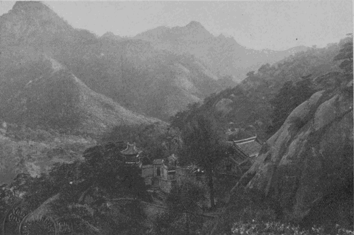
千山の無量観（道教の廟）の外景
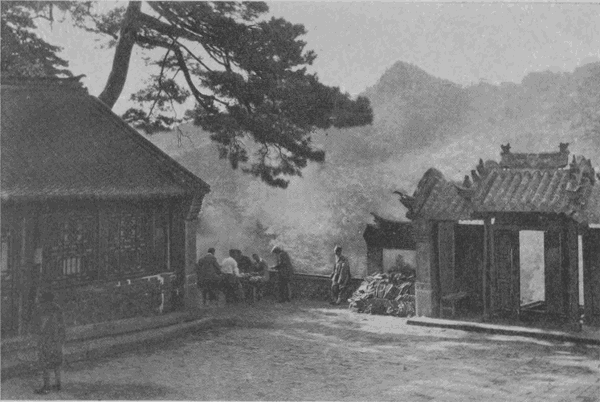
千山の無量観の一部内景
［＃改丁］
×
自分は妻を携へて満蒙と北京とへ旅行することになつた。二人とも久しく教壇と書斎との間を往復する生活に固定してゐたので、俄かに籠を放れて羽を伸ばすやうな気持である。
一九一一年に欧洲行の途次に上海を一瞥した以外に自分は支那の地を知らない。妻は浦塩斯徳から汽車でハルビン、満洲里を過ぎて欧洲へ行つた事はあるが、彼女も支那とは殆ど初対面である。
我我は先づ何よりも公務や商用で旅行する境遇でないことの気安さを喜んだ。満鉄本社は我我を招いて、満蒙の晩春初夏を観て歩かせ、気に入つた所で歌を詠めと云ふのである。こんなに愉快な旅行は生涯に幾回もあらうとは想はれない。我我は本社の諸友の厚意を満喫しよう。
出発前に古澤幸吉君はハルビンから、宇佐美寛爾君は大連から、共に旅行についての注意を与へられ、東京の小村欣一、上田恭輔、三樹退三の諸君は紹介状を恵まれ、正宗得三郎、古川達四郎、川西泰一郎、嘉治隆一の諸君は種種の配慮を賜はるのであつた。それから慶応大学の文学部長川合貞一博士は自分の請暇を快諾せられた。
×
昭和三年五月五日の夜、家族だけに送られて、そつと出発する積りで東京駅へ来て見ると、意外にも多勢の友人や学生達が見送られた。友人達の中に野口米次郎、正宗得三郎、新居格、赤城泰舒、河崎夏子、有島信子諸君の顔を見た。
翌六日神戸出帆の亜米利加丸には、京都から親戚の小林政治君、大坂から倉田厚子夫人が見送られた。妻の弟の鳳宗七君も堺から来て見送つてくれた。
船中には、文部省の督学官野村禮讓君、東京帝国大学の俵國一、澁澤元治両博士、京都帝国大学の学生監花田大五郎学士と乗合せた。花田君は歌人として我我夫婦の旧知である。他の三君は生面であるが、野村君は話してみると、自分と同じく西本願寺派の僧院に人となられて、君の旧交にまた自分の旧交が少なくないのを知つた。澁澤博士はまた大学に於て妻の兄に師事せられた人であつた。七日の朝門司に著いて、ここから東北帝国大学の学長小川正孝博士と福岡帝国大学の西川博士とが乗られた。是等の諸君は共に旅順にある工科大学の開校式に赴かれるのである。
門司に碇泊中、三池から白仁秋津君が見送に来てくれた。我我は正午に船の出るまで白仁君とサロンの一隅にあつて歌を詠んだ。
神戸より大連まで四日間の海上は、幸に好晴で、駘蕩たる和風の中に浪も立たず、どこまでも瀬戸内海の続きのやうであつた。殊に毎夜の月明がよかつた。同船の諸君に銅臭が無く、平生蠹魚の生活を送つてゐる我我も、諸君と食後の卓を囲む会話を喜んだ。それに感謝すべきことは、船長遠藤友吉、機関長鈴木豐馬、事務長吉田信夫諸君、その他船員達の接客法が一層誰れにも快適の感を与へたことであつた。
［＃改ページ］
×
九日の朝、その名にふさはしい巨躯と温容とを持つ大和尚山を右舷に遠望しながら、大連の埠頭に著いた。満鉄本社から船内まで出迎へられたのは意外にも旧友の西田猪之輔君であつた。西田君は十四五年の前、その逓信省在官時代に、我我の詩社に在つて、屡夜を徹してまで共に歌を詠む仲間の一人であつた。君が久しく満洲に居られるとは知らなかつたのである。埠頭には宇佐美君夫婦、画家の眞山孝治其他の諸君が出迎へられた。中にまた意外にも二十年来の旧友である渡邊三角洲君の顔があつた。渡邊君も歌を詠む人である。実を云ふと、出迎へて下さつた人達は、宇佐美君夫婦の如く書信の交際はあつても、総べて生面の挨拶を述ぶべき人達ばかりである。出発前から妻は窃かに此事を心細く感じてゐたのであつたが、計らずも西田渡邊二君の旧識に逢つて、彼女はほつと安心する様子であつた。
桟橋と埠頭の壮観、それは日露戦争以後たびたび聞かされてゐたやうでもあつた。またさうでないやうな物足りなさも感ぜられた。埠頭から眞山君に案内されて大和ホテルに著くまでの自動車から眺めた大連市街の欧洲風の外観も、整頓はしてゐるが、かさかさとして硬い感がした。上海だけの寂びと潤ひとが無いのは歳月を経ない新市街のためであらうか。「大連へ行くと欧羅巴へ行つた気がする」とは、欧羅巴へ行つた経験の無い人のよく云ふ言葉だと想はれる。その比較には欧羅巴が顰蹙するであらう。ホテルの前の広場を中心にして放射形に伸びた市街は、流石に後藤伯の総裁時代に出来た大規模の設計として感歎に値する。若し是れが欧洲であつたら、どこと無く芸術的な匂ひが漂はずには居ないであらう。噂に聞いて期待してゐただけ、広場の装飾の貧弱さよ。石の彫像一つ見当らないのはどう云ふものかと、自分は先づ眞山君に一問を呈するのであつた。併し我我は大連へ著いて顔も洗はない先に、もう既に不満を感じてゐるのではない。反対に埠頭からホテルまでの大連の第一印象は、何となくゆつたりとして心の落ちつくのを感じた。これは東京、いや日本内地の生活全体が余りにせせこましく繁劇で且つ窮屈なのに対照して、満鉄王国の首都にある人人の実生活が経済的に――引いて精神的に裕福なためで無からうか。それとも大陸の自然の曠漠たる所が在留邦人の気象に反映してゐるためであらうか。恐らくは両者の綜合された関係からであらう。
今日から数日間に亘つて、眞山君が大連と旅順との見物に案内役をして下さることに本社で決まつてゐた。眞山君は生面であるが、君の性情はかねて有島正宗の両画家から聞いて熟知してゐる。画家を東道の主人とする気の利いたことは多分宇佐美君あたりの配慮であらう。勿論、眞山君には迷惑なことであるが、我我はよい案内役を得たことを喜び且つ感謝した。
午後眞山君を煩はして、本社の諸君へ夫婦で挨拶に赴いた。我我は友人の私宅を訪ふことは好きだが、官公衙や大会社の廊下と階上とを昇り降りして執務中の人を訪問することは、その打解け難い寒い気持が嫌ひである。鉄道部長としての宇佐美君、文書課長としての木村通君、某課長としての石川鐵雄君、其他一二の諸君をその各室に歴訪し、此度の厚意を謝して
 として辞した。曽て巴里に居た時、或人に案内されて、レザンナル誌の主筆やタン紙の主筆を訪問した時、日本服の妻を珍しがつて、どの社でも写真を撮られたりしたのが、南洋の土人でも見世物にされるやうで不愉快であつたが、今度は久し振に異境へ来て、こんな不慣れな社交の真似をして歩くのも、旅中の風情として面白く感ぜられた。
として辞した。曽て巴里に居た時、或人に案内されて、レザンナル誌の主筆やタン紙の主筆を訪問した時、日本服の妻を珍しがつて、どの社でも写真を撮られたりしたのが、南洋の土人でも見世物にされるやうで不愉快であつたが、今度は久し振に異境へ来て、こんな不慣れな社交の真似をして歩くのも、旅中の風情として面白く感ぜられた。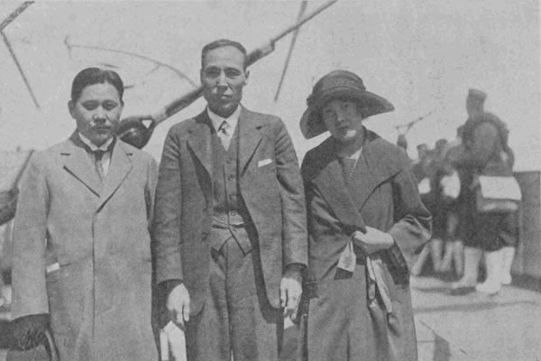
アメリカ丸の甲板にて（向つて左より花田君・寛・晶子）
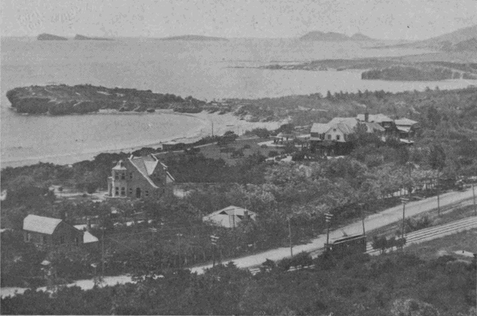
大連市外の星ヶ浦
×
支那へ行くと各地に「
西側に櫛比した矮い店舗が、どれも粗末な古著や古道具を並べてゐる。露店よりも店舗の方が多い。東京の場末にもかう云ふ古道具屋が古靴や空瓶や
この市場の中には諸種の飲食店が混在し、
最後に表通へ出ようとして支那の公娼窟を横ぎつた。路傍に娼婦の共同浴場があつた。勿論関東州の日本警察署が管轄する土地であるから、純粋の支那街の公娼窟ではない。
それから眞山君は予等を老虎灘の景勝へ導かれたが、薄暮の海から吹く風が荒く且つ寒くて崖下の佇立をも徘徊をも許さなかつた。予等は小松を移植した崖上の坂道を殆ど匍匐して登り、一茶亭に入つたが、別に客無くして索寞たるものであつた。想ふに大連に来つて老虎灘を訪ふのは夏日の晩涼、秋宵の月明を好しとするのであらう。
今夜ホテルへ多くの人の来訪を受けた。西田猪之輔、渡邊三角洲両君とは別後と
×
翌十日は西田君に伴はれて、午前に埠頭の福昌華工株式会社を訪うた。会社は支那の労働者を満鉄へ一手に供給する事を営業とし、間接に満鉄の経営する所である。「苦力」の称を避けて「中華の職工」の意味で「華工」と云ふ新語を造つたのは経営者の用意の存する所であらう。予等は其の華工の寄宿舎を見せて貰ふのが往訪の目的であつた。
会社の建築物は九十余棟の寄宿舎が主たるもので、其れを「碧山荘」と云ふ雅名で総称してゐる。庶務課主任の平野琢磨君が鄭寧に予等を案内せられた。煉瓦家屋の舎内は中央に道路があり、その左右が二尺足らずの高さの
 」は底本では「※［＃「火＋元」、U+2AE11、12-12］」］（温突）になつて居て、其上に高粱の
」は底本では「※［＃「火＋元」、U+2AE11、12-12］」］（温突）になつて居て、其上に高粱の右は独身者の宿舎であるが、此外に夫婦者の小さな宿舎が幾棟かに分れ、一世帯が一棟を占めてゐる。細君達は炊事や洗濯をして居た。どの宿舎も日本人の監督の下に概して清潔である。別に療養所や浴場の設備もある。平野君の話では、此の寝舎に慣れると、華工は余所へ行きたがらない。支那の下層民が不潔に甘んじるのは決して天性では無いとの事である。
会社は現に一万以上の華工を収容してゐる。華工の出身地は概ね山東省に限られてゐると云つてよい。其等の華工は約二百人の「華工頭」と称する親方の支那人に分属してゐる。その華工頭の勢力に由つて部下の華工数に差があり、多き者は一人にて百三十人を支配し、その賃銀の一部を収めてゐる。華工頭の助手としては「二頭」が居り、会計役としては「先生」と呼ばれる者がゐる。また「先生」に属して炊事役の「大師父」と「二師夫」とがゐる。「華工頭」の称も会社の命名であつて、他では一般に苦力の親方を「
華工の賃銀は一日四十銭より五十銭止まりである。其内から華工頭に食料と分頭税と差引かれても、一箇月に四五円を貯金し得ると云ふ事である。社外の苦力の労銀は大抵一日四十銭であるが、彼等の一日の食費は十銭内外で足ると云ふ事である。
平野君は更に予等を後方の山腹に引いて、華工の信仰の為めに会社で建てた道教の廟を見せられた。先づ廟前の
山に見る道士のころも春過ぎて猶目に紅し桃の花かと
大連の港の上の草山 に桔梗の色の初夏を嗅ぐ
実際に山上から見る此日の空も海気も桔梗色をしてゐた。大連の港の上の
碧山荘に隣して、同じ丘陵つづきに寺児溝の貧民窟がある。予等は平野君に案内されて其の一部に足を投じた。どの家も雨露を凌ぐだけの小屋掛である。板きれ、棒切れ、アンペラ、廃物のトタン等を材料とした小屋に、矮い土壁を繞らしてゐるのは、大震災当時の東京の下町の小屋掛そつくりである。中には崖側を穿つて穴居し、その入口に板葺で掛け出しをしてゐるものもあつて、「厂」と云ふ象形文字の起原を実地に見る気がした。其等の小屋の附近には、また必ず柵を繞らした小屋を伴つてゐて、それに一双の豚を飼養し、豚の子が二匹三匹柵を抜け出して遊んでゐる。種種の汚物が路に粘著して、不潔なことは云ふまでもない。人と家畜との住居の比例がよく取れてゐて共に睦まじ相でもある。「家」と云ふ文字が豚小屋に由来することも首肯せられた。「厂」の字の入口から一つの半穴居を覗くと、入口に土の
平野君の説明に由ると、日本の警察が此の丘陵に住むことを禁じてゐるのであるが、是等の支那人は何処からとも無く来て、一夜の中に土壁を繞らし小屋掛を造つて
華工会社では予等に昼食を饗すると云つて、市内随一の日本料理「浜の家」に招かれ、席には主人役として会社の専務高尾秀市君と秘書の藤山一雄君が斡旋された。高尾君は予等をして初対面の間隔を置かしめない程快活によく語る人である。談じて満蒙の経営に及ぶ時、放胆な中に小心な用意の存する所を看取することが出来た。殖民地に必要な偉材の一人であらう。君の話の中に、近く某氏が満洲に於てアカシヤの木から良質の人造絹糸を造る発見をした。これが将来の特産物として重きを為すであらうと云ふ一事が、特に予の心に銘記せられた。
藤山君は事務家にして学究的な所を兼ねた人である。近く支那の苦力の食物と労働能力との関係に就いて科学的に研究された一冊の書を予等に贈られた。その結論に由ると、謂ゆる支那流の粗食は栄養学上より見て決して粗食で無く、卻て日本労働者の堪へ得ない強度の力役に服し得るのである。この研究報告は日本人の食物と栄養観念とにも緊要な反省資料を提供するものであらう。
浜の家の女将は、予等を待受けて、妻の書いた藤花の歌の一軸を床に掛けて居た。妻は二十年前の悪筆を見て耻ぢた。大坂の某氏より女将に贈つて来たものであると云ふ。食後に紙筆が運ばれたが、予等はまだ書くべき満洲の歌を殆ど持合さなかつた。
×
今日は午後三時より西公園の某亭で催された満洲短歌会に招かれて行つた。会員の中に婦人達もあつた。即題で詠まれた諸君の歌は、二三氏の作を除く外、可なり予等を失望せしめた。歌の擬態をしてはゐるが、多く常人の平板な感情に止まり、詩の領域に入る新しい感激の予等を驚かすものが無かつた。大正以来久しく東京の歌壇に流行してゐる万葉集擬似体が満洲の青年達にまで影響してゐるのである。此席で安西君と云ふ詩人に逢つた。妻が小学時代に学んだ安西先生の令息である。また旅順から来会せられた中尾千代子さんと云ふ令嬢にも逢つた。千代子さんの歌は叙情詩の域に入つてゐた。
帰途初めて支那の馬車に乗つて、夜の大連市を縦断した。きたなくはあるが、石だたみの街道に馬蹄を響かせて、用も無く漫歩する呑気さは、支那気分の一端に触れたものであらう。同乗の西田君に露西亜のカバレエへ案内されたが、踊子の露西亜娘は総べて頬が痩せ落ちて、さながら怪異図中のものであり、一杯のウオツカは苛烈にして、予等は唯だ其れを前にするのみであつた。まだ夜が浅いためであらう、予等三人の外に客が無く、彩色灯と拙い音楽の中で踊子のみが踊るのを見てゐると、旅愁に似たものが冷たく心に上るのであつた。
×
五月十一日、前夜の約に由つて、朝から渡邊三角洲君が大連見学の案内をされた。満鉄本社の自動車に載せて貰つて、先づ大連病院を訪ひ、次いで或る硝子工場と或る油房とを観て廻り、正午を過ぎてホテルに帰つた。
病院は後ろに山を負ひ、宏壮な洋風建築を丘陵の上に屹立させて、大連市を前に俯瞰し、巍然たる城塞の観を成してゐる。内部の設備の充実してゐる事は、我我門外者の観察ながら、日本の大病院にも是れに匹似すべきものが少なくはないかと想はれた。医員に如何なる名手が揃つてゐるかを聞き洩したが、満鉄の経営に由る此の病院のある事は、大連市民は勿論、関東州に在る日支両国民に一つの安心を与へるものであらねばならない。昔の話ながら、予の父は明治維新の直後、王政復古の恩沢を国民に如実に示す方法の一つは、国民の健康を保護して安堵せしむるにありと考へ、明治六年に今の京都府立病院を全国に率先して創立し、内外の医家を聘して診療に当らしめたのであつた。予は今日大連病院の各室を縦覧しながら、五六歳の頃、父に伴はれて洛東の粟田山にあつた当時の京都療病院の室内を見て廻り、初めて顕微鏡を覗いた事などを憶ひ起すのであつた。大連病院の屋上から、初夏の緑を交ぜた全市に続いて、北と西南に拡がる遼東の曠野を初めて展望することが出来た。予は前述の幼時の思出と此の遠望との中に、料らずも少年のやうな心になつてゐた。
大連には硝子製造の会社が二つある。予等は今日その一つを往訪した。社員某君の案内と説明とは親切を極めて、素人の予等に硝子製造の順序と成績との大略を領得せしめるに十分であつた。関東州に資料の硅石が豊富にあること、及び労銀の低廉なことが此地に工場の起つた理由であるが、製品は内地向きより主として支那向きの物である。硅石は一種で無く、朝鮮産の物が調合される。さなきだに沙塵の多い支那の地で、この工場は特に硅石を粉末とする機械から白濛濛たる繊塵を飛揚する所である。誤つて逆風を吸はうものなら咳気に堪へないであらう。熔炉の並んでゐる室に入ると、半裸の支那人が大して
或室ではコツプに焼きつける上絵を、そのコツプの側面に描いてゐる一団の支那職工がゐた。謂ゆる「
この工場の或室では、十四五歳の支那女工等が砕片となつた硝子を撰り分けてゐる所がある。すべて素手を用ひながら指を傷つける様子が無い。さながら麻雀でも
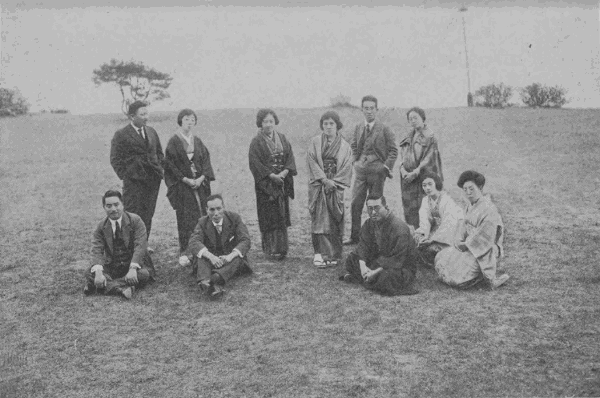
星ヶ浦海岸星の家の庭上
（向つて右より前列某夫人・小日山君・寛・西田君）
（向つて後列右より宇佐美夫人・千葉夫人・石川君・晶子・石川夫人・小日山夫人・眞山君）
（向つて右より前列某夫人・小日山君・寛・西田君）
（向つて後列右より宇佐美夫人・千葉夫人・石川君・晶子・石川夫人・小日山夫人・眞山君）
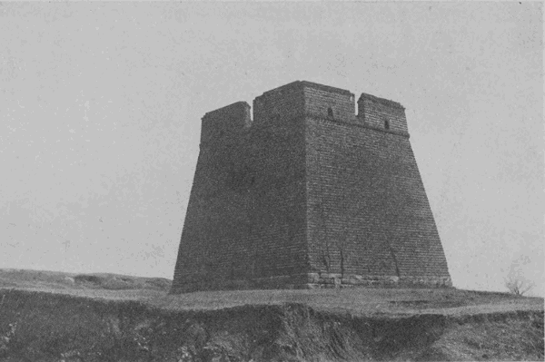
金州の丘陵上にある煙台（烽火台）の一
×
油房もまた大連に幾つかある。満洲に豊富に産する大豆を搾つて油を製し、その豆粕を肥料其他の用に供給する工場である。以前は有利な事業であつたが、近年は次第に頽勢に傾いてゐると云はれる。予等は三井が間接に経営してゐる一油房を観せて貰つた。ここは油地獄とも云ふべき印象を与へる光景であつた。蒸された大豆が圧搾機に運ばれて断えず湯気を立てる。コトン、ギユウと云ふ音につれて、どの圧搾機からも、たらたらと黒味を帯びた飴色の血、いや油が
として歩を他の室に転じるのであつた。×
予等は今日北京の友人金崎賢氏からの手翰に接した。南軍が北京に迫る形勢となつたので、在京の日本人は避難の用意で騒いでゐる。既に君達を迎へる準備をしてゐるが、今後の形勢を見た上で北京に来れと注意して来たのである。其事を新聞に由つて既に知つてゐる予等は、いよいよ北京の一遊の中止すべきを思ふのであつた。
×
今日の夕刻、再び高尾秀市氏に招かれて西田君と共に、支那の酒亭杏楽天へ赴いた。所は小崗子である。その途次、高尾君が先きに行つて待たれてゐると云ふ某所へ自動車を寄せた。其処は支那の妓館であつた。高尾氏は予等に斯かる所をも一見せしめる機会を作られたのである。高尾氏の外に高尾氏の夫人令嬢も待受けられて居た。妓某は常に高尾氏の家の宴席にも侍する女であるらしい。高尾氏の話に由ると、前身は天津の名妓であつた。「勿問流落身、多因郎情薄」とでも云ふべきであらう。妓は両腕に金細工の装身具を幾つもチヤラ、チヤラと音させて、客毎に茶と果物とを勧め、よく快活に語つた。年は二十四、もはや豊頬の美は無いが、歌が巧みだと云はれる。予等には初めて目にする妓館の室内が珍しかつた。阿片吸飲の道具をも見た。支那の寝台の彫刻や装飾画が今も李唐の図様の伝統を留めてゐるのをも見た。
×
少時の後、高尾氏外諸君と共に杏楽天楼に赴いた。予は明治の末年に、上海
×
五月十二日、朝、小日山満鉄理事が夫人と共に来訪せられ、自著の歌集を贈られた。歌集は君が奇禍に遭つて獄に入り、寃晴れて後、欧洲に遊ばれた間の感懐を詠ぜられたものである。予等は君の歌に現れた誠実と雅懐とを尊敬し、併せて其の専門歌人臭の無いのを喜んだ。真の歌には師を要しない。ますます君が独自の創作態度を徹底されたいと望むのであつた。
×
午前九時に眞山君と自動車を共にして旅順に向つた。坦坦たるアスフアルトの大道が、予等に戦跡を訪ふ人と云ふよりは、郊外散歩の人の快適を感ぜしめつつ、自動車の滑べるに任せた。海を左にし丘陵を右にする星ヶ浦の景勝と欧風住宅とは、アカシヤの明緑に
予等は再び自動車に乗り、新市街の大和ホテルに入つて午※［＃「餮」の「珍のつくり」に代えて「又」、U+4B38、32-1］を喫した。ホテルの各室に眞山君の絵の多く掛つてゐるのを観た。それより関東軍司令部に役山中佐を訪ひ、鎮遠町の官舎に憲兵司令官の小山介藏少将を訪うた。共に予の親戚の親しくする人人であるが、時の乏しきために、少話の後、
として辞し、更に自動車を爾霊山に走らせた。一尺の地歩を占むるにも幾百の勇士の血に代へて猶難しとした当年の戦跡に、かく軽快に車を駆ることは、まことに相済まぬ気がするのであつた。旅順の諸嶺は、我軍の猛射のために、すべて旧容を存しないまでに破壊されたと聞いてゐたが、戦後に陸軍の移植した小松が繁殖し、今は一般に蒼緑の色を呈してゐる。余りに松が茂つて戦跡の哀景を掩ふに至つたから、少しく伐り去らうと云ふ議さへ起つてゐると聞いた。それも例の軍人趣味からであらう。併し此の爾霊山の頂だけは沙岩を露出して、猶当年の惨状を想像することが出来た。謂ゆる二〇三米突の最高峰に立つて四望すると、東北には砲台のあつた諸峰が連立し、西北には関東州の平野、南には渤海、東には黄海を遮断して壁立する老鉄山と旅順新市街との間にコバルトを湛へた西港の水が俯瞰される。如何にも戦跡と思はれないまでに優麗と壮大とを融き合せた景観である。日光は直射するが、海より吹く
山を下つて新市街を過ぐる時、アカシヤ並木の若葉が持つ柔かな鮮緑を車上より幾たびも
×
大連に帰つて、午後二時より満鉄本社の倶楽部に開かれる講演会に臨んだ。斯かる事に最も不得意な妻は、前夜に書いて置いた草稿を朗読し、予は近代の詩歌について述べた。聴衆は会場に満ち、特に婦人達が多かつた［＃「多かつた」は底本では「多かた」］。
夕方西田君に伴はれて満鉄本社営業課の加藤郁哉君と予等夫婦が星ヶ浦の大和ホテルで晩※［＃「餮」の「珍のつくり」に代えて「又」、U+4B38、34-7］の饗を受けた。食前に散歩したホテルの
×
五月十三日、今日は西田君の案内で、朝、金福鉄道の汽車に乗り、金州以東の支那領で、黄海に面した貔子窩に遊ばうとしたが、途中で雨に遇ひ、
今夜俄かに西田、加藤、渡邊三君を促し集めて短歌会を催すことにしたが、折柄来合せた高井覺太郎君の招かるままに、老虎灘途上の山の手にある同君の別宅に会し、晩※［＃「餮」の「珍のつくり」に代えて「又」、U+4B38、35-11］の饗を受けて夜更くるまで筆を執り、吟興の尽くるを知らなかつた。加藤君は詩人だけに、恐らく処女作と想はれる今夜の短歌が意外の新味に富んでゐるのを見受けた。
×
十四日、朝より眞山君の社宅に招かれて行き、初めて眞山夫人と令嬢達に逢ひ、階上に於て大連の諸君に分つべき諸種の揮毫をした。宇佐美夫人も特に来つて、眞山君と共に予等の揮毫のために座上の斡旋をして下さるのであつた。午餐には眞山夫人の心尽しに成る食卓に就き、宇佐美夫人、眞山君一家と共に、家族的に打解けた一時間を過ぐした。去年有島生馬、正宗得三郎二君が来遊せられた時、相携へて北行した眞山君は、此度も予等と行を共にせられる予定であつたが、予等の来遊が遷延したのと、奉天にある大和ホテルの新築のために急に絵を描かねばならぬ事情とから、大連以外の案内役を加藤君に譲るに至つた事を遺憾とせられるのであつた。
今夜予等は宇佐美氏夫婦の招宴に赴いた。場所は支那料理の某楼である。卓を囲む諸君は悉く満鉄の諸君であり、何れも支那事情の生き字引を集めたので、予等の一の問は忽ち十の話題となつて展開し、雅俗笑謔の歓談は支那酒の杯と共に重ねられた。大連の邦人は満鉄の諸君に官臭（お役人風）があると云ふ。予は寧ろ多少の官臭はあつても、亜米利加風の商臭の無いことを祈る者である。併し今夜の諸君は官臭も無く、商臭も無く、勿論予等の最も嫌ふ支那浪人臭も無かつた。唯だ真率なる書生風にあらざれば謙抑なる紳士風を見た。或は主賓たる予等が善かつたせいかも知れぬ。
×
十五日、午前は眞山君に伴はれて満鉄本社を初め、宇佐美、小日山其他諸君の家へ告別のために赴いた。予等は明日大連を発して北に向はうとするのである。帰路に大連物産陳列館、三越呉服店其他を観た。午後は西田君と南山の麓にある大連神社の祭礼を一拝した。季節は初夏ながら是れが大連の
×
午後三時より、小日山君夫婦の主催で、星ヶ浦の水楼星の屋に短歌会が開かれ、主人夫婦の外、石川鐵雄君夫婦、千葉夫人、眞山西田両君及び予等夫婦が会した。満鉄本社の高級な人達に由つて、予等のために斯かる雅会が開かれようとは予期しなかつただけに嬉しい事であつた。夕方より俄かに蒙古風が烈しく吹いたが、其中で芝生に蹲踞して記念の撮影をしたのは夫人達の迷惑が想はれた。夜となるままに、主客ともに余談をまじへず歌の制作に澄み入つた。歌を詠んだ経験の無いと云ふ石川君も即座の実感を詠まれた。
予等は北満よりの帰途、或は京奉鉄道に由つて北京に行き得るかも知れないと思つてゐるので、若しさうなるなら、再び大連に来ないであらうから、いつまた諸君と会し得るかを思つて惜別の情に堪へないのであつた。
蒙古かぜ大連を吹き海暗しかかる日人に別れんとする
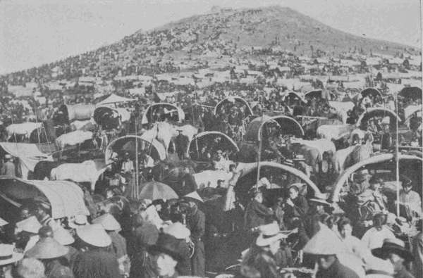
大石橋附近の娘娘廟の大祭
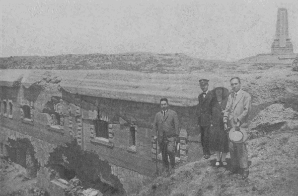
旅順東鶏冠山砲台の廃墟に於ける一行
（向つて左より西田君・伊藤君・晶子・寛）
（向つて左より西田君・伊藤君・晶子・寛）
夜更けてホテルに帰り、明朝の行李を妻と共に整理して寝についた。
大連を明日立たんとて荷づくりを夜更けてすれば旅役者めく
予等の一週間滞在した大連の印象が甚だ快適なものであつたのは、季節も一年中の好期であつたが、何よりも邦人諸君の慇勤な情味に由る事である。特に予等を招かれた満鉄本社の諸君が気を利かせて、繁雑な俗的待遇を省略せられたのが好かつた。予等はお目に掛つた大連の諸君のすべてに感謝する。［＃改ページ］
金州以北の記（與謝野晶子）
十六日の朝、加藤郁哉さんと三人で満鉄本線の急行列車に乗り、大連を出立した。大連駅へは宇佐美、小日山、石川、眞山、西田の諸氏と令夫人達、其他多くの人人が見送られた。
金州駅へ下りると、駅長の厚意で日本語の出来る支那人の青年駅夫を案内として馬車に載せ、先づ附近にある南山に、日清日露両役の戦跡を訪うた。南山は金州平野の一部にある低い丘陵地で、小松の中に白い御影石の記念碑が建つてゐる。戦跡を弔ふと共に、よく晴れた五月の空のもとで、高粱が芽を出したばかりの広い緑野を展望するのは快いことであつた。傾斜地の砂に「たんぽぽ」や野生の「あやめ」が乱れて咲いてゐるのを見て、良人が支那名を問ふと、青年駅夫は「あやめ」を「燕子翼」（エンヅ井）、「たんぽぽ」を「婆婆丁」（ホホチン）と教へてくれた。「あやめ」の花を形容して「燕子花」と云ふのは古代からの雅名で、日本にも知られてゐるが、「燕子翼」即ち燕の羽と云ふ方言は初めて聞くのであつた。それよりも良人を喜ばせたのは「婆婆丁」である。「丁」は「丁子花」、「沈丁」、「紫丁香」の如く香気ある花に加へる語であるが、国語の「タンポポ」は「丁」を上部に用ひた古代支那語であることが推定せられると良人は語つた。
南山を辞して金州城へ向ふ途中の光景が私達を喜ばせた。路に沿ふ楊柳の間から、緑野の前方に、金州の城壁と、其上にある可愛いい城楼とが竜宮の図のやうに望まれ、路には種種の形をした支那の荷車が交錯し、その中を支那馬車に乗つて行く呑気さは、異国情味の面白さであつたが、唯だ白く立つ砂ぼこりには困つた。
金州の城門をくぐつて、ここに初めて私は城壁に囲まれてゐる支那の市街を目にし、「城」と云ふ語が日本の「シロ」の概念とは差別のあることを実際に知ることが出来た。
遼東の古都であるだけ落附いた市街である。繁華な光景は中央道路に限られてゐるらしいが、富んだ商家と紳士の大きな邸宅は横町に重壁を構へてゐる。良人は此地の中央道路の印象を「白く立ちのぼる砂ぼこり、食物に本づくらしい一種の臭気、人馬の影と騒音。敷石は車輪の跡で
×
満鉄が支那人の教育のために各地に設けてゐる公学堂の一つが此の金州の城外にもある。私達は公学堂に日本人の某先生を訪ひ、先生の御案内で東門外にある有名な天斉廟を観た。「廟」と云ふ語は「寺」に対して支那の社を云ひ、大小ともに「廟」を以て呼ばれてゐるが、今日では道教系のものが多く、それに少しく仏教をも混じてゐる。「天斉」は道教の神で、山東省の泰山の主神である。久しい前から山東の漢人が植民した土地である満洲には此の天斉廟が各地に多いと聞いた。
併し此の金州の天斉廟は今禅宗の一派雲棲派の寺となり、道士が住まずに僧が住んで管理してゐる。廟は正殿と寝殿とに分れ、寝殿は後部に在つて、其処には夫婦二神の像が略服を著けて、一日の晏居に、云はば天地人間の司配を忘れて家庭の和楽に浸つてゐる形である。その左右にある四人の脇士が詩書、硯、琵琶、琴の四種を捧げて立つてゐるのは、さすがに礼楽の国の神像であると思はれた。どの国の宗教の群像にも、こんな風に夫婦の神が家庭生活の学問化と芸術化とを象徴してゐるものは無いであらう。
この廟はまた別殿に地獄の諸相を現はした彫像があるので名高い。芸術的価値の無い清朝の作ながら、其中に人間を秤に掛けて罪の重さを測つてゐるものや、地獄の苦役を終つて解放される魂に著せるために、いろいろの動物の皮が彫刻され、中に人間の皮は唯一枚しか無いのなどは皮肉な意匠である。信仰奨励の一助として、かやうな彫刻や図絵を作ることは、可なり古い仏教徒の手段と見えて、万葉集の餓鬼の歌や、法隆寺の塔内の彫刻にも遺つてゐるが、それを今日の遼東でも目にしたのは一の有益な参考であつた。
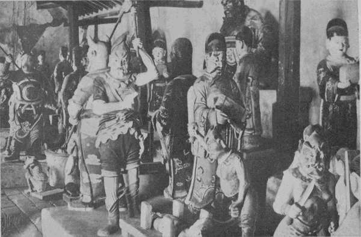
金州の極楽寺にある地獄像
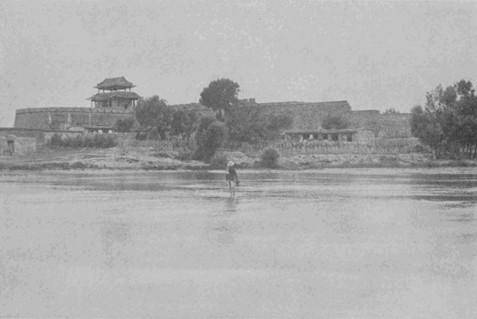
熊岳城と熊岳河
×
先年この境内の土中から、弘安役に関する記文のある石碑を、案内して下さつた先生が発見せられたのは、既に日本の史学界に報告せられた事であるが、その石碑は此の金州の文廟（孔子廟）のある南京学堂に保存されてゐる。私達は文廟へも行つて、その石碑を読むことを得た。此地の文廟は大破してゐるが、その庭と池には猶文廟建築の古式が俤を留めてゐるのであつた。
×
金州附近の土は珍しく全体に
それに大連ではまだその季節でなかつた柳絮が、金州へ来ると、もう今を盛りに散つてゐる。有るか無きかの
 華一不レ点レ紅、自飛二晴野一雪濛濛、百花長恨風吹落、唯有二楊花独愛一レ風」と云ふ詩を引いて、「この詩の面白味が分かる。如何にも柳絮は風を愛するやうでもあり、風に愛されてゐるやうでもある」と語つた。次の一首は私の歌である。
華一不レ点レ紅、自飛二晴野一雪濛濛、百花長恨風吹落、唯有二楊花独愛一レ風」と云ふ詩を引いて、「この詩の面白味が分かる。如何にも柳絮は風を愛するやうでもあり、風に愛されてゐるやうでもある」と語つた。次の一首は私の歌である。城外の南金校の先生と馬車を共にす柳絮の散る日
金州を半日で観て、午後の汽車で熊岳城駅に向つた。車窓の右に見る低い連山の上に、石を重ねて造つた明時代の煙台が半崩れながら幾所にも残つてゐる。我国の倭寇の来襲に備へた烽火台である。
駅と熊岳城の市街とは一里ばかり離れてゐる。此地にもある公学堂の主事の案内に由つて、私達は自動車で先づ満鉄経営の農事試験所に立寄り、所員の親切な説明を聴き、また参考品を縦覧して、お蔭で南北満洲の生産物に対する一般概念を得ることが出来た。平生統計学に興味を持たない私も、かういふ一般概念を養ふためには、やはり統計の数字が大に役立つことを思ふのであつた。
それから首都である熊岳城の市街の見物に赴いた。城壁は熊岳河の右岸に臨んでゐる。金州とちがひ、此処は我国の租借地外であるため、支那巡査の許しを求めて、私達は東門の城楼に上り、城壁の上を歩みながら、河を前に、南方の平野と東北の連山とを展望した。城壁の上は広い所で二間の幅を持つてゐた。満洲には「沙河」と云ふ名の河が多く、名の通りに平生は沙の川であり、雨の後に暫く水を見るのであるが、今日見た熊岳河は沙の中に少しの水を通じてゐるのみであつた。渤海に注ぐ大河を脚下にして、対岸の諸山を眺めるのは、支那旅行らしい懐古的な情景であつた。
城内はキリスト教青年会が排日の宣伝をしてゐるので、私達は万一の危険を警戒して、東門から北門への大通を
初夏の熊岳河の蘆の葉を支那の粽は三角に巻く
×再び農事試験所に帰り、今一度農学士達の深切な御案内で、満洲に産じる穀物、野菜、果物、糸布、動植物等の標本を見、また広い農園内の植木や苗木を見て実物教授を受けるのであつた。高粱（稷）にも幾つかの種類があり、豆類に至つては四十種以上に分れてゐる。
今夜は熊岳温泉に泊つた。温泉宿は熊岳河の上流西岸にあつて日本人の経営である。温泉は河の沙原の各所に湧くのを室内に引いてゐるが、特に珍らしいのは河原に出て自由に沙中の湯に浴し得る事である。夏季には大連其他の日本人の浴客が此処に集まる相であるが、支那人は既に土地の者も通りすがりの者も、裸になつて沙を掘り、適宜に傍らの水の流れを入れて湯加減をしつつ、首まで浸して、青空の下に附近の山を仰ぎ、楊柳の林を眺めながら談笑してゐる。如何にものんびりした光景である。此夜は農事試験所、公学堂等の日本人の御夫婦や令嬢達が宿に集まられて、私達と座談を共にして下さるのであつた。
熊岳温泉は山川と楊柳の景に富み、泉質も箱根のやうに美しい。附近に一つ突起して禿げた岩山が異様の相をしてゐる。望児山とも望小山とも云ひ、昔
見ゆる山みな青けれど児を望む山のみ寒し野の中にして
満洲の柳のなかに児を望む山はあれども東京遠し
私の此地で詠んだ歌の中に満洲の柳のなかに児を望む山はあれども東京遠し
母立ちて望小山に見しと云ふその都より遠き我子ら
満鉄本線の大石橋駅で営口支線に乗換へて営口へ来た。私は史上で知つてゐる遼河の河口を観たいためもあるが、主として、自分の文化学院の最初の卒業生で、気質の優し過ぎる程な、さうして才分の文学的に豊かな古澤氏の令嬢――近く結婚して早川氏を名のられてゐる松江さんが此地に夫君と共にゐられるのに逢ひたいのと、此の二つのために来たのであつた。
営口は遼河の河口左岸に位置し、清末に鎮海営と云ふ官署を置いたので「営子口」と名づけた地名が営口と略称せられたのである。
駅には駅長さん初め松江さん御夫婦が出迎へて下さるのであつた。かねて健康を案じて居た松江さんの元気相な麗しい顔を見て、私は安心と嬉しさとに涙がこぼれた。さうして、無口な私が何時に無く多くを松江さんに向つて語つたやうであつた。純情に富んだ松江さんもまた胸が嬉しさで一ぱいであるらしく、唯だ素直に「はい、はい」と云つて聞かれて居た。私に人の師となる資格は決して無いが、日本の古典文学に対して、乏しいながらも私の持つてゐる或る味解をば、出来る事なら、私と縁のある三四人の若い婦人達に伝へて置きたいと平生祈つてゐる。その三四人の中に松江さんを窃かに数へてゐるのである。
×
駅長さんの厚意で汽艇を出して頂き、私達は松江さん御夫婦をも加へて、遼河を遡ること一里に及んだ。遼河は内蒙古の興安嶺を発して以来各所の川を併せ、二百里以上を経て、この営口に至り渤海に入るので、松花江と並んで満蒙の二大河の一つである。「史記」の蘇秦伝に初めて見える「遼東」の名は実に此河に由来する。序に云ふ。「遼東」の古意は「遼東文献徴略」の著者の研究に拠ると、後世のやうに狭いもので無く、渝関（山海関）以東、今の東三省全部と熱河東部に亘る広大な地域の総称であつた。正しく云ふと、営口は此の河口より十四浬の上流に在り、更に三浬の上流までは満潮の時に戦闘艦をも浮べ得るだけの水深を示し、支那船の戎克は三江口の上流である内蒙古の鄭家屯まで七十里の間を溯航する。其外の支流へ溯江する里数を合計すると百五十里にも及ぶ相である。営口の前の河幅は二五〇〇呎、それが濁流を満たし、滔滔として渦を巻いてゐるのは怖ろしい光景である。対岸は一帯に蘆が密生し、その向ふは平野につづいて山の影を見ない。その対岸の一部の西営口に京奉鉄道支線の停車場があつて、営口から一日に二回小汽船がその汽車に連絡し、北京や奉天へ往く事が出来る。
汽艇の上で、駅長さんが、指点して色色と説明して下さるのであつた。駅の附近の新市街には諸国の領事館や会社商店が整然として並び、旧市街と云はれる支那街は少しく河下に離れて望まれる。私は此処で初めて輻輳してゐる戎克の
駅長さんのお話に由ると、冬になると河が凍り、其上を車馬が通ふ。また雁が無数に来集して対岸を黒くする。春の解氷期に上流から氷の流れて来るのが壮観であると云ふ。また此河へ誤つて落ちた人は昔から上がつた例が無い。河の表面が静かな時でも、中部以下は渦を巻いて流れてゐるからである。
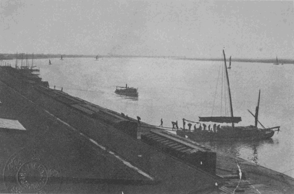
遼河河口と営口の一部
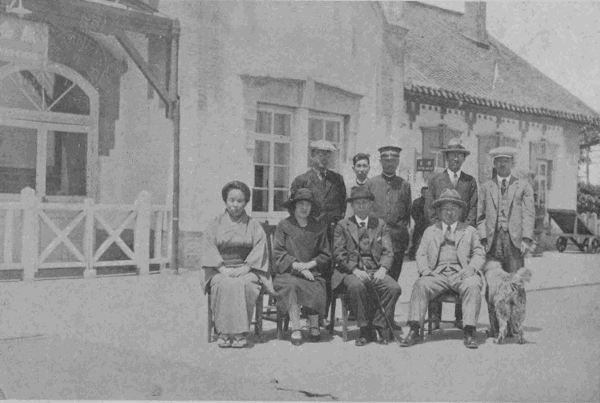
熊岳温泉に於ける一行
（前列）向つて右より加藤・寛・晶子・温泉の女主人
（後列）農事試験所の諸君其他
（前列）向つて右より加藤・寛・晶子・温泉の女主人
（後列）農事試験所の諸君其他
汽車の時間表に誤りがあつて、私達の予定した時間に汽車が営口から出ないのに気が附いて、案内役の加藤さんが気を揉まれたが、駅長さんが、大石橋駅へ返す機関車が一台ある、それを早く仕立てるから便乗せよと云はれる。私達は熱と煤煙と動揺とを覚悟して便乗する積りでゐると、また駅長さんが車掌車の空いたのを一台見付けて其れを機関車に附けて下さつた。その御厚意で臨時の特別列車に乗り、最大の速力を出して貰つて大石橋駅に引返して来ると、十分の後に大連から著いた急行列車に乗り換へることが出来たのは嬉しい事であつた。
大石橋駅の附近の迷鎮山の上に海雲寺と云ふ古刹があつて、其処に祀つてある
満鉄本線の湯崗子駅で下車し、駅前五町の湯崗子温泉のホテルに投宿した。「湯崗子」と云ふ地名と共に「湯河」、「甘泉堡」などの地名が附近にあるのを思ふと、此地に温泉の湧くのは古い時代からであらう。美しいアルカリイ泉である。ホテルは満鉄の間接経営に属し、大規模な建築と共に内部の設備が行き届いてゐる。女中がすべて素人娘のつつましさを保つて仲居風を帯びないのも好い。平野の中、楊柳の間にあるので、熊岳温泉ほどの山川の勝景を附近に持たないのは惜しいが、ホテルで樹木を植ゑたり水田を試作したりしてゐるため一種の野趣が感ぜられる。鉄道の本線に沿つて便利な為めに、在満の邦人が断えず南北から来て浴遊し、殊に夏期には露西亜人や支那人の滞浴客もあつて賑ふ相である。
私達は此地へ来て、支那人の云ふ「
湯崗子草木も土もほの白しこの思出も哀れならまし
温泉の東五里に当つて南満の名山「千山」があり、ホテルの階上から、その欠刻の鋭い峰の一面が、妙義山のやうな雄姿を半空に だてたのが望まれる。私達が湯崗子駅で下車したのは満洲の三温泉を悉く遍歴したい為めもあるが、また此の千山の奇勝を尋ねたい為めでもあつた。曽て大町桂月、田山花袋両先生も此山に登られ、去年の秋には有島生馬、正宗得三郎両先生も眞山孝治さんの案内で登られた。今年私達が満洲へ旅行する事を聞かれて、有島さんも正宗さんも是非とも此山へ遊ぶやうにと勧められるのであつた。それで今夜案内役の加藤さんがホテルの人と相談して、明日の登山の準備をせられ、此地に久しく住んで千山の事に精通してゐられる梅原秀次さんを特にお頼みして同行して頂く事に決めた。
だてたのが望まれる。私達が湯崗子駅で下車したのは満洲の三温泉を悉く遍歴したい為めもあるが、また此の千山の奇勝を尋ねたい為めでもあつた。曽て大町桂月、田山花袋両先生も此山に登られ、去年の秋には有島生馬、正宗得三郎両先生も眞山孝治さんの案内で登られた。今年私達が満洲へ旅行する事を聞かれて、有島さんも正宗さんも是非とも此山へ遊ぶやうにと勧められるのであつた。それで今夜案内役の加藤さんがホテルの人と相談して、明日の登山の準備をせられ、此地に久しく住んで千山の事に精通してゐられる梅原秀次さんを特にお頼みして同行して頂く事に決めた。×
翌朝になつた。ホテルの前に二頭の馬と一台の
一体に北に向ふ満鉄本線の左は
この途上で、私達は初めて螂と云ふ虫（
×
行く内に、次第に千山が前に迫り、また左右に近く山を望む地形となつた。左にやや遠く離れて赤褐色をした禿山の見えるのは、満鉄が採掘してゐる鞍山の鉄鉱の一つである。その附近にある諸山の鉱区を合せて埋蔵量二億噸と計上されてゐる。私達は幾たびもその鉱区の爆音を聞くのであつた。
千山の南麓に近づいて南山溝と云ふ小川があり、川に臨んで上石橋子と云ふ村がある。私達は此村の馬宿で昼の弁当を開き、湯を乞うて携へて来た紅茶を飲んだ。支那の人夫達には馬宿の食事を取らせた。その食事と云ふのは高粱か何かの粉を饅頭のやうにして蒸し、其れに何かの汁で味を附けた物に
千山は朝鮮の国境から西南に走る長白山系の支脈に属し、どの峰にも花崗岩の露頂が二千尺の標高を以て、盆石の山のやうに、著しい風化の跡の欠刻を尖らせ、中にある四十八の渓谷を繞つて懸崖と奇巌岩怪石に富み、其の稜稜とした痩姿を和らげるために、松、山梨、柞樹、
 、榛等の外に種種の雑木が恰も新緑の季節に滴るやうな明媚の色を点綴してゐる。大小無数の峰の錯落とした奇観に対して千頂山または千華山と呼ばれる名が今は千山と略称されてゐるのである。其中の重なる峰の崖腹の勝景を占めて、五寺、十観、九宮、四庵が前代の建築の荘麗を伝へてゐる。寺院は太抵宋の景徳年間（十一世紀の初め）の創建であるが、現在のものは明清の再修である。道教の宮観は清の乾隆時代（十八世紀）の創建で、是も其後に再修されたものが多い。伝説では唐の太宗が高麗を征討した時に※［＃「馬＋畢」、U+9A46、65-5］を駐めたと云ひ、また山中に隋代の碑さへもあると云はれるが、支那の現代の学者は既に其れを信じて居ない。
、榛等の外に種種の雑木が恰も新緑の季節に滴るやうな明媚の色を点綴してゐる。大小無数の峰の錯落とした奇観に対して千頂山または千華山と呼ばれる名が今は千山と略称されてゐるのである。其中の重なる峰の崖腹の勝景を占めて、五寺、十観、九宮、四庵が前代の建築の荘麗を伝へてゐる。寺院は太抵宋の景徳年間（十一世紀の初め）の創建であるが、現在のものは明清の再修である。道教の宮観は清の乾隆時代（十八世紀）の創建で、是も其後に再修されたものが多い。伝説では唐の太宗が高麗を征討した時に※［＃「馬＋畢」、U+9A46、65-5］を駐めたと云ひ、また山中に隋代の碑さへもあると云はれるが、支那の現代の学者は既に其れを信じて居ない。私達は成るたけ険しい近路を避け、上石橋子から山麓に沿うて東南に行き、左折して香巌寺の渓づたひに山に登つた。其渓は山梨の緑葉で満たされてゐた。梨花の季節は既に十日以前に過ぎたが、その花時は美しい事であらう。山中の寺院と宮観が多くの僧と道士とを住ませて、比較的余裕のある生活をしてゐる資源は全山の薪材の豊富な事であるが、この山梨の果実も其資源の一つであると聞いた。
香巌寺は渓の行詰りの屏風のやうな絶壁を背にし、釈迦堂の外に禅堂と客堂がある。山に囲まれてゐるので大観はないが、巌上に唯だ松風の音のみを聞くのは幽寂である。その附近の峰に元の高僧雪庵の舎利塔が蒼白の古色を帯びて望まれた。客堂は名の如く参詣の客を接待する禅房で、支那の寺院には必ず附いてゐる。中央に茶を煎る炉があり、卓と椅子を備へ、左右の室に
×
香巌寺を辞し、渓の中途から左折して一旦山中の平坦なる路に出で、千山諸峰の中の最高峰である仙人台を左方の上に見て、次第に北へ一里ほど行き、更に左折して別の渓へ入ると、険峻な峰を直上することになつたので、私は轎を下りて歩いた。男達は先に上石橋子で馬を返したので既に皆徒歩である。分れ路のある所へ来て、案内に慣れた梅原さんが、目じるしの雑木林が伐られたので暫く路に迷はれたが、その険峻な峰を登り詰めると、千山の内部の諸峰が展望せられて、折
 の夕明りに思はず誰も「好い景色だ」と叫んだが、少し下つて更に左方の峰へ上る路があり、其れは過つこと無く目的の大安寺へ導く奇巌松樹の間を行く路であつた。
の夕明りに思はず誰も「好い景色だ」と叫んだが、少し下つて更に左方の峰へ上る路があり、其れは過つこと無く目的の大安寺へ導く奇巌松樹の間を行く路であつた。大安寺の門前には山梨の高い一樹が白桃かと思ふやうな花を著けてゐた。香巌寺の渓よりも気候が遅れてゐるのである。高い石段を踏んで門に入ると、薄暮の明りを透して紫の雲が本堂の前の庭一面に
この大安寺は千山五大寺の中で最古の寺と云はれる。堂宇は釈迦殿の外に韋陀殿あり、朱碧の彩色は近年の新修に由つて美しい。外に広い僧堂、厨房、客堂は近く修繕を終つた所で、厠を除く外は皆比較的清潔である。満洲の民家には棟が無くて屋上の平たい構造、「魏書」に云ふ「平房」が多いのであるが、此の山中の寺院も廟観も屋頂の盛り上がつた瓦葺であるのは古式であらう。壁は民家と同じく堅固な灰黒色の煉瓦で、日本流の土壁は一も見受けない。此寺は宝台山と云ふ峰を背にして建ち、三方の諸峰は断崖と奇巌を欹だて、其間に点綴する松其他の樹木が自然の好い姿を整へ、また南の一方が開けて千山内部の山岳が重畳として展望されるので、清の張文貞の「千山遊記」には「千山の諸寺、大安最も勝を擅にす」と書かれてゐる。唯だ惜しい事に、千山は渓の多い割に水の美に乏しい。また飲料水も下の巌の間の井から汲んで来るので、潔癖な日本人には手を洗ふにも十分に水の使用の出来ないのが不自由である。
私達四人は客堂に泊り、支那の人夫達は厨房の方に泊るのであつた。携へて来た米を人夫達に炊かせ、ホテルから用意して来た缶詰類や漬物を添へて、三分心の薄暗いラムプ一つの前で夕食を済ませた。かひがひしく真鍮のサモワアルに蒸汽の音をさせて湯を沸かし茶を注いでくれる寺の
の上に支那の蒲団を被つて午後八時に寝についた。修繕して間の無い客堂には予て怖れて居た南京虫も出ず、また蒲団も洗ひ立ての物である事が予想に反して快いことであつた。それにまだ頂上の夜は寒いので小孩が屋外からを焚いて置いてくれた。その温かみと昼の疲れとで間も無く眠つてしまつたが、夜中にふと目を覚ますと、巌と松とに当る山風が窓に響いて物淒いほどである。かうした老成期の痩せた岩山の頂上に寂しく宿つた経験を持たない私は、何が此の寝覚めの心に上るかと思つて、じつと反省して見たが、やはり自然の親しさで無くて人間の恋しさであつた。東京の子供達のこと、友人達のこと、今度新らしく大連で逢つた人達の事が次次に懐はれた。同じく目を覚した良人は、室内に籠るラムプの匂ひを気にし、起きて戸を明け、暫く屋外に出て「頂上の星空が美しいよ」と云つて帰つて来た。良人の日記には斯う書いてゐる。「夜半に目覚めた予は、戸をそつと推して房外に出て見たが、秋の如く澄みわたつた濃青の空一面に星を満たし、天籟とも云ふべき微風が諸峯の松に静かな楽音を調べてゐたのは、余りに人間に遠い崇高味であつた。予は山東の泰山を知らないが、曽遊の人から伝へ聞く今の泰山は俗化してゐるらしいから、李白の登岳の詩に見るやうな縹渺たる仙界的雅趣は寧ろ此の千山に存するのであらう。」×
翌朝午前四時に既に大安寺の僧達は晨朝の勤行をするので、その鐘の音が薄暗い客堂の私達の目を覚した。頂上の夜明の梵音を聴く心地は塵俗の外の爽やかさであつた。小孩の汲んで来た山中の水は氷のやうに清くて冷たい。それの少量づつを分けて顔を洗ひ終ると、連れて来た人夫達が朝の食事を作つてくれた。梅原さんの話に由ると、深い渓底から汲んで来た水の惜まれることが甚だしい。僧達は一盆の水で先づ主僧が顔を洗ひ、順次に他の僧が同じ水で洗ふために、最後には盆の底が見えないまでに混濁する。しかも僧達はその不潔に慣れて意に介しない相である。
朝※［＃「餮」の「珍のつくり」に代えて「又」、U+4B38、71-13］を取つてゐると、執事の僧が何とか云ふ名の木の新芽を油で揚げて、副食物にせよと云つて出した。余りにべつとりと油じんでゐるので、誰れも少し嘗めて見て
客堂の卓に載せてある一帙の書を良人が開くと、それは清の道光二十六年版の「金剛経如説注」である。古版と云ふ程の書ではないが、その注釈の文体が珍しいので、良人は執事の僧に其れを買ひ受けたいと云つた。僧は売る事は出来ないが、お望みなら贈呈すると云ふので、良人は喜んで其れを貰ひ受けた。また卓上に一昨年の新著である陳興亞の「遊千山記」の小本のあるのを示して、僧は是れをも良人に贈るのであつた。良人は其等の謝礼として金一封を寺に寄附した。僧の話に由ると、此寺には明清両朝の書を多く蔵し、宋版の書も少しあると云ふ事であるが、乞うて一覧する遑が無かつた。山中の寺はすべて宿料を要求しないので、出発に臨み、梅原さんの差図に従ひ、一行十人の謝礼として、奉天票で百円を此寺に遺した。日本の金の四円弱である。
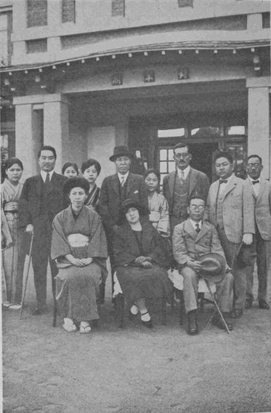
湯崗子温泉入口と一行其他
（後列向つて右より梅原君・加藤・某君・西田君・女中達）
（前列右より佐藤・晶子・温泉の主婦）
（後列向つて右より梅原君・加藤・某君・西田君・女中達）
（前列右より佐藤・晶子・温泉の主婦）
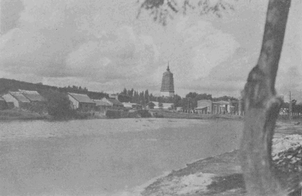
遼陽の白塔と遼河
大安寺の背後の宝台山を少しく登つて右折すると、羅漢洞の奇勝がある。奥行三間ほどの巌窟に粗末な近代の塑像の著色羅漢八体を安置してゐるのは云ふに足らないが、その巌窟の突き当りが自然の窓として、山上の懸崖絶壁の中程に開け、千山東方の空と諸峰の頂とを脚下に望んで、空中の楼閣に倚るの想ひを為さしめるのが奇勝たる所以である。その巌の窓から吹き入る天風が余りに清冷なので、人の久しく留まり観ることを許さない。誰れも盛暑の季節に登らないのを遺憾とした。
×
其れより西北に向つて雑木の中の険路を下り、
×
それよりまた北方の渓に入つて南に下り、更に山を登つて千山十観の一つである無量観に達した。是れは大安寺に次ぐ景勝の地を占め、満洲にある道教の廟観の中の巨擘である。境内は崖腹の地形に従つて左右に分れ、右の本廟には天、地、水の三皇を祀り、左には道士の房や客堂が建つてゐる。また観音堂のあるのは、現在の道教が仏教を混じてゐる為めでもあるが、一つはもと此地が祖越寺の境内であつたのを明末清初に劉太琳と云ふ道士が此処に道観を創建した為めでもある。
私達は先づ本廟を拝した後に、廟の背後の峰の石段を迂回して頂上に出た。其処は俗に「仙人便所」と云はれる険崖で、前後に千山の渓谷と諸峰が展望せられる。その一方に天台石と呼ばれる巨巌が欹だち、その巌の上に登ると最も大観の妙を極める相であるが、巌下四五尺の所を断崖に臨んだ別の巌の一側に沿ひ、険を侵して匍ふやうにして攀ぢねばならない。其処へ前に書いた「遊千山記」の著者陳氏が
 入した鉄棒が［＃「鉄棒が」は底本では「鉄捧が」］ぐらつくので、私は勿論登らなかつた。良人も半登りかけて引返した。一行の加藤梅原二氏は曽て一度登られたのである。その附近の一屋に道士の一人が住んで居た。
入した鉄棒が［＃「鉄棒が」は底本では「鉄捧が」］ぐらつくので、私は勿論登らなかつた。良人も半登りかけて引返した。一行の加藤梅原二氏は曽て一度登られたのである。その附近の一屋に道士の一人が住んで居た。私達が引返して道士達の多くゐる客堂の方へ来た。清楚な藍色の服を一様に著けた道士達が静かに私達を迎へてくれた。皆道釈人物画にあるやうな、品の好い、仙骨を帯びた人柄の道士である。僧と違つて皆薄い顎髯を生やしてゐる。中に一人、清く痩せて、脊のすらりとした三十歳ばかりの、色の白い、明眸の道士が芥川龍之介さんの

祖越寺もまた大安寺と同じく古い寺であるが、今は衰微して本堂の外に何者も存しない。私達は無量観の崖上から直下に其れを眺めるだけに止めた。
無量観を辞して渓を下り、更に少しく右折して山を登り竜泉寺に来た。千山五大寺の中で、此寺の僧のみは俗化してゐると聞いて居たが、果して石階を踏んで楼門に入る前に、上に立つて居た僧の一人が梅原さんに向つて、奉票の今日の相場は如何ほどかと問ふのであつた。此寺は明の穆宗帝の隆慶五年（西暦一五六六）の創建に成り、清朝に入つて度度重修を経て、山中最大の規模を占め、堂宇其他の結構も大安寺に勝つてゐるが、山が浅いのと住僧の俗化とのために幽邃閑雅の趣に乏しい。寺の内外に奇巌の多いのは他の諸寺諸観に異らない。僧が土産の杖を買へと勧めたりするのは他に見られない事である。私達は此の寺に一泊する気になれなかつたので、予定を変へて、湯崗子へ今日の中に帰ることに決めた。それで千山の奇勝の一つである五仏頂に明日登る事を割愛した。
×
竜泉寺の渓を南に下つて行く坂で、峰から雑木を伐り出し、それの長い
×
千山を下り終つた一行は、上石橋子の昨日休んだ馬宿の前を過ぎて、路を更に北に取つた。鞍山の鉄鉱区の一つである太孤山に行き、其処から鞍山運鉱線の軽便鉄道の列車に便乗を乞うて、満鉄本線の鞍山駅に向はうとするのである。此の附近には漢代、高句麗時代、金遼時代等の古墳が散在して発見せられる。上石橋子と下石橋子の間の畑の中に、先年鳥居博士が発掘せられた古墳の跡のあるのを加藤さんが指点して教へられた。博士は今年も私達と同じ頃に満蒙を歴遊せられ、私達の過ぎた一ヶ月程の後に、また此の附近の古墳から有益な発掘をせられた中に景教（古代基督教）の十字架をも発見されたと、後になつて聞いた。
加藤さんが時計を見られると、太孤山を発しる五時幾分かの最終の列車時間までは四十分しかない。それで荷持の支那人夫の一人を先に急いで遣つて、特に発車を遅らせて貰ふことを頼むのであつた。他の轎夫や人夫達が、太孤山へ一行を送つて置いて五六里の路を徒歩して今夜は湯崗子へ帰られない、一泊すれば宿料が要る、一所に汽車に乗せて帰つてくれと云ふ。梅原さんや加藤さんが其れを諾せられると、人夫達の足が俄かに早くなつた。殊に私を載せてゐる轎は飛ぶが如く奔つて太孤山駅へ先著した。上石橋子より二里強の道を四十分で著いたのである。良人と加藤、梅原の二氏とは徒歩の強行をつづけて少し遅れて駅に著かれた。私は支那の肉体労働者が纔かに小麦粉製の饅頭を主食とし、副食は野菜を専らとして魚肉類は一年に数回しか取らないに関らず、その労働能力の偉大な事を、大連に於て埠頭の華工（苦力）が一日平均六噸七の重量を負ふ事に由り、また油房や硝子会社の職工の極熱の中の労働を目撃した事に由つて驚いたのであるが、今また私を乗せた轎夫達に就ても其れを実験したのである。猶この事に就て、満鉄の間接経営に成る大連の福昌華工会社の藤山一雄さんが、精細なる実験に本づいて「菜食と労働問題」の新著を提供されてゐる。
軽便列車に運ばれて鞍山駅に著くと、もう薄暮であり、満鉄の製鉄所を一覧し得る時刻で無かつた。間も無く本線の汽車が北の方から著いたので、其れに乗つて湯崗子温泉に帰つた。一浴の後に、加藤、梅原二氏と夜食を共にし、千山の景勝と険峻とを語つて、二氏の御案内の労を感謝するのであつた。千山へは紅葉の季節に今一度登れとも勧められた。
×
翌日の正午過ぎに大連から西田猪之輔さんが湯崗子に著かれた。日曜を利用して、約の如く私達と歌を詠みに遥遥来られたのである。それで早速加藤さんを加へて四人で短歌会を開くのであつた。夕食前に一度締切つて作物を朗読し、夜更けてまた二度目の作物を朗読した。西田さんは二十年前からの作者であるが、詩人である加藤さんが今日から熱心に歌を詠み始められたのは、千山の感興が然らしめたのであらう。否、今日からで無く、既に昨日の山中で加藤さんは度度歌を私達に示されるのであつた。
今夜また詩人の佐藤惣之介さんが此処に著かれた。私達より遅く東京を立ち、大連と金州とを見て私達の一行に合せられたのである。明日からの前程に此の若い快活な詩人を加へ得たのは嬉しい。翌朝の汽車で私達は遼陽に向ひ、西田さんは少し遅れて大連に帰られる予定である。
満洲に現存する都市で最も古いのは奉天省の遼陽である。「漢書地理志」に載せた「襄平城」が今の遼陽城である事を「遼東文献徴略」の著者が考証してゐる。その城外の東方の地に、東漢時代に広祐寺が建てられ、その寺内へ高句麗時代以後に高さ二百三十尺、八菱形、十三層の磚身白堊の塔が建てられた。寺の堂宇は近世まであつて、露国が東清鉄道を敷設した時に破壊されたが、その塔だけは現に遺つてゐる。それが有名な遼陽の白塔である。私達は主として此塔を観たいために、満鉄本線の遼陽駅に下りた。駅と遼陽城との間十町の地が今は満鉄の附属地となり、それに日本市街が経営せられ、十二間幅の中央道路が
手荷物だけを遼陽ホテルへ送つて置いて、出迎へて下さつた人人と共に、私達は早速その公園に入つて白塔の下に立つた。塔は八菱形の四方の凹所に仏像が篏入され、また凸出した側面毎に
公園の内には邦人の建てた遼陽神社や満鉄の倶楽部などがある。倶楽部の階下は数日前に朝鮮から急に派遣された歩兵達の宿舎になつてゐる。私達はその階上の食堂で、在留邦人の処女会の令嬢達から午※［＃「餮」の「珍のつくり」に代えて「又」、U+4B38、84-7］の饗応を受けた。満鉄では各地に社会部を設けて在留社員とその家族の慰安を計つてゐるが、此地でも処女会や青年会の世話を社会部主事の杉本春喜さんが受持つてゐられる。杉本さんはクリスト教徒で、かつて横浜に住んで社会救済事業に尽されてゐた人である。食後に処女会の人人と一所に撮影し、一先づ遼東ホテルに赴いた。ホテルと云つても日本式の旅館で、中央道路に面し、その背後に白塔が近く立つてゐる。此処も朝鮮から来た将校達の宿舎になつてゐて、公園を見渡す階上の部屋に入ることが出来なかつた。それに出入する将校や兵士が今にも戦争が始まるやうな興奮状態を見せて、酒気と帝国主義とが漾ふので、柔かな白塔と柳絮とを歌はうとする私達の気分とは全く相容れぬ此宿の空気であつた。私達は階下の隅の薄暗い室に入つたが、暫くは手荷物を解いて着替をする気にもならなかつた。
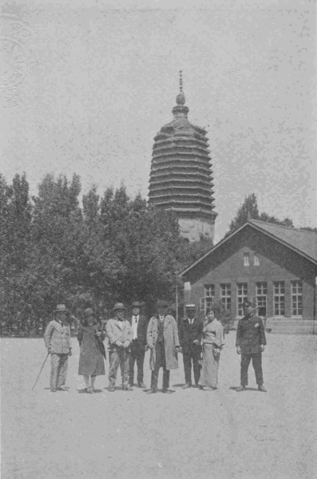
遼陽の白塔と一行及び満鉄の諸君
（前列向つて左より佐藤・寛・晶子其他）
（前列向つて左より佐藤・寛・晶子其他）
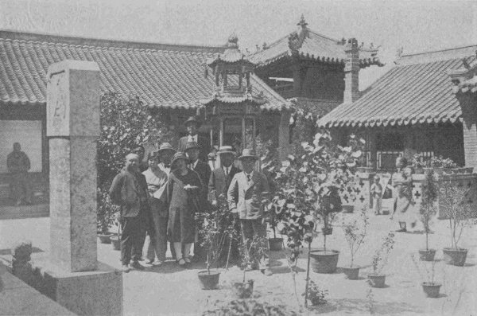
遼陽の金銀崗にある城隍廟と一行
（向つて右より佐藤・若林君・寛・晶子・加藤・杉本君）
（向つて右より佐藤・若林君・寛・晶子・加藤・杉本君）
×
午後は二台の馬車に分乗して城内を観に行つた。特に商業学校長で支那語学者である若林兵吉先生が説明役に当つて下さつたのは有難いことであつた。遼陽の城市は二千年の間連続して幾多の変遷を経てゐるが、清の太祖が天命六年（西暦一六二一）三月に明軍を此城に破つて後、瀋陽（奉天）に都を遷すまでの五年間は此処に首都を置いたのであつた。東西一里、南北二十四町の城壁を繞らし、四方に六門を開き、地勢は渾河（古名小遼水）と太子河（古名大梁水）との交会する所を占めて、昔から要害の地と云はれる。城内は中央の十字街を中心にして東西南北の四つの大通りが分れ、それに多くの小道路が配されてゐる。是れが昔からの支那の大都市の区劃法である。中に東西両大門街が商賈の街として最も賑つてゐるが、貴紳富豪の邸宅は他の都市と同じく裏街に散在してゐる。
若林先生のお話に由ると、是れだけの古い都市ながら、城の内外に観るべき古代の建築物や名勝は殆んど無い。すべて荒廃し去つたのである。それで先生は私達に珍らしい所を見せようと云つて、支那の裁判所と監獄とに案内せられた。かねて先生から打合せがしてあつたので、裁判所では検察長（検事総長）の劉炳藻氏が待受けてゐて、法廷、被告人控室、弁護士控室などを説明しながら見せられた。すべて日本の裁判所を参考にしたらしく、規模は日本の区裁判ほどのものであつた。設備は簡略ながら想像してゐたよりも小綺麗である。監獄の方では科長（典獄）の施豫恒氏が案内して説明せられた。監房は是れも案外掃除が行き届いて、一般支那人の家屋よりも清潔である。どの監房も内部の半は土間で半は高い床の
（温突）になり、其れに莚を敷いて、一房に五人或は七人の囚人が行儀よく跌坐してゐる。は冬期に壁の後ろから焚くのである。さすがは寒国の監獄だけの事はあると感心した。我国でも北海道の監獄などには暖房の設備があるであらうか。また感心したのは、囚人が各自の夜具を綺麗に畳んで背後に並べてある整頓振であつた。扉の上に金網があつて内部を覗かれ、金網の上に囚人の氏名と罪名とが掲示されて居る。女囚の監房も同様に整頓して居た。同行の若い詩人の佐藤惣之介さんは、女囚の中に一人の美人がゐるのに気が附かれた。罪名を読むと殺人犯であるのに佐藤さんは更に驚かれた。一体に囚人が男も女も民家に見る労働者よりも身綺麗に感ぜられたのは、その一定した浅葱色の囚人服のためであらう。×
若林先生は阿片吸飲所をも見せられた。それは娼家や飲食店の立て込んでゐる細い横町にあつた。その辺りの娼家は一戸一房の小さな家で、一人の娼婦（十四五歳より二十歳前後までの）が入口に立つて客を呼んでゐるのは見るに忍びない光景である。阿片宿の門額には「阿片禁戒所」と掲示されてゐる。阿片の吸飲を節制させて漸次に廃めさせる所と云ふ意味で、実は卻つて阿片の吸飲を公認して、それに課税して奉天政府の収入を計つてゐるのである。張作霖が近年阿片の栽培を東三省の農民に強制し、それから重税を搾取してゐるのも同じ理由からである。阿片宿は貴人向のものでないだけに粗末な家で、内部は中央が土間になり、左右の床の莚敷の上に客が幾人も阿片を吸ひながら横向きに臥してゐる。皆著のみ著のままである。既に十分の陶酔に入つて華胥の夢を見てゐる客は仰向に昏昏と眠つてゐるが、まだ半醒半酔の客には、黒砂糖を錬つたやうな色の阿片を詰めた太い煙管の雁首を、介添の給仕人がカンテラの火で
×
若林先生はまた私達に此地の金銀崗にある城隍廟をも見せられた。城隍廟は「聊斎志異」などを読む人人の知つてゐる神廟で、祀る所は都市の守護神である。神体は一定せず、其の土地の名家先賢で、公共的に功労のあつた人を祀る習慣になつてゐる。廟は久しく道教と仏教とを混じ、日本流に云へば両部神道風で、猶いろいろの迷信的な
猶遼陽では寺院や小さな喇嘛塔を見、また官人貴紳の家の代表として若林先生が前奉天商務総弁于沖漢氏の邸園を見せられた。見物を終つて、在留の邦人有志が催された満鉄倶楽部の晩餐会に赴き、其席で満鉄事務所長の見坊田鶴雄、警察署長の助川徳輩、其他の十数氏にお目に掛つた。それから倶楽部の階上の広間で良人や佐藤さんと共に私も講演をした。在留邦人の聴衆は二百人余りであつた。
×
翌朝は、ホテルの私達の部屋が大通に面してゐて、支那の労働者の車馬が早くから通るので、午前三時に目が覚めた。駅へ来ると、昨日会つた人達が見送つて下さるのであつた。電灯公司の中村信さんは附近の古墳から近年出た古銭の数品、君林先生は清朝の乾隆帝の三十三年（西紀一七六八）に満洲の旗人福會と云ふ人に帝から与へた恩封の帛書一巻を携へて来て、何れも私達に恵まれた。杉本主事は特に次の張台子駅まで同乗して見送られ、車中で満洲に在留する邦人の生活状態に就て氏の感想を話された中に、満洲で生れて満洲で育つた女子の結婚難の一節は、特に私の耳に或る憂鬱を感ぜしめた。
私達は満鉄本線の蘇家屯駅で安奉線の汽車に乗換へて安東に向つた。一旦北に向つた旅程を東に引返すのである。此線は山川の景趣に富み、樹木が茂つて俄に日本内地を行く感がする。途中に、火連塞河と太子河との合流する所に本渓湖の市街がある。其処は大倉組と支那人との合弁に成る採鉄公司の炭鉱と鉄鉱があるので名高い。石炭は半無煙炭で、埋蔵量弐億噸、鉄は磁鉄鉱で総量八千万噸と云はれる。其外にも日支合弁の牛心台炭坑がある。また橋頭駅を出て汽車が細河の峡谷に入ると、碧潭の上に長大な岩床が一の奇勝を為し、普済寺が建つてゐる。その岩床を「釣魚台」と云つて、幽邃な山中に忽ち其れに出会ふのは夢の中の景色のやうであつた。私は橋頭駅で下りて一日を此処の探勝に費す時間の無いのを惜んだ。若葉の季節に車窓からその一側面を眺めただけでも好かつたから、紅葉の季節に、十丈の懸崖の上に立つて其の全部を見て廻つたら更に好いであらう。
また鳳凰城は安奉線唯一の盆地にある市城であるが、その殷賑は近年安東に奪はれたと云ふ。私達は此駅にも下車する予定でないのを惜んだ。それは城外の東南二里に有名な［＃「有名な」は底本では「有名は」］鳳凰山が、千山とよく似た奇巌の尖壁を頂に列ね、山中の渓谷に古刹と廟観との幾つかを点在し、高句麗時代の城趾をも存し、沿線の山として勝景に富んでゐると聞くからである。幸ひに次の三四駅までは車窓の視界に此山の雄姿が入つて来るので自ら慰めることが出来た。
安東へ著いたのは午後五時前であつた。朝鮮へ汽車で往来する旅客は、此駅で日本税関吏の検査を受けねばならない。私達は此処で厭な事を見た。それは満洲見物を済ませて日本へ帰る中学二三年生の一隊が、安東より朝鮮経由の汽車に乗らうとして、教師に引率されながら、駅の薄暗いガアドの下の両側に、学生らしい僅かな携帯品を並べて、税関吏の検査を待つてゐるのであるが、汽車から下りた私達は其前を通つて、少年達の並べた携帯品の何れの上にも、満洲で買つた外国製や支那製の煙草の十本入の小箱が、二つ乃至五六個置かれてゐるのを目にした。喫煙を禁ぜられてゐる日本の少年達が自分の喫飲用として買つて来た筈は決してないから、それは重税の掛らぬ廉い煙草を買つて、故国の父や兄への心ばかりの土産にする為めであらう。それとも教師達の買つた規定量以上の煙草を少年達に分けて持たせてゐるのであらうか。何れにせよ、私は喫煙年齢に達しない少年達の携帯品の上に煙草の並列された光景を、少年達のために可哀相に思はれて、忽ちに目を反らして通り過ぎた。父兄へのいぢらしい土産に買つた煙草なら、それを
駅へは満鉄関係の人人の外に、採木公司の人人と其令夫人達とが出迎へて下さるのであつた。また別に前安東取引所長太田秀次郎氏の奥様も来て下さつた。日本領事の岡田兼一氏御夫婦から自動車を迎へに出されて、直ぐ是に乗つて今夜は領事館に泊れ、その用意がしてあると伝へられたが、私達は予て駅前の安東ホテルに部屋が約束してあつたので、岡田さん御夫婦の御厚意に感激しながら、それを御辞退して、佐藤、加藤二氏と共に一先づホテルに投宿し、すぐに領事館の晩餐の御招待に赴くのであつた。
安東の市街は、鴨緑江の西岸、江口を溯ること十六哩の平地に、東北から西南に展開し、中央に西より来て鴨緑江に入る沙河を挟んで、その東北は旧市街即ち支那街があり、西南は新市街即ち日本街に分れてゐる。支那街は日露戦役の後に殷賑な市街となつたので、それまでは沙河鎮と云ふ一村落であつた。日本街は全く日露戦役を経て鮮満両鉄道の連絡したが為めに新たに出来たのである。対岸は即ち朝鮮の地で、大鉄橋が朝鮮の新義州の市街と安東とを繁いでゐる。安東の市街の西は鎮江、元宝二山に接し、元宝山の山腹に邦人の安東神社と領事館とがある。私達は領事館の晩餐に招かれて行つて、岡田領事御夫婦、採木公司の内藤確介氏御夫婦、吉田氏夫人、満鉄の地方事務所長粟野俊一氏等の人人にお目に掛つた。領事御夫婦が快活な方方であり文芸趣味にも富んでゐられる上に、内藤夫人は私の親友足立長子さんと東京女子高等師範学校の最も親しい御同窓であり、また吉田夫人は良人が三十余年前に跡見女学校の教師をしてゐた頃の生徒であつた方である。こんな事で私にも初対面の会合とは思はれぬ打解けた楽しい晩餐会であつた。食卓に活けられた桃色の美しい繊麗な花も私の旅情を引立てたが、
×
翌朝は採木公司の御厚意で特に汽艇を出して頂き、日本市街の埠頭から乗つて、鴨緑江を二里以上溯り、左の山に九連城、右の朝鮮側の山に統軍亭の見える所まで行つて引返した。昔から文献では鴨緑江と書くが、土地の支那人は「
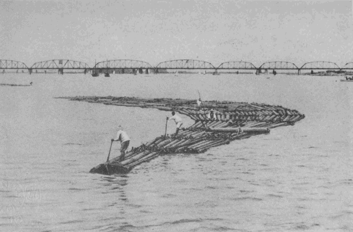
鴨緑江の鉄橋と筏
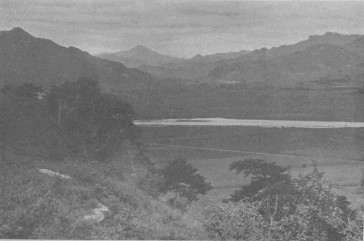
五竜背
もと此の附近は河幅の広い処であつたのが、久しく大小幾つかの中洲が出来て楊柳や蘆荻の生へた島を成し、それが河の景色を変化あるものにしてゐる。まだ流筏の盛期にはなつてゐないが、私達は所所に筏の幾つかを見ることが出来た。帆を上げて帆檣の上に真紅の旗を翻した戎克の形と共に、筏が江上の諸峯の雲を帯びて遠く近く重畳する間から、蘆洲柳渚の緑に反映して白く光りながら、悠悠と下つて来るのは、現代の機械文明の煩瑣から脱した、好い風情のものであつた。折折ちぎれた雲が去来して小雨を降らすので、同行して下さつた領事御夫婦、内藤、吉田両夫人達と共に狭い船室に膝を並べて、窓から、上流と両岸の諸峯が雲に従つて変容する自然の水墨山水図を眺めるのであつた。漢詩にある南方支那の瀟湘の夜雨を船に聴くのも斯うした趣であらうか。雨が止んだので狭い甲板に上つて眺めた私の心には、唐人の「支頤見二千里一、煙景非二一状一、遠岫有無中、片帆風水上」と云ふ詩が浮ぶのであつた。
汽艇は初め出発した埠頭よりも更に下つて、大鉄橋を過ぎ、採木公司の木材置場を見て、またもとの埠頭に帰つて来た。ホテルで午餐を済ませた後、私達は頼まれた揮毫をした。それから良人が旧知の太田氏を病床に訪うて帰るのを待つて、一行は満鉄の社会主事山本憲一氏の御案内で、新旧両市街を自動車で見物し、また領事館と満鉄の事務所とへ告別に行つたが、時間が無いので、大鉄橋を渡つて対岸の朝鮮の土地を踏むことを割愛した。午後四時に再び安奉線の汽車で三駅目の五竜背まで引返す予定になつてゐたからである。此日安東駅へ見送つて下さつた人人の御親切を此処に感謝して置く。その中に、日本人を母として長崎で生れた張則民さんと云ふ支那青年がゐられた。張さんは採木公司の社員として勤務し、日本語で歌や詩を作る人である。
五竜背へ四時五十分に著いた。此処は静かな支那村落で、駅員と温泉旅館五竜閣との外に日本人は住んで居ない。五竜閣は駅の東二町の近くに在り、前は沙河に臨み後は山を負つてゐる。附近に珍らしく温泉宿の作つてゐる水田があつて蛙が啼き、木立の倒影を田の上に見る景色などが日本らしい趣のする所である。西北一里の所に五竜山と云ふ山が花崗岩質の山の特色である紫がかつた嵐気を浮べて、私達の泊つた窓から沙河の楊柳の上に、その突兀として幾つも骨立した山頂を見せてゐるのも、豪宕と遵麗とを備へた景色である。温泉は日清役に此処に駐屯した兵站部の中隊長が偶然に発見したもので、今は満鉄の間接経営に属し、浴客は安東の邦人を主として、安奉線を往復する邦人の多く来浴する所になつてゐる。泉質は清らかなアルカリ泉で、その量も豊富である。温泉好きの私達は是れで満洲にある温泉をすべて廻り尽したのであつた。
浴後に沙河の附近を散歩した。楊柳の上に猶入日の名残がただよひ、昨日の小雨で澄み切つた瑠璃色の空に夕月が懸つてゐた。釣道具を日本から携へて来られた佐藤さんは、その夕明りの下で草の上に
沙河のもと釣り得て草に置く魚も夕の月もほの白きかな
五竜閣は煉瓦造りの壁が蔦に掩はれて、仏蘭西の田舎の ラ（野荘）とも云ふべき瀟洒たる外観を持ち、内部はすべて清楚な日本座敷で、冬季のために温泉で蒸汽煖房の設備が出来てゐる。東京の人である女主人初め女中達も物柔かに静かな感じの好い人達であつた。翌朝ここを立つ時、女主人に乞はれて、私は
ラ（野荘）とも云ふべき瀟洒たる外観を持ち、内部はすべて清楚な日本座敷で、冬季のために温泉で蒸汽煖房の設備が出来てゐる。東京の人である女主人初め女中達も物柔かに静かな感じの好い人達であつた。翌朝ここを立つ時、女主人に乞はれて、私は水田あり柳の立てば旅の身も晩帰 の人の心地こそすれ
此様な歌を幾首か書き遺した。五竜背温泉を午前八時三十二分の汽車で立つた私は、午後二時に奉天駅へ著いたが、我国の山東出兵、それに続いて生じた済南の事変等に刺激せられて、東三省にも起りつつある排日の気勢が盛にならぬ間に、内蒙古の一部と北満とを観て置きたかつたので、奉天の見物を帰途に廻し、三時七分に大連から来て長春へ向ふ汽車に乗り換へるまでの間、駅長室で待たせて貰ふのであつた。私は此処で北京からの手紙を二通受取つた。それを読んで、北京の擾乱がいよいよ私達の北京訪問を許さない事を知つた。既に遼陽で感じた事を、私達は此処でも一層痛切に感じさせられた。奉天駅は正に武装してゐる。日本刀を吊して出入する将校達のいからした肩、興奮した眼の光、昨日新しく大連本社から急派されたと云ふ鉄道部員達のただならぬ動作、それに私達の休憩した駅長室は臨時軍司令部にさへなつてゐる。私はかう云ふ殺気立つた光景を好まないので、室外へ出て汽車を待つてゐると、またいろいろの厭な事が耳に入つた。私は日本人としての立場から日支問題を考へると共に、隣人たる支那人の立場からも、また世界人としての私の立場からも考へて見て、顰蹙し、戦慄する事実の目前に迫つてゐるのに無関心でゐられなかつた。さうして日本を世界から孤立させる結果になりはしないかと想像して、心を暗くしてゐた。丁度南軍が優勢をつづけて、張學良の北軍が関外へ退卻せねばならなくなつた時である。此時に突風の勢ひで某国の軍隊と鉄道部員とが明日にも京奉鉄道をその守備と監督の下に置かうとするのだ相である。（併し後で聞くと、此事が林奉天総領事達の必死の力で防止されたのは大幸であつた。）
私達は内蒙古方面へ行くことの安否に就て、奉天の駅長古山勝夫さんに意見を求めたが、駅長さんは「各地の邦人の婦女子は大抵四平街まで引上げたやうですが、沿線より離れて奥へお入りにならなければ危険は無いと信じます」と云はれた。また案内役の加藤郁哉さんも、短い時間に満鉄の奉天事務所の人人の意見を湊合して「鄭家屯から通遼へ行くことを断念し、
 南と斉斉哈爾とだけへ行くのなら危険は無からう、とにかく四平街まで行つて奥地の様子を確めよう」と云はれるのであつた。詩人の佐藤さんは「蒙古へお伴するのは愉快だなあ」と云つて冒険を喜ばれるが、良人と私とは、今現に奉天の日本軍から支那へ働き掛ける或る重大事のために、一人の日本兵もゐない内蒙古へ行つて、第二の済南事変が私達の上に激発されるのでないかと危ぶまれた。併しせめてその内蒙古の一部だけでも観て帰りたいと思ふ心もまた抑へ難いので、予定を変更せずに午後三時十五分の汽車に乗つた。
南と斉斉哈爾とだけへ行くのなら危険は無からう、とにかく四平街まで行つて奥地の様子を確めよう」と云はれるのであつた。詩人の佐藤さんは「蒙古へお伴するのは愉快だなあ」と云つて冒険を喜ばれるが、良人と私とは、今現に奉天の日本軍から支那へ働き掛ける或る重大事のために、一人の日本兵もゐない内蒙古へ行つて、第二の済南事変が私達の上に激発されるのでないかと危ぶまれた。併しせめてその内蒙古の一部だけでも観て帰りたいと思ふ心もまた抑へ難いので、予定を変更せずに午後三時十五分の汽車に乗つた。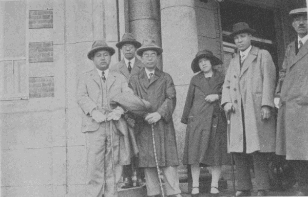
安東ホテル門前と一行
（向つて右より張則民君・寛・晶子・佐藤・満鉄某君・加藤）
（向つて右より張則民君・寛・晶子・佐藤・満鉄某君・加藤）
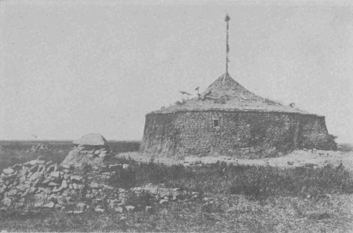
内蒙古途上のオボ
途中駅では鉄嶺に下りて見ないのを遺憾に思つた。案内書に由れば鉄嶺の城市は柴河の南にある。今ある城廓は周囲二十四町、高さ二丈、明の洪武年間（十四世紀）の築造である。城内の円通寺にある十三層の白塔は唐の太和二年（西暦八二八）の創建として名高い。また城外の東にある竜首山の上の慈清寺にも古塔が一つ車上から望まれる。此地で邦人の経営してゐる満洲製粉会社は、原料の小麦に富んでゐるので最も有望な特産工業として知られ、長春、哈爾賓、済南、奉天、鎮南浦等に工場を持つてゐる相である。また柴河と遼河の流域に属する此地には、低湿の広い土地が多いのを利用して、この二十余年来、朝鮮の移民の水田経営が盛に行はれ、その有利であるのを知つて、支那人の稲作が勃興してゐる。但し北満の水田経営は此地に止まらず、東は東支鉄道沿線の穆陵や磨刀石から、西は斉斉哈爾に及び、その既耕地面積が民国十三年の調査に由ると六千二百七十五畝（畝は我国の五反余）、その籾の産額が参万九千八百八十五
×
次いで開原駅では、近年欧洲の市場にまでも輸出せられるに至つた満洲大豆の大きな集散地の一つである事を聞いた。大豆は私達が熊岳城の農事試験所で見聞した所では、黄豆、青豆、黒豆の三つに大別し、細別すると弐百種以上あるが、最も多いのは黄豆で、是が食用の外に油を搾つて、灯用及び広く工業原料に用ひられ、その粕は肥料や家畜の飼糧に供せられる。四年前の北満の耕地面積は壱千十五万
 （は我国の七反余）で、北満の土地全面積の約十四パアセント七を占めてゐるが、その播種量の主位にあるのは大豆で、大正十四年の予想収穫高は千五百四十万六千石であつたから、今はずつと増加してゐるのであらう。昌図駅を過ぎたが、駅の西二里にある昌図県の城市は、蒙古の博王領で、清朝の嘉慶年間（十九世紀の初め）から支那人に開放せられた地である。蒙古王は此地に地局を置いて地租を徴収してゐると云ふ。満井駅では北二哩の山上に、日露両軍休戦条約地の記念碑のあるのが望まれた。奉天大会戦の後に、日本の騎兵は昌図まで露軍を追撃して停止したのであつた。
（は我国の七反余）で、北満の土地全面積の約十四パアセント七を占めてゐるが、その播種量の主位にあるのは大豆で、大正十四年の予想収穫高は千五百四十万六千石であつたから、今はずつと増加してゐるのであらう。昌図駅を過ぎたが、駅の西二里にある昌図県の城市は、蒙古の博王領で、清朝の嘉慶年間（十九世紀の初め）から支那人に開放せられた地である。蒙古王は此地に地局を置いて地租を徴収してゐると云ふ。満井駅では北二哩の山上に、日露両軍休戦条約地の記念碑のあるのが望まれた。奉天大会戦の後に、日本の騎兵は昌図まで露軍を追撃して停止したのであつた。午後六時十九分に四平街に著いて、駅前の日本旅館植半に投宿した。昨日鴨緑江で降つたやうな微雨が此処にも降つて居た。此処は満洲鉄道本線の開通に由つて出来た新市街で、一昨年更に四
鉄道が此処を起点として開通し、内蒙古各地と満洲の貨物を呑吐する第一門となつた為めに、支那街も日本市街も共に急激な発展を示してゐる。此駅から発送される貨物は粟が主で、一年に約七万噸、全満洲から輸出される粟総額の三分の一に当つてゐる。加藤さんが今夜満鉄事務所其他で調べられた情報に由ると、四鉄道に沿うた内蒙古各地にある邦人の女子は、すべて此地や大連方面へ引上げてしまつた事が確実になつた。併し昼間の汽車で行けば危険はないと聞いて、明日の朝の汽車で内蒙古の南へ直行する事に決めた。支那側の四鉄道局が三人の男達には一等のパスを出してくれたが、婦人には先例が無いと云ふので、私だけは乗車券を買ふのであつた。夜間の外出は危険だと云ふので、私達は四平街の見物を断念した。灯の暗い植半の浴室を出て、雨を聞きながら階上で早寝をする心持は寂しかつた。二十五日、朝の七時の汽車で四平街を立つて、いよいよ内蒙古の奥地の一部を観ることになつた。四平街附近ばかりでなく、一体に満鉄本線の通過してゐる奉天以北の蒙古の地形は、山に沿ふと共に河をも挟んで低湿肥沃の地が多く、清朝の末期以来、開放地として漢人が移住し耕作してゐるので、楡樹や楊柳も処処に繁茂し、野にも丘陵にも緑色を見るのであるが、四平街を離れて西へ二里も行くと、沿線の四方は曠濶たる平沙の原となり、全く眼に入る一樹も無い。望遠鏡で見ると、折折地平のはてに数戸の部落が散在し、また沙中に交叉する［＃「交叉する」は底本では「交又する」］幾条かの路に、旅客や馬車、牛車の一団が小さな点線として見受けられる。沙の上には草地さへも稀である。たまたま草が生へてゐる所でも、沙埃のために若若しい夏草の色を持たず、殊に曹達の気のある土地の草はいぢけてゐる。かう云ふ荒寥とした沙の世界を目にすると、初めて蒙古の内部へ一歩踏み入つたと云ふ気がする。
それに昨日まで乗つて来た汽車と違ひ、支那の武装した将校や兵士が監視として、また無賃の乗客としても乗込んで居り、それが私達の室に坐を占めて無作法に談笑し間食をする。途中の駅駅にも武装した支那の兵士と巡査とが多勢守備してゐる。乗客は私達四人と外に一人の日本紳士があるばかりで、他はすべて支那人であり、中に少しの満洲人の男女と漢装をした蒙古人の男子とが見受けられる。昨日まで駅員も監視兵も巡査も一切が日本人であつた汽車の乗心地の平安であつたのに比べて、私達の四囲の光景は急変し、知らぬ他人の世界へ追ひ入れられたやうな不安と驚奇とを覚えるのであつた。まだ日中の汽車だからよい、若し夜間であつたら如何に心細いことであらう。
途中の駅駅は何れも市街や部落から離れてゐるので、駅に属した洋風の煉瓦家屋があるばかりである。駅駅には貨物運搬用の大小いろいろの車が集つてゐる。支那の字書に車扁の字が多いやうに、漢人と蒙古人とが使用する車には種類が多い。その最も大きな車に頭大車、二大車の二種があり、頑強な構造のために五百斤乃至千斤の貨物を載せて如何なる難路をも通つて行く。その車輪には
私は駅駅で其等の車を観るのを一つの楽みに感じた。また貨物運搬用の駄獣に、駱駝、騾、驢馬が用ひられるが、駱駝は内蒙古の西部に多く、私達の通過する沿線では一頭も見掛けないのに子供らしい失望を感じた。駅駅には申訳ばかりの並木を移植してゐるが、すべて楊柳ばかりである。また駅の附近に少しの野菜畑をも見受け、豚や鶏が遊んでゐるのは、駅員の支那人の食用となるものであらう。
×
途中駅の中で、八面城は早く漢人に開放された土地で、人口弐万の支那街を成してゐると云ふが、駅からは望まれなかつた。遼河の右岸にある三江口は、営口から戎克の上つて来る商業市街として知られてゐる。鄭家屯は遼源県治のある商業市街で、遼河の流域だけに漢人の耕作が盛んに行はれ、近年この駅から支線が西北四十里の通遼（
×
車中で携へて来た昼の弁当を食べた。ボオイが度度しぼつた手拭を出し、幾度も茶を注いでくれる。併しどんな水を用ひたのかと想像すると気味の悪いことである。ボオイが車中で売つてゐる菓子を見ると森永製のものが多い。煙草やラムネはすべて支那製のものである。私は森永氏の事業の満蒙に発展してゐるのを喜んだ。
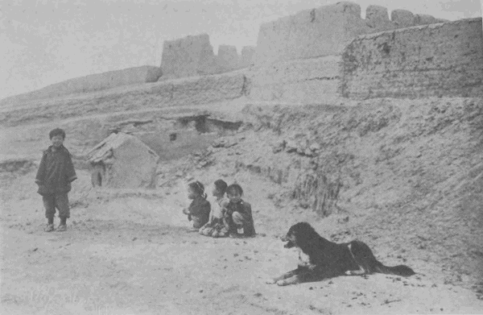
南城の外壁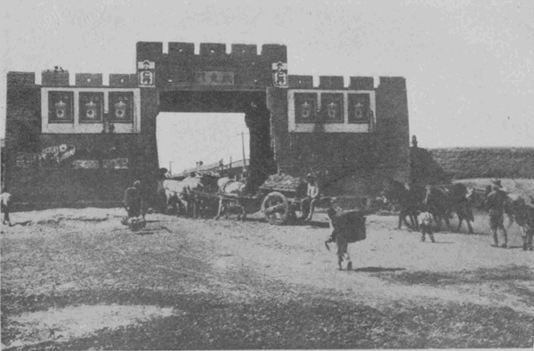
南城の東大門×
蒙古の旗界（蒙古諸王の領地の境界線）には沙礫を高く積み上げて、樹木の枝を其上に立てた目標がある。それを「オボ」（漢字にて鄂博）と云ひ、土地の神を祀つたものとして神聖視され、年に幾度か其れの祭典が行はれて、蒙古の男女が唱歌し舞踊する。我国の山地の峠などに石を積んで注縄を張り、それを神格視し礼拝して通るのと宗教的、土俗学的に関係があり相である。私達は加藤さんの注意に由つて、遠い所に二度程その「オボ」を望むことが出来た。平沙の地も線路に沿うて奥へ進む程、沙丘が波状に盛上がつてゐる地に出会ひ、切角望遠鏡を執つて見ようとする［＃「見ようとする」は底本では「見よとうする」］「オボ」が屡その沙丘に展望を遮られるのであつた。
午後私達は、沙地ばかりに面する単調な車窓の展望にも倦いて、各自が手帖を出して歌を（佐藤さんは俳句を）作つて居たが、三時三十分に今日の目的地の
南へ著いた。著く前に加藤さんから注意されて、車窓の左の前方に南城を望んだが、これまでに見た金州、熊岳城、遼陽などの城市と違ひ、南は城壁も家屋も全く一様の灰色をしてゐる。沙漠の上に沙を盛り上げ、それを三十町四方の方形に固めた土城だからである。折夕日が城壁の一方を照してゐたので城に近づいたことを知つたが、曇つた日には沙と土城との区別が付かず、敵に対して自然のカンフラアジユ（色彩錯迷）が施されてゐることであらう。荒漠たる平沙の上に一本の樹木の点景さへ持たぬ灰白色の城、それが古代の廃城でもあることか、最近に築かれた繁華な新城なのである。千山に登つて以来、歌の外に漢詩をも作つてゐる良人は、この時の感想を次の一篇に現はすのであつた。
万里相携遊。両友一詩婦。上車如在家。対坐把毫賦。路入東蒙沙連天。風捲黄埃暗于霧。車窓忽望土城明。斜陽照出南府。
不便な事に、汽車の著く南府。南駅は南城の北一哩強の地に孤立してゐる。私達は満鉄公所の人人に出迎へて頂き、公所の美しい馬車に乗つたが、駅の附近には雑多な支那の荷車と共に、露西亜式の汚くなつた乗客用の幌馬車が集つて居た。沙の上の温度は五月の末に扇を遣ひたい程であつた。城は東西南北に各大小の二門がある。私達は人の出入の最も多い大東門から城内の市街へ入つた。武装した支那兵が幾人か門を監視してゐる。獰猛な契狗、普通に蒙古犬と称する犬が幾匹も徘徊して異邦人と見れば吠えようとする。支那服と蒙古服、雑多な車と車との混雑の中に、灰白の砂塵が濛濛と舞ひ揚がる。砂と云つても此地方のは徴細な粘土質の物で、城内の家屋は殆ど全部が屋根も壁も其砂を×
私達は先づ満鉄公所へ行つて所長の西村潔さんにお目に掛かつた。西村さんのお話で、此地の排日の情勢が想像ほどに危険の切迫してゐない事を知つた。併し万一を警戒して在留の婦人達はすべて引上げた後なので、公所関係の人人も男ばかりが残つてゐると話された。西村さんは公所の屋上へ案内して、城内の鳥瞰景を一一に説明して下さるのであつた。また庭内にある蒙古の家屋、支那語で「
内部に入つて見ると、骨組の木がすべて黒味がかつた丹色に塗られてゐる。この「包」は空虚の物であるが、蒙古人が実際に住んでゐる時の内部装置は一定してゐて、土間の四方に毛氈を敷き、入口より見る正面の奥また少しく左に木製の櫃を聖壇として、其上に仏像、活仏（喇嘛教の法王）の写真を据ゑ、仏具を並べ、朝夕に礼拝して、寝るにも足を向けない。聖壇より見て左方は男子の席、来客も其処に坐る。右方は女子の席で、併せて貴重品や衣類を納めた大小の櫃、水桶、食料品、厨の諸器が置かれる。左方を上位とするのは我国の古制と同じである。中央部は土間のままで、竃と燃料に乾燥させた牛糞の籠とを据ゑて炊事を為し、火を焚いて暖を取る。入口に接した土間の入つて右には机の上に茶器や搾乳器を並べ、左には寒中に牛羊の幼児を入れて保護する。一つの「包」に四五人が起臥し、寝るには毛氈の上に衣服を夜具として横臥する。貧しい者は著た儘である。「包」は常に解体し移動して草地にある沙上に建てられるので、比較的清潔であり、羊肉と牛羊乳の臭はするが、支那人流の悪臭を感じないと云ふ。遊牧地帯では蒙古の諸王も「包」に住み、王と富者とは数個の「包」に家族を分けて住ませてゐる相である。
西村さんから「包」の説明を聞き、また公所の広い地域の中に、蒙古に適すべき植物と農作物とを試作した畑を見せて頂いた後、私達は公所の馬車に乗り、所員某氏の御案内で城内の市街を観て廻るのであつた。
×
蒙古は外蒙古と内蒙古とに分れ、その境域は内蒙古だけでも約七万五千方里である。（日本の総面積は四万三千六百七十七方里）今私達はその内蒙古の北東部の一部で、
児南に来てゐる。内外の蒙古を限る大興安嶺の山脈は遠く地平線下に隠れて、望む所は唯だ広大無辺の沙漠地帯である。蒙古通の人達は云はれる、「外蒙古へ行かねば蒙古の真相は味はへない」と。勿論さうであらうと私も想像する。殊に私は二十五年前に那珂博士の名著「成吉思汗実録」（元朝秘史の訳）を読んで七百年前の大蒙古を窺ひ、十五年前に関東都督府編纂の「東蒙古」を読んで現代の内蒙古の人文地理に触れたに過ぎない。鳥居博士が明治の末年に出された「蒙古旅行」は曽て拾ひ読みをしただけで精読することが出来なかつた。私の蒙古に就ての予備知識はこんなに乏しいのであるが、一部の地方にせよ実際の風土に接して見ると、百聞よりも一見の感得の確実さが喜ばれ、また之に由つて外蒙古の事情も大いに想像の根拠が得られる。内蒙古の地域は、自治的行政区劃に従つて、東四盟（哲里木盟四部十旗、卓索図盟二部五旗、昭烏達盟八部十一旗、錫林郭爾盟五部十旗）、西二盟（烏蘭察布盟四部六旗、伊克昭盟一部七旗）、［＃「七旗）、」は底本では「七旗）」］帰化城土黙特、察哈爾八旗の四つに大別せられてゐる。昔から族長制を維持してゐる蒙古は、内外とも部族の総長を「
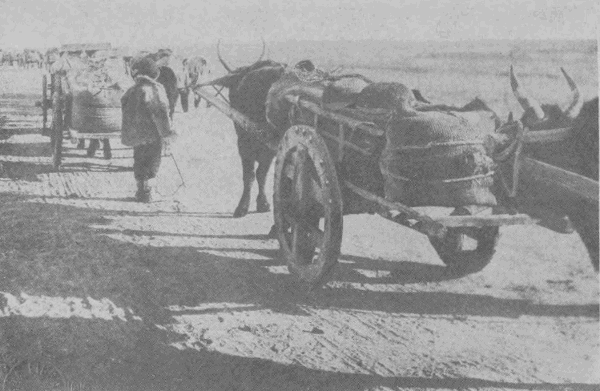
南城外の牛車の群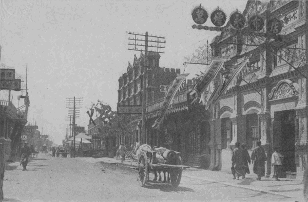
南の市街札薩克は王公と称せられるけれども、実際は昔の酋長の稍大いなるものに過ぎない。中には百方里の領地を有してゐる者もあるが、大抵は索莫たる原野の中の小版図に、同姓又は同族の部民の放牧生活を支配する牧長の状態を脱せず、資財の貯蓄もなく、その王府と云ひ、移住漢民の開墾地から借地料を徴収する土地局と云ひ、馬賊に備へる軍隊の営務処と云ひ、何れも極めて簡単粗雑な設備に止まつてゐる。唯だ比較的立派な建築物と云へば喇嘛寺院だけである。土地は王公の領地ながら、清朝の末期以来漢人が続続と移住し、殊に近年になつて激増するので、借地料を徴収して其れ等の漢人に開放した土地の行政権は漢人に及ばず、その権能は支那政府に掌握せられてゐる。即ち漢人の移住してゐる開放地域には支那政府が新たに県治を布き、その地域に接した各省に隷属せしめて、漢人を管轄してゐる。唯だ開放地域に住む蒙古人だけは王公が行政権を有してゐるが、近年其等の蒙古人は漢人のために放牧地を失ふのと、すべての生存競争に堪へないのとで、次第に奥の未開地へ流落して行く有様である。
×
今日私達の来た
南は、蒙古語で「鉄道の終点、四平街から百九十哩の西南にある。清末光緒帝の二十八年（一九〇二、明治三十五年）に初めて開放地とした当時は、双流鎮と云ふ漢名を新たに附し、移住漢民僅かに四十戸の小駅であつたが、翌翌年、日露戦争が起つて家畜の需要の増すに当り、俄かに此地が畜産の集散地として発達し、その翌年（明治三十八年、光緒三十一年）に支那政府は南と改称して南府を置くに至つたが、民国二年（一九一三）に府を廃して南県とし、此処に県公署（県庁）其他の官衙や軍隊を置いて、現に奉天省に属せしめてゐる。私達は馬車で
南の市街の要所を観て歩いた。城壁の四方の大門に対して井字形に四大街が区劃され、其れに東西十二条、南北六条の小街路が交叉して整然たる新市街を成してゐる。街区を百三十五区に分つてあるが、［＃「分つてあるが、」は底本では「分つてあるが。」］北半部の稠密なのに比べて南半部には空地を存してゐる。併し其れを漢人の家屋が満たすのも三四年を出ないであらう。鉄道の開通は此地を枢要な貨物の集散地として、ますます未来の殷賑を期待せしめてゐる。奉天省から内蒙古の各地へ荷馬車と天幕とに由つて行商する支那人は、主として鄭家屯と此地の商人であると云ふ。布疋雑貨商、穀物商、焼鍋（酒製造業）、獣皮毛商、運送店、旅館、飯館（料理屋）等の大きな商家が目に附く。現在の漢民人口は四万五千人に達してゐる相である。此外朝鮮人が七百人、日本人は三十人内外に過ぎない。日本人の商家は薬店の外にまだ大したものは無いと云ふ事である。×
蒙古の或地方では甘草の太くて長さ一丈もある物が採れる。日本人で根気のよい支那人に沙中から掘らせて買占める人達が、此地や鄭家屯を足場にして奥地へ進んで行くと聞いた。それは現銀を携帯して行くので、草賊（馬賊と普通に云ふが、真の馬賊ではない）に襲はれる危険があると云ふ事である。支那人の行商は隊を成して行くのと、物物交換をするので現銀を多く持たないのと、皆蒙古語に通じ蒙古人の人情風俗に通じてゐるのとで、賊難の危険が少く、卻つて蒙古人に親しみを持たれる。日本人は此等の条件を欠いてゐる上に、支那人のやうな忍苦の力と勤倹質素の心とが無い。また団結力に乏しくて、海外に行つてまで同胞が排擠し、孤立的に利益を獲ようとする。是が満蒙の各地に於て日本商人の支那商人と競争し得ない一つの主要な弱点であると想はれる。猶外的の原因としては、日本人が土地の租借権を持たない事、支那の警察が外人の保護に無力な事、信用すべき支那の銀行の無い事、従つて支那の貨幣制度の乱脈な事、満蒙内地の衛生設備の皆無な事なども数へられるが、併し支那人は唯だ土地の租借権を得てゐるだけで、其外の困難と危険とを侵して避易する色なく、年年に発展を示してゐる。また近年あらゆる酷遇を受けながらも、百万以上の朝鮮人が満蒙に流れ込んで、水田の耕作其他の労働に相当の成績を挙げてゐる。私は日本人の冒険心と勤労精神の弛緩を歎かずにゐられない。
×
南の街を観て歩く中に、私達は関帝廟の前の空地で支那の田舎芝居を観た。それは丁度東京附近の祭礼に見る馬鹿ばやし程度のもので、小屋掛の様子までがよく似てゐた。何と云ふ劇か知らぬが、二人の武将が卓に対して何か争つてゐる所であつた。杯が投げつけられたりした。その台詞は韻文で歌はれてゐる。私達は北京へ行つて幾つかのよい芝居を観る予定が中断されたので、こんな田舎芝居でも一瞥したことを喜んだが、支那人と支那兵との群集が洋装の私をじろじろと見るのが不気味であつた。もと此地を蒙古人が「沙鶏街茅土」と呼んで居たのは、楡の老樹が珍らしく沙の上に一本あつて、平原の交通の目標となつて居たから、その楡の称である蒙古語の「シヤチカイマオト」を地名としたのであつた。訳すると「喜雀樹」の意である。「喜雀」は鵲（朝鮮鴉）の異名で、蒙古人は楡を喜雀の止まる木と呼ぶのである。其木が近年まで繁茂して居たが、今は既に枯木になつてゐるのを、記念として神聖視し、塀を繞らして人の接近を禁じてゐる。私達は塀の隙間からその枯木をも覗くのであつた。此地の名蹟として絵葉書にもなつてゐる木である。
一つの城門を出ると、すぐ前に
留爾河である。私は唐の王昌齢の従軍行にある「前軍夜戦河北、已報生擒吐谷渾［＃「已報生擒吐谷渾」は底本では「已報生檎吐谷渾」］」と云ふ詩の句を思ひ出し、昔遼東の鮮卑の胡王である吐呑渾が、漢兵とこの辺で戦つて生擒された［＃「生擒された」は底本では「生檎された」］のであらうと想像すると、二千年前の史蹟に来てゐることを不思議に感じた。私は岸の上に立ちながら、沙ばかりの地平線に落ちようとしてゐる日の色の淒壮な大景を河の彼方に望んで、李白のやうな支那の大詩人の万古に消し難い寂寞哀愁の思想が、甚だ根柢の深いものである事を想はずにはゐられなかつた。支那文学の真味は、かう云ふ朔北の風景を目にしない江戸時代の日本の漢文学者などには解つてゐなかつたと云ふ気がするのであつた。×
私達は唯だ一軒ある日本宿の大通旅館へ泊つた。支那人の名義で経営してゐる宿である。一人の若い主婦が避難せずに留つてゐて、深切に私達を待遇してくれた。沙塵の中から来て湯に浴し得たのも嬉しかつた。井の水質の良くない事などは我慢せねばならなかつた。私達は食料の缶詰類を用意して来たが、意外にも内地の宿屋のやうな日本料理で夜食を取り得たのは勿体ない気がした。物騒だと云ふので、日が暮れると宿の戸が堅く閉されて居た。食後に佐藤惣之助さんは加藤さんを促して散歩に出られ、私達は此宿に泊つてゐられる森立名さんとお話をして居た。森さんは四平街の満鉄販売所の主任で、社用のために蒙古の奥地へ出張された帰途に此地へ来て、私達に逢ふために今夜の出発を一日延ばされたのであつた。以前東京にゐられた頃から歌を詠む人である。お話をして見ると吉井勇さんなどを知つてゐられ、また大連の私達の旧友西田猪之輔さんとも親友である。私達は蒙古の曠野の中の街で計らずも森さんと泊り合せた事を喜んだ。歌を詠まれると云ふのが何よりも私達を氏に親しませるのであつた。
森さんから蒙古の生活についてお話を伺つてゐると、佐藤さん達が驚いた気色をして帰つて来られた。或る裏町に日本の女が一人ゐると聞いて、若い詩人は慰問使の格で訪ねて行かれたが、女は早くから戸を鎖して居た。叩き起すやうにして女の家に入つて暫く話してゐられると、附近で突然銃声が二発起つて人の騒ぐけはひがした。二人は顔色を失つて帰つて来られたのである。今夜一行四人の夢は穏かでなかつた。万一にも暴民や草賊の襲撃を受けてはならぬと云ふので、わざと屋内の灯をすべて消して寝るのであつた。
翌朝良人は早く起きて沙漠の朝日の昇るのを観た。食後満鉄公所から寄越して下さつた馬車に送られて、一哩の西北にある
昂鉄道の南駅に来て、午前八時発の昂昂渓行の汽車に乗つた。此線は最も新しく出来た支那側の鉄道で、満鉄から資本を融通し、架設工事も満鉄の手で完成したのである。架設中に洪水が汎濫して困つたと云ふ話を加藤さんから聞き、途中にその洪水のために出来た湖水を観て通つた。三年前に俄かに出来たその湖水は、五十年後で無いと水が乾くまいと云ふ事である。大国の地域だけに自然現象もまた大袈裟である。汽車は南から西西北へと走るのであつた。昨日よりも更に荒寞たる沙漠で、沿線には駅の建物の外に家屋らしい物を殆ど目にしないのである。×
昂線の小さな駅の午後四時に
昂線の北の終点駅のこの昂昂渓と黒竜江省の首都
×
私達は斉斉哈爾の城外にある満鉄公所に所長の早川正雄先生を訪ねた。公所の入口に立派な自動車が一台あつて、数人の支那兵がその附近に立つてゐるので、支那の高官の来客がある事を知つた。名刺を出すと、早川先生と令夫人とは、自ら迎へて、私達の来るのを待つてゐたと云はれ、生面の間とは思はれない程に堅苦しい挨拶を廃して、「丁度よい所です、呉俊陞さんの奥さんが来てゐられる所ですから御紹介します」と云つて客間へ案内せられた。そこには瀟洒とした服装の支那貴婦人を二人見受けた。一人は此の黒竜江省の督弁呉俊陞氏の第二夫人李氏、一人は此省の警務処処長（警視総監）で猶外に幾つかの要職を兼ねた中将劉得權氏の夫人馬氏である。私は忽ち二夫人の間に据ゑられて、早川先生御夫婦の通訳を煩はしながら、何かと多くを話し合つた。呉夫人はもと北京に住んだ人で、聡明な資質の上に熱情に富み、殊に呉氏に嫁して以来は世界の新知識にあこがれ、女子教育にも注意を払ひ、また社会改良、貧民救済などに就ても真面目に考へてゐる人だ相である。その徳望のある事は、省民から「黒竜江省には二人の督軍がある。一人は夫君の呉氏で、一人は呉夫人である」と云はれてゐる程である。督軍とは云ふが、勢力から云へば事実上の覇王である。その呉氏が夫人を愛することも深いが、夫人も呉氏を尊敬し熱愛して、七十翁の夫君が歿せられたら殉死をする覚悟で、斉斉哈爾の呉氏邸には予てから二つの柩が備へられてゐると云ふ事である。年は二十七で、その支那風の美貌が殊に若若しく見せてゐる。
劉夫人はやや年上であるらしいが、同じく若やかに見える人である。早く夫君は日本の士官学校を卒業し、夫人も東京に学ばれたので日本語に通じてゐられる。才気と熱情と新知識の教養とに於て呉夫人と好い一対を成す人だ相である。私は満蒙へ来て教養ある支那婦人に会ふ機会が無かつたので、この偶然の会合が嬉しかつた。夫人達は「東京朝日」の竹中繁子さんの近状を問はれた。先年竹中さんも此地へ一遊して夫人達と語られたのであつた。この客間に入つた時から目に附いた事であるが、呉夫人と三尺程離れて明るい海老色の支那服を著た十二三の童女が不動の姿勢で直立してゐる。その緑色の目も白晢の容貌も一見して支那人では無い。早川婦人のお話に由ると、呉夫人が革命後の露西亜の孤児を憐んで侍女にしてゐられるのである。童女は左の腋に美くしい篋を挟んでゐて、呉夫人が命じると篋から細巻の煙草を抽いて捧げ、それに火を点じるのである。さうして相変らずもとの直立不動の姿勢を続けてゐる。私は斯様な事が支那の貴婦人の一つの誇りであらうと思つて奇異に感じるのであつた。
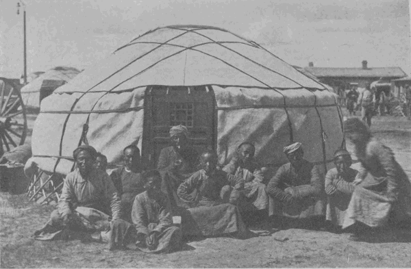
蒙古包の外観
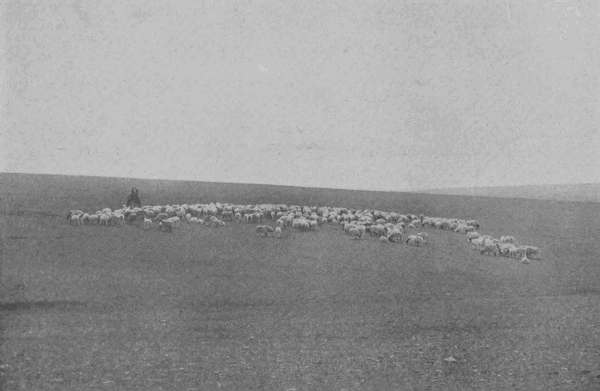
内蒙古放牧地帯の一部
私達は日の暮れない間に斉斉哈爾の城内を一巡し、併せて日本の領事館を訪うた上で、宵の汽車に乗つて
斉斉哈爾の城内に入り、殷賑な市街を通り抜けて、更に反対な方の城門を出で、暫くして
楊柳は若木であるが、誰れも其の茂みの中に姿を失ふ程の高さであつた。私は柳の枝に倚りながら暫く翡翠色の月を見上げた。其時また雁が鳴いて通つた。早川夫人に促されて再び舫に乗ると、呉夫人は自ら手折られた一束の柳の枝を抱へて乗られ、やがて其れを舫の両側に分けて
された。私はこの戦国の支那に貴女の風流の存してゐる事が涙の出るほど嬉しかつた。空は濃いい瑠璃色に星屑の金を水荘のサロンには電灯が附き、俄に城内から運ばれた夜食が用意せられて居た。呉劉二夫人と劉氏とは十年の交りであるかのやうに私達を歓待せられた。支那の宴会の接客法だと云つて、二夫人自らの箸で屡料理を私の皿に載せられもした。主人の漢詩が示されたので良人は漢詩を作り、佐藤さんは俳句を、私は歌を書いた。快濶な早川先生御夫婦は私の歌を訳して二夫人に告げられるのであつた。
宴席の給仕がすべて督軍附の兵士であるのも私には異様の経験であり、支那の歴史で読んだ塞外舎営の光景のやうに感ぜられた。私は昨夜の
南の宿の佗しかつたのに比べて、環境のロマンチツクな変化に心を躍らせて居た［＃「躍らせて居た」は底本では「躍らせ居た」］が、快よく酔はれた佐藤さんは、立つて踊るやうな姿勢をしながら人人と語られた。寡言で沈著な加藤さんは少し酔つて顔を染めながら、煙草をくはへて、少年のやうな優しい微笑の中に此の光景を眺めてゐられた。酒量の無い良人は早く支那酒に酔ひながら頻に筆を執つてゐた。何よりも併し早川先生の卒直と深切とに満ちた快弁がサロンの情調を引立てる中心を成して居た。先生は有数の支那通で、督軍の呉氏とは早くから義兄弟の親交を続けてゐる人である。日本と満蒙との関係が先生の過去二十余年の貢献に由つて、どれだけ幸ひしてゐるか知れないと云ふ事である。私は満鉄が適材を適所に任じてゐる賢い仕方を心窃かに喜んだ。私はまた先生と共に早川夫人にも敬意を捧げるのであつた。夫人は曽て教育家として英語を旅順の女学校で教へられて居たが、今では夫君と同じく支那語をも善く話され、その敏活な性情は内助のみならず、外助を以て夫君の事業に貢献せられてゐる。満洲に在住する日本の女子達が支那語を学ぶことに冷淡なのを遺憾に思ふ私は、特に早川夫人が中年から支那語に精通せられるに至つた用意の深さを難有く思ふのであつた。食事の終つた頃、呉夫人と劉夫人とは、支那の織物を見せようと云つて私を別室へ伴はれた。そこには既に多くの目の覚めるやうな織物が卓の上に陳ねられ、糸房（織物商）の手代が一人待つて居た。呉夫人が手に取つて示される物は、電灯の下に何れも虹がなびくやうである。私が「おお美しい」と云ふと、夫人は「それでは是れを差上げたい」と云はれる。私が褒める物を「それでは是れもどうぞお持ち帰り下さい」と云はれるので、私は初めて、私の土産にするために城内から特に電話で糸房の手代を呼ばれてゐたのである事を知つた。私は褒めることが出来なくなつてしまつた。夫人は其中から撰んで「東京の竹中繁子さんにも上げて下さい」と云つて托されるのであつた。
×
一行が好い気持に満ちながら水荘を辞し、早川先生御夫婦と共に城外の満鉄公所へ帰り著いたのは十一時前であつた。早川夫人のお心遣ひに由つて、此処にも支那料理の夜食が用意せられて居たが、私達は御厚意を謝しながら、一椀のお茶漬を頂くに留めた。御夫婦も私達も共に今夜の思ひがけない歓会を喜び合ふのであつた。併し特別列車に乗る時間が迫るので、早川先生御夫婦に教へて頂きたいと思つて居た［＃「思つて居た」は底本では「思つて居に」］斉斉哈爾の事情を問ふ間が無く、まことにあわただしい別れである。見送つて下さる御夫婦と一所に斉昂線の停車場へ来て自動車を出ると、此処でも督軍夫人の賓客として、突然一団の兵士が士官の号令の下に捧銃の礼を私達にした。私は心の中で済まない事だと思ふと共に、また顔の赤くなるのを感じた。外に一人の客もゐない駅はひつそりとしてゐた。呉夫人から命ぜられた臨時特別列車が私達を待つてゐるので、乗らうとすると、呉劉二夫人が自動車で見送つて下さつた。こんな深夜に二夫人が城外へ出られる事は滅多にない事だと聞いて、私は二夫人の御深切に感激するのであつた。二夫人は各自の写真に自署したのを携へて来て私に恵まれた。私は別れを惜んで夫人達と握手しながら、頻りに感傷的な気持になつた。もう生涯の中に此地で斯うして此の人達と出会ふことは望まれないと思つた。それで二夫人に「是非近く東京へ一度来て下さい」と繰り返しつつ云つた。二夫人も日本旅行を望まれてゐるからである。
汽車が動き出したので、車内に入ると、卓の上に清素な幾品かの料理が用意せられて居て、支那人の給仕が麦酒と茶とを侑めた。室の隅には護衛の兵士が控へて居た。すべて督軍夫人の周到な心づかひからであらう。汽車は機関車の外に車輌が唯だ一つ附いてゐるので動揺が甚だしい。偶然にも私達はまた、営口から大石橋への特別列車の経験を繰返したのである。窓の外には嫩江で宵に見た月が平沙の末に落ちかかり、他は蒼みを帯びて薄暗い空に疎らな星が望まれる。良人は唐代の詩人の「塞上行」の境地が窺はれると云つて居た。
昂昂渓の駅へは、また昂栄館の主人井杉延太郎さんが迎へに出てゐられた。井杉さんに聞くと、今朝哈爾賓の満鉄公所から送つたと電報で通知のあつた私達四人の汽車のパスがまだ受取れない。駅へ著いてゐる郵便物の中にある筈ながら、午後十時を過ぎたので、駅の規則として、其れを開けることが出来ないと云ふ事である。露西亜語の達者な加藤さんが行つて駅の助役に掛合はれたが、もう十二時が過ぎて駅長が帰つてしまつたので、どうしても郵便物を開ける事が出来ないと解り、従つて午前二時五十六分の汽車に乗れないと決つたので、止むを得ず昂昂渓に一泊することにした。こんな事なら斉斉哈爾に泊つて、明朝もつと城内を見物すれば好かつたと思つた。切角呉夫人の出して下さつた特別列車も甲斐が無かつたのを悔むのであつた。
昂栄館は個人の経営であり、平生邦人の客が少ないので設備は行届かないが、それでも露西亜人が建てた家だけに、静かな洋風の部屋が遼陽の日本宿よりは私達の心を落ちつかせた。主人の井杉さん夫婦が快濶と親切とを備へて、その打解けた接待振が設備の不足を補つて余りあつた。五月の末に室内に蟋蟀が啼いてゐたのは、宵に見た天の川と共に異様の感がした。朔北の天象と地気とは日本の季節を以て推すことが出来ないのである。
翌朝になつて、露西亜風の香ばしいパンと良いバタとで食事をした。食後の話に由ると、主人の井杉さんは予備騎兵曹長であり、早く陸軍から満蒙視察のために派遣せられた人である。普通の旅館の主人で無く、今も間接に国事のために尽す所のある人らしい。佐渡の出身であると聞いて、私達の親しくしてゐる佐渡の畑野村の渡邊湖畔氏の話をすると、井杉さんは渡邊氏と同村で、しかも小学の同窓である事が解り、一層の親しさを感じた。近年私達が佐渡に遊んだ話をしたので、久しく郷里に帰らない井杉さんも、佐渡の近状を聞いて頻りに喜ばれた。宿に珍らしく唐紙と筆との用意があつたので、墨は墨汁ながら、良人と私とは汽車を待つ間に歌を書いて、斉斉哈爾の早川夫人に贈り、また井杉さんの許にも留めた。
私達は昂昂渓から午前十一時二十五分発の汽車に乗つて哈爾賓に向つた。満鉄本線の列車も内地のに比べて遥かに完備してゐるが、東支鉄道西部線の欧洲から来た汽車に乗ると、俄かに世界が変つたやうな美しさを感じるのであつた。千九百十年に私の乗つた此線の汽車よりも列車が綺麗になり、設備が良くなつてゐる。汽車にすら驚くのであるから、況して今日の欧洲へ行つたら、どんなにか私の頭の遅れてゐるのに気づくことであらうと思つた。晩餐に注文した数品の露西亜料理がまた久し振に私達を満足させた。男達の飲む麦酒は独逸産であつた。さて四人の勘定が三十円ぢかくになつたのは露西亜のコンコンブル（胡瓜）のサラダを注文した為めであつたと解つて、千山の途中で休んだ上石橋子の馬宿の五十元――実に邦貨二円足らずであつたのに比べて、文化的食事の贅沢なのに笑ひ合ふのであつた。併し窓外の展望は依然として蕭条千里の沙上を走るのである。駅に著く度に下りて散歩する美しい欧洲人の男女、殊に露西亜婦人の華やかな初夏の服装が、二三分間、駅の露西亜建築を背景にして去来するのが、私には映画を観るやうに感ぜられた。
私達は五月二十六日の午後八時三十分に松花江の鉄橋を渡つて哈爾賓に著いた。駅へは古澤幸吉先生御夫婦と満鉄公所の岡部正義氏とが出迎へて居て下さつたが、佐藤さんと加藤さんとは北満ホテルに泊られ、私達夫婦は古澤先生が静かな処へ滞在させようと云ふ御厚意から、巴里ならパツシイとも云ふべき高壮な街にある満鉄公館を特に宿所として置いて下さるのであつた。公館は露西亜帝政時代の貴族の邸宅であつたと聞くだけに、間数の多い立派な露西亜建築である。平生は河野時宗さんと云ふ若い夫婦が番をしてゐるだけで、その広い所に誰も居ない。駅から案内して来て下さつた古澤先生御夫婦は、どの間でも気楽に使用せよと云はれる。私はその御親切に感激しながら、何となく東京の宅にゐるやうな心の落ちつきを覚えた。
私は四五年前に一度東京で古澤先生にお目に掛つた。古澤夫人とはお手紙の交際はあるが、初めてお目に掛るのである。良人はお二人に対して全くの生面である。先生は早く東京外国語学校の露語科を出られ、外交官として露西亜に久しく在任し、領事を辞せられて後は、多年此地の満鉄公所長及び在留日本人会長として、公私のために貢献されて居ると聞いてゐたが、お目に掛つてお話を伺つて見ると、露西亜文学に精通してゐられると共に、日本文学の愛読者で、新しい作家の小説にまで目を通してゐられるのに驚かれる。また漢詩や新俳句の作者でもある。それから御病身だと聞いてゐた夫人は、痩せてはゐられるが、近頃はお達者なやうであるのを私達は喜んだ。優雅と聡明との平衡を得た夫人であるのが直感される。私は営口へ行つて久久お嬢さんにお目に掛つたことを話す中に涙ぐましい気持になつたが、夫人の目にも涙があつた。
×
翌日の午前に、佐藤加藤二氏と満鉄公所に古澤先生と坂本直道氏とを訪うて、来合はせられた総領事の八木氏にもお目に掛つた。公所の屋上から哈爾賓を展望したが、名残の蒙古風が吹いてゐる日で、市街の彼方の松花江は曇つてゐた。公所の附近に真白な梨花が楡の木立に交つて多く咲いてゐるのは初めて観る美くしさであつた。旅順や大連で多く観て来たアカシヤは卻つて此地には少い。柳絮も稀にしか飛んで居ない。目にする木は大抵楡である。古澤先生が案内して下さると云ふので、先づ露西亜人の住宅の多い街へ自動車を走らせた。住んでゐるのは皆白露系で、今は余義なく赤露に属してゐるが、露支の勢力が反対になつて以来、支那官憲の圧迫が露骨なので、すべて見窄らしい生活をしてゐる。東支鉄道の関係のある露人の邸宅だけは、露西亜革命以前の盛時を偲ばせる広さを持つてゐるが、それも寂れてゐて、一体に空屋が目に附く。露西亜が曽て経営した公園をも観た。満園の青青した楡の木立が、どの木の蔭にも堆く
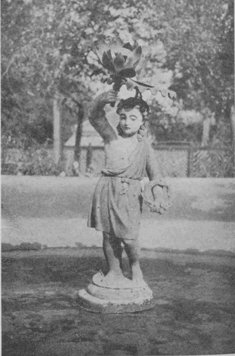
斉斉哈爾公園の噴水
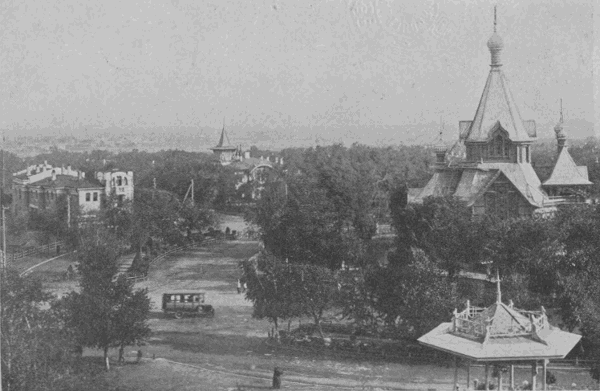
ハルビン新市街の一部
市内に引返して、東支鉄道の倶楽部で古澤先生から午※［＃「餮」の「珍のつくり」に代えて「又」、U+4B38、153-9］の饗を受けた。此処にはさすがに帝政時代の光耀と享楽が失はれずにゐる。数日後に哈爾賓の年中行事の一つである此処のオオケストラが毎夜開かれるので、園内にその準備をして居た。冬の長い此地の人の心には六月が春なのであらう。食後に日本人の商業会議所へ行つて、楼上に去年除幕式の行はれた伊藤公の石像を一拝した。公の遭難の際に古澤先生も外交官として駅に出迎へられてゐた一人なので、当時の実状を話して頂くことが出来た。日本の小学校へも行つて、校長の永元喜一郎氏から校内を観せて頂いた。それから先生と佐藤さんに別れて、加藤さんと私達とは此市のグランブルバアルであるキタイスカヤ大街へ行つた。午後三時以後から夜までの人出の盛なこと、その半分が露西亜人であること、殊に露西亜の女子の派手な初夏の帽と服と白靴揃ひの姿が、上海を除けば極東の他の地で見られない光景である。今日の行政長官張煥相の露骨な排外思想は隅隅に行亘り、商店の看板の露西亜文字までが漢字に改つてゐるが、併し此の大街の気分は建築も店作りも商品も欧洲の田舎街の其れである。チユウリンを初め大小の百貨店は、猶主として露人の経営に属し、支那商店が其れに続いてゐる。健気に踏み止まつてゐる日本の百貨店も一軒あるが、日本人は此処でも露支両商に挟撃せられて競争に堪へないらしい。その理由の一つは、大正七年以来久しく北満市場唯一の信用通貨である日本金円を、近年張長官が軍権と警察権の暴力を以て通用を禁止し、奉天軍閥の資金捻出を目的に濫発を重ねた不換紙幣「
松花江の埠頭へも出て見た。楊子江を知らない私には初めて海のやうな大河を目にするのであつた。松花江は此地で見る河幅が最も広いのであらう。色色に塗つたボオトが沢山繋がれてゐるが、まだ中流に遊んでゐる露人の男女は少なかつた。夏期の舟遊の盛んな話を加藤さんから聞いてゐたので、私達も対岸までモオタアボオトを出す積りで来たが、風があつて沖が曇つてゐるので見合せた。
私達は帰途に古澤先生のお宅を訪うて奥様と令息達にお目に掛つた。装飾と美術品とが柔かに落ち著いた、琥珀色と翡翠と朱との淡く取合された感じのするサロンで、
×
翌日の午前は、加藤さんを煩はしてチユウリンの本店やキタイスカヤ大街の百貨店で、少しばかり娘達への土産に欧洲の品物を買ひ、それから八木総領事さんの御招待を受けて領事館で午※［＃「餮」の「珍のつくり」に代えて「又」、U+4B38、156-9］を頂いた。客は古澤先生の外に、朝鮮から来合された松田國三大佐、此地の駐在武官安藤
 三、片桐茂、中野英光諸氏と私達夫婦であつた。近年支那の排外思想が最も抵抗力のない、最も世界の耳目を惹かない此地で、日露両国は勿論、列国の既得権と未来の経済的進出とを蹂※［＃「足へん＋闌」、U+8E9D、156-13］してゐる時に、この食卓にゐられる人達の裏面の苦心と画策とを想像しながら、私は窃に邦人の満蒙経済が露支両国の幸福と矛盾する所のない解決を如何にしたら得られるかの問題に思ひ惑ふのであつた。南方ばかりでなく、此の北辺の地にまで、青年支那人の教育ある者が自主権の回復に目覚めてゐる。帝国主義的な見方からは怖ろしい事ながら、人道上からは支那人のために慶賀せねばならない。支那軍閥の小さな驕児である行政長官張煥相の如きをして、その不法な排外行為を敢てせしめるのは、その背景を為す支那復興の機運である事を想はずにはゐられない。私は此席にゐられる武官達が時代の大勢を観て善処して頂きたいと思ふのであつた。
三、片桐茂、中野英光諸氏と私達夫婦であつた。近年支那の排外思想が最も抵抗力のない、最も世界の耳目を惹かない此地で、日露両国は勿論、列国の既得権と未来の経済的進出とを蹂※［＃「足へん＋闌」、U+8E9D、156-13］してゐる時に、この食卓にゐられる人達の裏面の苦心と画策とを想像しながら、私は窃に邦人の満蒙経済が露支両国の幸福と矛盾する所のない解決を如何にしたら得られるかの問題に思ひ惑ふのであつた。南方ばかりでなく、此の北辺の地にまで、青年支那人の教育ある者が自主権の回復に目覚めてゐる。帝国主義的な見方からは怖ろしい事ながら、人道上からは支那人のために慶賀せねばならない。支那軍閥の小さな驕児である行政長官張煥相の如きをして、その不法な排外行為を敢てせしめるのは、その背景を為す支那復興の機運である事を想はずにはゐられない。私は此席にゐられる武官達が時代の大勢を観て善処して頂きたいと思ふのであつた。午後は古澤先生と市の博物館を観た。考古学、史学、博物学、土俗学等の資料が可なりよく蒐集されてゐる。満蒙両人種の生活を示した人形、長さ六尺もある松花江の鯰其他の大魚、曽て成吉斯汗実録に「土撥鼠」と書かれてゐるのを記憶してゐる動物「タルダカン」（堪達韓）などの剥製は子供達にも見せたいものであつた。吉林省の豊富な材木と獣皮の種類をも一瞥した。黒竜江流域の深林に栖む
それから満鉄公所へ寄ると、加藤さんが待つてゐられたので、古澤先生に別れて北満ホテルへ行き、佐藤さんを其れに載せてキタイスカヤ大街の宝石商、毛皮商、百貨店、子供服の店などを観て歩いた。街は夕方に向つて散歩する露支人の雑沓を増し、露西亜娘が辻辻でリラや「ねぢあやめ」の花を売り、支那の少年が砂糖煮の
今夜は御招待を受けて四人が古澤先生のお宅へ行つた。客は八木総領事さんの外に、図書館長の來栖義助氏御夫婦、哈爾賓新聞主筆の佐藤四郎さん達であつた。総べて気の置けない人達を古澤先生が紹介して下さつたので、芸術的な話が食卓を特に楽しくした。私達は古澤先生が俳句と漢詩を、［＃「漢詩を、」は底本では「漢詩を」］八木総領事さんが邦語の詩を、來栖夫人が短歌を、何れも熱心に作られる事を知るのであつた。古澤先生はまた暇を求めては羲之の古法帖に対して筆を染められる相である。若くて快活な気質の來栖夫人は、在留日本婦人の中で新しい思想や芸術に就て最も敏捷な修養を励まれてゐるらしい。私は特に夫人の卒直な、さうして感激性に富まれる性格を見て、斉斉哈爾で遇つた呉夫人を聯想するのであつた。此様な両国の婦人達が思想と趣味の上で交歓を重ねて行く機会が開けたら、日支双方の国民的理解の上に有益な事であらうと私は思つた。
快よく酔はれたらしい八木総領事さんは、今夜私達をキヤバレエに案内しようと云はれる。まださう云ふ盛り場を覗かれたことのない古澤來栖両夫人も私達のために附合はうと云はれる。佐藤加藤の二氏は他へ行かれ、私達夫婦は御厚意に従ふことにした。午後十一時になるのを待つて、古澤先生と佐藤先生に別れて、他の者は二台の自動車に乗つた。外は深夜の温度が急に下がつて、寒い北風の吹く中に、哈爾賓の下町の灯が凍らうとするやうに静かであつた。空は曇つて居た。此地の代表的なキヤバレエは二所あると云ふが、私達の行つたのは巴里にあるのと同じ名のフオオリイ・ベルゼエルで、規模の小さな事は比較にならぬにせよ、其名が私になつかしく感ぜられた。かう云ふ場所の十二時前はまだ宵であるから客は少ないが、
×
翌二十九日は、午前中を在留の数氏から頼まれた歌の揮毫に費し、午後は哈爾賓日日新聞社の浦崎成一さんが案内して下さると云ふので、今一度市街見物をした。市は吉林省の北境に位置し、西から北に控へた松花江の対岸は黒竜江省に属してゐる。日清戦争の後に露国が露清銀行の名で買収するまでは蘆荻叢生の荒原であつたと云ふ。現在の市街は哈爾賓駅を中心として、江に面した西北一帯の埠頭区が繁華な商業地域で、南北に通ずるキタイスカヤ大街を主として、井字形をした多くの街が建築と道路と並木と共に、整然たる欧露風の商舗を列ねてゐる。江に面した東北一帯の
今日も寒い北風の吹く曇つた日であつた。浦崎、加藤二氏と共に乗つてキタイスカヤ大街へ行く車の上で、私が車掌に払ふ哈爾賓紙幣を出さうとする時、偶ま窓から吹き入つた突風が
×
今日佐藤惣之助さんが一日先に立つて長春へ引返された。私達は汽車の座席の都合が附かないのを幸ひに一日延ばして、それだけ多くなつかしい哈爾賓に親しむことの出来るのを喜んだ。政治上と経済上と人種上との国際都市、殊に日本人のために満蒙事業の中心地であらねばならぬ筈の此地は、私の今の心持で、遠い米国の加州や南米のブラジルなどよりも観て置きたい土地であつた。
今夜は古澤先生御夫婦と公館で結構な日本料理を頂きながら、しめやかに遅くまでお話する事が出来た。私達が此の満蒙旅行を為し得たのは、主として先生と大連の満鉄本社の宇佐美寛爾さんとの御厚意に由る事であり、哈爾賓の滞在も御夫婦の細かな御配慮のお蔭で、総べてが他日の好い思出となる事ばかりであるのを私達は感謝するのであつた。先生と良人とは同年である。今度お目に掛つて知つた事であるが、先生も良人と同じく二十三四歳の時に朝鮮の京城にゐられた。先生は日本公使館に、良人は日本領事館に仮寓して居た［＃「仮寓して居た」は底本では「仮寓して居に」］ので、屡共に顔を見られた筈ながら交際は無かつたのである。それで今夜のお話の中に昔の京城の追憶談がはづんだ。先生は当時の朝鮮公使の三浦、小村二氏に愛せられて其の官邸に住んでゐられたのであり、良人も小村氏を知つて居り、その令息の欣一さんをも久しく先生と共に知つてゐる。今度の旅行にも欣一さんが外務省関係の人人へ紹介状を書いて下さつた程である。食後に四人が欣一さんと高濱虚子先生とへ絵葉書を書くのであつた。
×
翌日は朝から加藤さんと日本総領事館、満鉄事務所、古澤先生のお宅等へ告別に廻つて、其れから市の東郊にある露西亜人の大墓地まで最後の散歩として自動車を走らせた。途中に支那人が近年建てた極楽寺を一拝した。生生しい色彩を施した支那流の荘麗な大寺院である。この建築には満鉄其他の在留日本人側からも多くの献金をしたと加藤さんが話された。墓地は平原の中に広大な地域を占めて、楡の森が好い若葉の蔭を成してゐる間に、大理石の欧風の墓碑が白く並び、墓碑毎に花環とラムプの燭とが棒げられ、また其前に色色の花が植ゑられてゐる光景は、日本の墓のやうに陰気でなくて卻て哀情が深い。露語に精しい加藤さんが碑に書かれた死者の名や簡単な履歴を読んで下さる。若くて亡くなつた女の名の露西亜音などが殊に悲しく心に響いた。振返ると、花を手にして木間を徘徊する黒い喪服の婦人達が其処彼処に見受けられる。私達も暫く墓地の逍遥をつづけた。少し白けたコバルト色をして晴れた朔北の空の下に、風も無く、鳴く鳥も無く、しんとして静かな楡の森の広大な墓地は多くの未知の死者が皆今日の心に親しく感ぜられて、此処を立去ることが惜まれた。何となく露西亜の小説を読むやうな感じでもあつた。墓碑にはまた大柢［＃「大柢」はママ］死者の写真を簸め込んで硝子が被せてあつた。祖先崇拝の日本や支那の方が一般に卻て墓に対する用意が浅いのはなぜであらうか。加藤さんは前年此地に在勤せられた頃、屡此処へ来て露西亜の詩集などを読まれた相である。
三人は公館で午餐を済ませた後、午後一時半に駅へ出た。古澤先生初め來栖氏御夫婦、満鉄の坂本岡部二氏、佐藤四郎氏と浦崎さんなどが見送つて下さるのであつた。今日よく見ると駅の建物の模様が変つたので、伊藤公遭難の跡の位置が私の大正元年に見たのと少し違つてゐるやうに思はれた。私達は人人の御厚意を謝しながら、午後一時五十五分発の汽車が動き出してからも、猶人人と哈爾賓とに別れを惜んだ。
哈賓爾、長春間の東支線の汽車も室内が瀟洒としてゐる［＃「してゐる」は底本では「しゐる」］。私達は三人で二室を占めて居た。乗客は露人が多く、仏米二国人の外にシベリヤ線で欧洲から帰つた日本人達をも見受けた。車窓に入る風景が蒙古とちがつて青青してゐるのが俄かに日本へ帰つた感を与へた。土地が総て肥沃な黒土質である上に、松花江の支流の分脈である沼沢が幾つも緑楊の間に散在して、円形の大水盤に初夏の青空を映してゐる。漁撈をする漢人の船なども稀に浮んでゐる。それを窓から見下ろして、私達は楊柳と水との支那風の美を初めて味ふのであつた。是れが北と東へ広く伸びるに従つて、大小の山脈が無尽の森林地帯を重畳し、本流だけでも六百邦里に及ぶ松花江が豊饒な耕作地帯を形成してゐる事を想ふと、北満の未来は経済的に甚だ価値の高いものなのであらう。夜に入つて月の出たのが更に車窓の景色を美くしく柔かにした。
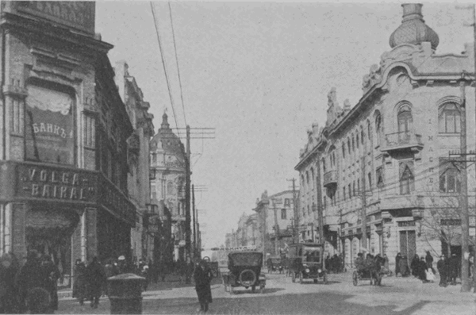
ハルビンのキタイスカヤ（支那大街の露語）

長春に於ける日本公園
百五十哩を七時間に過ぎて、午後九時九分に長春に著いた。一駅前の寛城子駅まで長春の赤木槌右衛門氏がわざわざ出迎へられた。赤木氏は数年前から書上の交際のある人である。長春駅へは満鉄の人人の外に、白鳥文雄博士、南部法電氏御夫婦、田村次郎氏御夫婦、濱田豊樹氏、本城徳太郎氏御夫婦及び令嬢、河崎繁次郎氏其他の諸氏が出迎へて下さるのであつた。何れも生面の人達がこんなに歓迎して下さる御深切を私達は済まない事に思つた。一日早く此地へ来られた佐藤惣之助さんも駅へ来て下さつた。佐藤さんは白鳥博士のお宅に泊つてゐられるのである。駅を出て忽ち私達は珍らしい光景に接した。幾十人の支那旅館の客引が左右に列を作り、屋号のある提灯を手にして、今降りた支那人の客を騒がしく呼んでゐる。勿論客よりも客引の方が多い。それは宛ら我国の伊勢あたりで見るのと同じ風俗である。生活上の必要は自然に風俗の一致を生じるらしい。
駅前の広場を縦断し、私達夫婦は人人に御案内を受けて大和ホテルに泊つた。此処で改めて人人に御挨拶をすると、本願寺出張所の南部氏は良人の甥達と親しき友人であり、本城河崎二氏は共に私達の親友河崎夏子さんの兄君である事が解つた。本城氏は日露戦争の直後から此地に在留し、独力の苦闘を重ねて産を成した一人である。今夜加藤さんは満鉄の社会部へ行つて泊られた。氏は曽て此地にも在勤されたので旧知が多いのである。
翌日は予定通りに、午前九時発の吉長線の汽車に乗つて吉林省の首府である吉林に向つた。伊通河を渡つて東すると、次第に山が多くなり、樹木が繁茂してゐるので、風景が日本的である。城塞や寺廟の古蹟なども多いらしい。松花江の支源の一つである飲馬河も美くしい河である。下九台駅の附近には、清朝の初めに吉林の北境から奉天開原へかけて六百九十余支里の間に辺塞を構へ、其れに柳を植ゑた、謂ゆる「柳条辺」の柳の一部が今日も残つて名勝となつてゐる。それが私達の望遠鏡にも緑を
吉林駅へ十二時三十分に著くと、吉長鉄道の中川増藏、私市一太郎、鈴木重一三氏の外、倉井盛行、奥田一郎、伊東季藏、峰旗良充の諸氏が待つてゐて下さつた。皆初めてお目に掛かる人達である。駅の食堂で昼食をして、二里の北、松花江の東岸にある竜潭山の名勝から松花江と吉林城との大景を展望させようと云はれる人人の御厚意に従ひ、二時発の吉敦鉄道の汽車に乗り、竜潭駅に下りたが、駅から山の麓まで線路の上を二十町程徒歩するのに、私の踵の高く細い靴が適しないで、其れに暇どり、山の中腹にも達しない前に、次の三時三十分とかの汽車の時間の都合で登山を断念して帰らねばならなかつた。山の名になつてゐる竜潭と云ふ池も竜鳳寺と云ふ寺も訪ひ得なかつたのは遺憾であつた。山は滴るやうな榛の若葉に満ち、鶯が近い枝で鳴いて居た。佐藤さんは鈴蘭を摘まれた。私達は此の往復の道で、頭上に大きな髷を異様に高く結び上げて紅い花簪を
してゐる満洲婦人が供を伴れてゐるのに出会つた。「魏書」に「女婦は髪を束ねて叉手髻に作る」とあるのは是れと似た髷では無からうか。また農家の茅葺の形が我国と同じであるのをも目にした。竜潭駅へ急いで来て見ると、故障のために汽車が何時に来るか解らない事になつた。夕方まで吉林城の見物を済ませて長春へ帰らねばならぬ私達は当惑した。こんな事なら初めから此地に一泊する予定にして、此の新しく開けた吉敦線で大連の宇佐美さんが勧められたやうに老爺嶺までも行き、吉林をもゆつくりと見るのであつたと思ふが、長春では赤木本城の諸氏が夜食を共にして話す積りで待つてゐられる。其れで殊に加藤さんが気を揉まれたが、「窮すれば通ずる」と云はうか、たまたま其処へ某採木公司の日本人達が奥から乗つて吉林へ帰られるモオタア・カアが著いたので、その人達の御厚意に由り、私達の一行が代りに乗せて頂くことが出来たのは偶然の幸ひであつた。恐ろしい程線路の上を急速度で駛走するカアは初めての経験である。先頭に良人と一所に乗つた佐藤さんは時時手を挙げて「愉快、愉快」と叫ばれる。松花江の大鉄橋を真一文字に渡る時の響と速力とは物淒いものであつた。しばしば線路を歩いて行く支那人に逢ふので車上の男達が頻りに大声を揚げて警戒した。幸ひに事無くして十分と掛からぬ後に吉林駅へ著いた。
×
それから馬車を
城の西北にある徳勝門を出て二十町程行くと、路は北山へ登り、その右側の丘陵に茶館がある。山上の玉皇廟まで行く時間が無いので、その丘陵から展望するに止めた。山は公園になつてゐるので、今日の好晴に遊春踏青の人達が多い。此処から眺めると、東の長白山から来た松花江は少し上流の所で屈折し、吉林城の南を西から東へ、更に北に向つて流れてゐる。北に面して凸字を成した不規則な形の城は、山野に対した三方に城壁を繞らし、江に臨んだ南の一方には城壁を略してゐる。是れは他に例の無さ相な築城法である。松花江の最も古い名は「魏書」に「
 婁」、六朝には「勿吉」、隋や唐では「靺鞨」、金遼時代には「女真」の有力な大部落が占めて居た。「魏書」の「勿吉伝」の初めに「勿吉国は高麗の北に在り。旧の粛慎国なり」、「国に大水あり、濶さ三里余、速末水と名づく」とあり、「隋書」の「靺鞨伝」に「靺鞨は高麗の北に在り。邑落倶に酋長ありて相総一せず。凡そ七種あり、其一を粟末部と号す」とあるのは共に此地方であらう。四方に山を繞らしてゐる中に、特に東南には遠山が重畳し、その末に微かながら長白山が一抹の青黛を覗かせてゐる。此山の古名も漢に「不咸山」、「単単大嶺」、六朝に「葢馬大山」、「太白山」、「徒太山」、「太皇山」、金遼以後に「長白山」等、いろいろに呼ばれてゐる。今私達の目に映じる遠近の諸山は総てその山脈に属するのであるが、吉林に近い山山は何れも優雅な姿をして、其中をＳ字形に松花江がコバルトを流してゐるのは美くしい景観である。
婁」、六朝には「勿吉」、隋や唐では「靺鞨」、金遼時代には「女真」の有力な大部落が占めて居た。「魏書」の「勿吉伝」の初めに「勿吉国は高麗の北に在り。旧の粛慎国なり」、「国に大水あり、濶さ三里余、速末水と名づく」とあり、「隋書」の「靺鞨伝」に「靺鞨は高麗の北に在り。邑落倶に酋長ありて相総一せず。凡そ七種あり、其一を粟末部と号す」とあるのは共に此地方であらう。四方に山を繞らしてゐる中に、特に東南には遠山が重畳し、その末に微かながら長白山が一抹の青黛を覗かせてゐる。此山の古名も漢に「不咸山」、「単単大嶺」、六朝に「葢馬大山」、「太白山」、「徒太山」、「太皇山」、金遼以後に「長白山」等、いろいろに呼ばれてゐる。今私達の目に映じる遠近の諸山は総てその山脈に属するのであるが、吉林に近い山山は何れも優雅な姿をして、其中をＳ字形に松花江がコバルトを流してゐるのは美くしい景観である。江は七八月の流筏で埋まる季節には早いが、それでも既に上流から来た筏が諸所に浮んで居た。埠頭には大きな木商の軒を並べたのが望まれる。私達の立つてゐる北山公園の一部には、若葉の蔭に楡銭が
私は東莱門の外にある社稷壇と先農壇とを見たいと思ひ、また此地在留の人達は城東の沿岸にある摩
 の明代の文字や、城南の望祭山にある鹿のゐる神園を観せたいと云はれたが、時が無いので再び城内を通つて駅へ引返し、丁度五時五分発の汽車に乗る事が出来た。出迎へや御案内をして下さつた人人から、ゆるゆるお話を聴かせて頂く暇の無いのも遺憾な事であつた。吉林は満洲の京都であると云ふ案内記の言葉のやうに、山水の優麗な、風俗と建築の古雅な所であるが、木材其他の経済都市として活気のある事は京都と違つた別の土地である。それは鴨河が、哈爾賓から此処まで溯江する汽船や帆船のある松花江の威力に比べ難いのを見ても明かである。また政治的には督軍張作相を主領とする吉林軍閥の根拠地で、張作霖の奉天派に対抗する勢力を持つてゐる。
の明代の文字や、城南の望祭山にある鹿のゐる神園を観せたいと云はれたが、時が無いので再び城内を通つて駅へ引返し、丁度五時五分発の汽車に乗る事が出来た。出迎へや御案内をして下さつた人人から、ゆるゆるお話を聴かせて頂く暇の無いのも遺憾な事であつた。吉林は満洲の京都であると云ふ案内記の言葉のやうに、山水の優麗な、風俗と建築の古雅な所であるが、木材其他の経済都市として活気のある事は京都と違つた別の土地である。それは鴨河が、哈爾賓から此処まで溯江する汽船や帆船のある松花江の威力に比べ難いのを見ても明かである。また政治的には督軍張作相を主領とする吉林軍閥の根拠地で、張作霖の奉天派に対抗する勢力を持つてゐる。吉林を立つてから、やや暫く日が暮れないので、帰りの車上の景色も私達を喜ばせた。土們嶺で見た落日は殊に美くしかつた。長春へ八時四十分に著き、それから某楼で赤木本城諸氏から支那料理の御招宴を受け、長春の近状に就ていろいろのお話を聞く事が出来た。宴が終つて佐藤さんは夜汽車で先に奉天へ立たれた。
翌六月一日は、午前は満鉄の泉顯藏氏と赤木氏とに案内して頂いて、自動車で長春の城外と城内を観て歩いた。此地は周以来、粛慎、扶余、渤海等に属し、元以後は内蒙古の科爾沁部の遊牧地であつたが、清の乾隆年間に札薩克の拉布坦が山東の農民を招いて開墾させ、一部落を作つて長春堡と名づけて以来百年の間に、漸次今日のやうな著しい発達を遂げた。尤も「長春」と云ふ名は早く遼史に「延祺親征、番漢十余万を率ゐて長春路に出づ」と見えてゐる。現在の城は清の道光五年（西紀一八二五）の建造で、周囲二邦里弱、伊通河の左岸に臨んで東西に不規則な長方形を成してゐる。城へ行くまでに、駅を挟んで南北に二百万坪の満鉄附属地がある。是れが日本人の作つた新市街で、駅の広場から放射線形に三筋の大通が北に射出し、中小の街区が縦横に交叉して、繁華な欧風都市を成してゐる。この大規模な設計は如何にも後藤新平氏の総裁時代に出来ただけの事はあると
長春城は
南門を出ると伊通河に長い木橋が掛つてゐる。古びて危く傾斜した上へ、中央に修繕の木を重ねたのか凸字形を成して続いてゐるのは醜態である。車馬は総べて橋を渡らずに河を徒渉してゐる。橋を渡り詰めて城壁の河に臨んだのを振返つて見た時、城隍廟の屋梁の重なつて欹つてゐる景致の物寂びてゐるのが好かつた。
×
引返して南門外の古物市場（俗称小盗市）の雑沓を見て、再び商埠地を過ぎ、東支鉄道の終端駅である寛城子へ行き、露西亜街の広く静かな地区の高い楡の並木の蔭を一巡した。加藤さんは或街の角にある矮い露西亜家屋の古びたのを指さして、大正七年に日本兵と支那兵とが些細な行違ひから衝突して「寛城子事件」と云ふ不祥事を起した珈琲店の跡であると教へられた。貨物の集散が満鉄の長春駅に移つて以来この寛城子は寂れてゐるが、雑音と砂塵とから免れた街の並木路は長春を訪ふ人の必ず一度逍遥すべき郊外地域である。そこにある東支鉄道の倶楽部に小憩する暇の無いのを私達は惜むのであつた。
帰途は満鉄附属地にある大規模な公園の中を一周し、其中にある水道の貯水池などを見て、長春高等女学校へ立寄り、私だけが生徒達に簡単な話をした。大正十二年四月に創立された此学校は現に三百名ほどの生徒を教へてゐる。校長大久保鹿次郎氏が私の二三の質問に答へて下さるのであつた。学科に三年から支那語の課目はあるが、学生が英語を喜んで其れを喜ばない相である。内地の女学校同様、漢文を欠いてゐるのを私は遺憾に思つた。
ホテルへ帰つて食事を済ませ、午後は初音町の赤木洋行へ行つてその二階で揮毫をした。主人の赤木さん御夫婦の外に南部、濱田、本城の諸氏も席に居て斡旋して下さるのであつた。赤木さんは屋上の展望台へ私達を
翌朝は此の長春を出発する前に、本城氏が自ら来て迎へられたので、その初音町の社宅へ良人、加藤さん、私の三人が行つて二十分程お邪魔をした。床には松園女史の絵に曽て私の讃をした一幅が掛つてゐる。また私の色紙や短冊も飾られてゐる。いづれも令妹の河崎夏子さんが東京から送られたものである。私達は十年二十年の親友の家にゐる気でお茶を頂くのであつた。辞して駅へ出ると、白鳥博士、赤木氏御夫婦、南部氏御夫婦、泉氏、本城氏御兄弟、其他多くの夫人令嬢達が見送つて下さるのであつた。
午前九時発の汽車で長春を立つて十時半に公主嶺駅に下りたが、今日は一年一度の運動会があるので、駅長も助役も附属地の公園へ行き、在留の重な邦人も皆其方へ集つてゐる。私達は駅の附属地の西端にある満鉄経営の大農事試験場を見たい為めに下車したのであるが、馬車の用意が出来るまでの間、地理に慣れた加藤さんと附属地内の日本街を散歩し、また運動会のある公園へも行つて見た。日本流の紅白の幕の飾られた園内の桟敷には、重詰や酒が運ばれて、祭と芝居見物とを一所にしたやうな人出である。競技の合図の銃声に伴れて応援と喝采の声が湧く。いろいろの飲食店が出てゐる。見物の邦人男女が皆晴装して続続と入園する。支那人の見物も少くない。久しい冬から蘇つた心地で此の晩春初夏の一日の遊楽に慰安を求める在留邦人の喜びを見て、私自身の心も躍るのであつた。
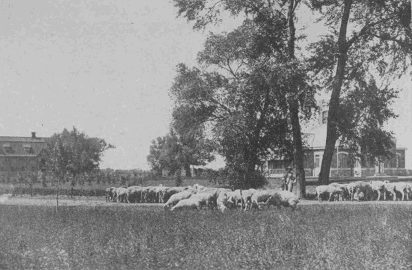
公主嶺農事試験所の羊群
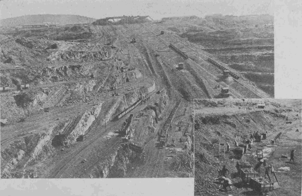
撫順炭坑の露天掘り
駅へ引返すと、馬車の用意が出来てゐたので農事試験場へ向つた。車上で加藤さんは、此地方が内蒙古の
農事試験場の門に達する並木路の楊柳が先づ美くしかつた。大正二年に創められた場内は総面積が二百十三町歩あり、中に作物試験用地が四十二町、放牧地と飼料栽培地が百六十五町を占めてゐる。往路に見た熊岳城の試験場は是れの分場である。満鉄は満蒙の将来の開発のため、猶此外に、鄭家屯、鳳凰城、得利寺、海竜城、黒山屯、長春、遼陽、鉄嶺、湯崗子等に農場試験地や牧場等を経営してゐるが、此地のが最も大きな規模を備へてゐる。生憎多数の場員が一人残らず運動会へ行つてゐられたので、何の説明をも聞くことが出来ないのに失望したが、併し一人の場丁の支那人に案内せられて、目で見学し得るものだけは見るのであつた。満鉄本社にゐられる画家眞山孝治さんの画題に度度なつた羊の群を、涯もない牧草の上で見ることは出来なかつたが、幾棟もある小屋を開けて貰つて雑多の羊を総べて見て廻つた。支那の辞書の「羊」の部に沢山のむつかしい羊の字のあるのを、実物に由つて示される気がした。支那及び蒙古種の外に外国種との雑種も出来てゐるのである。豚にも多くの種類が飼養されてゐた。私達は牧草を分けて一列の大きな楊柳の蔭で小憇した。その楊柳も度度眞山さんの絵に入つたものである。よく晴れたお
公主嶺駅へ引返して、駅の食堂で少し遅れた昼食を取つてゐると、
南で逢つた森立名さんが四平街から汽車で著かれた。私達を此処まで迎へに来て、共に奉天まで行つて歌を詠まうとせられるのである。私達は南で約束して置いた事を果される森さんの御深切を喜んだ。午後二時四分発の汽車は一行四人を奉天へ直行せしめた。公主嶺から以南は遼河平原と称せられ、遼河の流域に属して、奉天省の全面積の五分の一を占め、南満洲の東部山地と遼西山地との間に、北東から南西に伸びて山海関に達する、広大にして肥沃な平原で、もと蒙古の遊牧地であつた所も、今は漢人の勤労に由つてよく耕され、大豆、高粱其他の穀物の産地となつてゐる。真夏には高粱の為めに展望を妨げられるのであるが、私達は高粱が三四寸伸びただけの緑野の涯も無く霞んでゐるのを車窓に眺めながら、四人で歌を詠んでゐた。四平街までは生面の地であるが、それから先は往路に通つた所である。
奉天駅へ午後八時三十分に著いて、満鉄の社会主事河村牧男さんのお出迎へを受け、駅の楼上にある大和ホテルへ泊つた。新聞を見ると大元帥の張作霖がいよいよ北京を退き、今日天津を立つて京奉鉄道で奉天へ帰ると云ふ事である。それで支那側も在留邦人の重な官公人達も張の出迎へに忙しいらしい。北京が国民政府の勢力に帰したとすれば、当分は混乱するであらうから、私達の北京訪問は全く断念せねばならなかつた。奉天見物を後にして、明日撫順を日返りで観る予定にしてゐた私達は、食事を済ませ、一浴したあとで早く寝てしまつた。
×
ホテルは深夜にも汽車の出入する汽笛や響きのために殆ど眠られなかつた。翌朝私は早く起きて東京の子供に送る手紙を書いてゐると、へんな音が幽かに聞えた。顔を洗つてゐる良人も其れを聞いた。二人は唯だ騒音の多い所へ来たと思つてゐた。それから二十分も経たぬ中に、階下の駅の構内で俄かに人の往来の騒がしいのを感じたが、猶私達は乗客の込み合ふためであらうと思つてゐた。一時間の後に別室に泊つてゐられた森さんと加藤さんとが意外な変事を告げられた。満鉄京奉両線の交叉するガアドの下で、京奉線の汽車が四台まで爆破され、張作霖と共に黒竜江省督軍の呉俊陞も殪れ、其他にも支那官人と婦人との死者が多い様子だと云ひ、また爆破と同時にガアドの上の満鉄線を守備してゐた日本兵と京奉線の番をしてゐた支那兵との間に銃火が交換されたと云ふのである。私達は初めて今先のへんな爆音の正体を知つたと共に、厭な或る直覚が私達の心を曇らせたので思はず共に眉を顰めた。さうして斉斉哈爾で一週間前に逢つた呉夫人がどんなに慟哭せられることであらうと想つて心が傷んだ。それから朝の食事をして九時二十五分発の撫順支線の汽車に乗るまでの間、［＃「乗るまでの間、」は底本では「乗るまでの、間」］私達は此の事変について色色の謡言蜚語の伝へられるのを聞いた。それは皆日本人として耳にするに忍びないものばかりであつた。奉天は今城内も城外も惶惑と戒厳と混乱との中に在ると想はれた。
私達は予定通り、加藤森二氏と奉天の騒ぎを後にして汽車に乗つた。良人の心に
行き遇へる張督軍の変なども砂けぶりすと見て過ぐるのみ
と云ふ歌の浮んだのは此時であつた。森さんは「ガアドの上の満鉄の線路が吹き飛ばされたので、四平街へ帰れないとすれば撫順へお供する」と云つて同行せられたのである。外に今朝私達を撫順から迎へに来て下さつた撫順炭鉱庶務課の原田周藏さんが案内役として同車せられた。汽車は渾河駅から撫順支線に入つて東行すること二十九哩強である。途中駅の深井駅附近から二里弱の北にある東陵（清の太租の墓）を望遠鏡で眺めることが出来た。撫順は奉天の東北十三里、長白山脈の西南に派出した丘陵の間にある低地で、東西に伸びること四里、太古に氾濫した水が上流の樹木を此処に堆積して石炭層を作つたのであらうと云はれる地形である。その北側の丘陵に沿うて渾河が流れ、撫順炭鉱は河に向いて平均三十度の傾斜を以て、幅約一里、面積壱八二〇万坪、炭層の厚さ平均百参十尺、最も厚い所が四百弐十尺、埋蔵量拾億噸、その砿区は数箇所に分れて、大竪坑、斜坑、大露天掘坑等の採掘法を異にし、運炭、選炭、排水、通気、動力、注沙、照明等に、有らゆる新式の設備が出来てゐる。満鉄の大資源は実に鉄道部と共に此の炭砿のあるが為めである。私達は何よりも撫順の旧市街にある大露天掘の偉観に驚いた。竪横に深く坑道を穿つて採掘する物であると思つてゐた炭砿の概念は忽ちに裏切られて、唯だ表皮の油頁岩層を三四丈も剥いで取れば、下は一面に石炭なのである。天に向いて大きな口を開いた大地の怪物を初めは怖ろしく醜い形と感じたが、その一辺から少しく下りて段層を成した上に立つと、羅馬時代の大きな野外劇場を更に幾倍したやうな壮観を覚えて、こんなにして自然を利用する人間を智慧のある一種の蟻だと感じるのであつた。その剥ぎ取つた油頁岩は贅物でなく、それを乾溜して重油を製してゐる。猶この石炭には琥珀を含んでゐると聞いて、試みに同行の男達が附近にある炭塊を石に打ち附けると、しばしば小粒の星屑が光つてゐるのを見受けた。
撫順にある永安台の新市街は、旧市街の地下の炭田が露天掘の砿区となつた為めに近く移された満鉄経営の欧風日本街である。建築も道路も整然として美くしい。私は其処にある高等女学校で学生達に短い話をした後、学校の前の筑紫館で昼食を一行と共にし、午後は風致と眺望とに富んだ丘陵の上の公園の若葉の蔭に小憇し、また渾河の左岸を歩いて上流の対岸の山麓にある撫順城を遠望した。それからまた筑紫館へ引返して夕食を取つた後、小学校へ行つて満鉄主催の夜の講演を良人と二人で済ませて汽車に乗り、四人が奉天に帰つたのは午後十一時であつた。
六月四日になつた。良人も私も此の奉天では、木下杢太郎さんが「支那南北記」で書かれたやうな、異邦の古都にある、乏しいながらも或る情趣と知識とに触れることを期待して来たのに、突発した張作霖の爆死事件は、私達の心象を兎角新聞記者的旅行の観察に偏せしめようとするに至つた。これは厭な事であるが、併しまた冷淡に看過することも出来なかつた。昨朝の事変の真相が何故かまだ今日になつても明白でない。張が絶命したか否かさへも判然しないで、いろいろの流言が日支人の間に行はれ、城内の大帥府では遭難した張を自動車で運び去つたまま何事も発表しないのである。さうして、城中の支那軍が日本街を襲ふ噂などがある。
今日私達は加藤さんと午前に住吉町の朝日新聞の支局に局長の大井二郎さんを訪ねた。大井さんは其の少年時代から私達と特別に親しくしてゐる仲である。大井さんは局員達と共に事変後の探訪と通信とに取込んでゐられ、昨夜は一睡もしなかつたと云はれる。爆破した列車の現状の写真を直ぐ飛行機で送つたから、今日の大坂の夕刊には間に合つたであらうと云はれるのを聞いて、私達も共に喜んだ。大井さんは青森市の旧家の子であるが、継母との事情で、早く兄の一郎さんと前後して東京に出で、自ら労働しながら苦学して英語を修められ、誠実と勤勉と敏活とを備へて、人に愛せられる性格が、今日の位置を作つた。前年も此地にゐて郭松齢事件に機敏な報道をして手腕を本社に認められたが、今度は支局長として二箇月前に東京から派遣されたのである。大井さんが事変に就て聞かせて下さつた所は、昨日から私達の直感してゐた所と大差が無かつた。
朝日の支局を辞して、附近のレストオランで昼食を済ませてゐると、長濱哲三郎さんが自動車を以て迎へに来られた。長濱さんは私達の友人茅野蕭蕭、三樹退三両氏と大学時代からの友人で、私達が東京を立つ前に特に書を寄せて奉天の滞遊を勧められた人である。今は此地に満鉄の経営してゐる南満医科大学の学生監をしてゐられる。私達は先づ其の大学を観に行つた。附属地の一端に広大な地域を占め、宏壮な欧風建築と共に内部諸室もまた完備してゐる。日支両国の学生を収容してゐるが、今日は昨日の事変のために休校してゐた。屋上へ出て展望しながら長濱さんの地理的説明を聞いた。奉天は唐代より久しく瀋州と称せられた地方で、元代に瀋陽と云ひ、清の太祖の十四年以来奉天と称せられる。遼河源流の一つである渾河（一名瀋水）を北西に望んで、東へ延びた沃野の中に位置し、西は満鉄線に沿うて鉄道附属地に東北より西南に長方形を成した日本の新市街が、奉天駅から放射状に浪華平安の二大街を貫通し、それに大小の街区が分布され、舗道、並木、上下水道、欧風建築等の整然とした文化都市を実現してゐる。併し住民の七割強が支那人であるのは長春の日本市街と同様である。その東に奉天城外の商埠地（居留地）が凹字を左向にした形で日本市街を半ば囲み、内外人の商舗を列ねた殷賑な市街を成し、日本を初め諸外国の領事館も其処に置かれてゐる。それより東に奉天城があり、城は辺城と内城とに分れて、辺城は高さ七尺、周回一万六千米突の土壁を以て内城を囲み、内城と辺城との間にある四方の広大な支那市街は東西南北の各大街に沢山の胡同（横町）が属してゐる。その辺城に大小の辺門が設けられ、大学の屋上から真西にその大西辺門が望まれる。今日は晴れた日で展望にはよいが、屋上の日光が私達に暑気を感ぜしめた。私は階下の室でお茶を頂きながら、嘗て此処に教授をしてゐられた木下杢太郎さんが、どの室であの支那人の
×
事変の後に城内へ行くのは危険だと云はれたが、長濱さんの御配慮で、陳源さんと云ふ大学の職員で日本語の達者な支那人を同行し、大学の自動車で奉天城に向つた。日本市街を過ぎる中に私の心を寒くしたのは、砲兵が野砲を挽いて行軍し、大街の要所要所に歩兵が伏射の形で銃を擬し、また各所で工兵が堅固な角材で鹿柴を組み立ててゐる事であつた。今朝ホテルの窓から幾つかの列車が板にペンキで樹木の檜を書いてカムフラアジユを施してゐたのと思ひ合せて、支那兵の万一の襲撃に備へてゐるのだと直感したが、今にも市街戦が起り相な光景は大袈裟すぎると思はれた。
商埠地を過ぎて大西辺門から辺城に入ると、門内には支那の戒厳令が布かれて、銃に剣を附けた一隊の支那兵が将校に引率されて門内の左右を固めてゐる。併し私達の自動車は誰何されずに通過した。辺城の中の市街は賑つてゐるが一人の日本人にも逢はない。さうして街街の支那人の私達を目送する様子が何となく不気味であつた。それから内城の大西門へ達した。内城の壁は黒い煉瓦で築かれ、高さ三丈余、周囲五千米突、壁上の広さは優に野砲を据ゑる事が出来る。清の太宗の天聡五年（西紀一六三一）の築造である。この内城の大西門内にも左右に銃剣の列が光つてゐた。私は大東門に向ふ大街を真直に行き、財政庁の角から右折して満鉄公所を訪ねた。公所は満鉄の公使館と云つてもよい程壮麗な、半支半欧の建築である。公所長の鎌田彌助氏が折好く居合された。
鎌田氏は斉斉哈爾の早川氏と同じく有名な支那通である。早川氏が呉俊陞と義兄弟の約があるやうに、鎌田氏も張作霖と義兄弟の親交を訂せられてゐる。鎌田氏の顔には悲愁と困惑との色が明かに見えた。氏は私達が城内へ来たことを甚だしい冒険だと云はれ、「あなた方にはお分りにならぬが、昨日から此の門前を支那人の云つて通る言葉は、我我日本人に対して容易ならぬ怖ろしい事を云つてゐる。久しく此地にゐる私達にとつて、こんなに支那人の感情の急激に悪化した事は例がありません」と云はれる。「今朝この家の壁へ乱暴な事を書いた支那人があつたので直ぐに消させました」とも云はれる。氏の令夫人は昨晩の汽車で大連へ避難され、其他の婦人達も附属地へ立退かせたので、公所には男子の社員ばかりが残り、支那の雇人も皆辞し去つたと云ふことである。
鎌田氏は昨日張作霖遭難の現場へ駆けつけて行つた時の光景を話しながら、ヅボンの隠しから幅七分、長さ四寸程の支那のカルタ「
×
公所を辞して、城内の繁華の中心である四平街へ廻り、奉天支那街の小三越である吉順糸房の屋上から城内を展望した。清の太祖太宗二代の皇居であつた宮殿は此の内城の中央に位置して、その黄褐色の瓦楼が此処から近く望まれる。その中の文溯閣には有名な四庫全書参万六千冊が蔵められてゐる。宮殿は平生拝観を許されるのであるが、今は時変のために遠慮せねばならなかつた。この展望と地図とに由つて見ると、奉天城の建築様式は漢代からの古制が厳守されてゐるらしい。即ち辺城と内城と皇居との城壁が三桝の形になつてゐる。辺城が昔の「外郭」のことであらう。糸房の店の設備は欧風百貨店として整つてゐた。支那店員の接客術の上手な事は日本人の及ばない所がある。日本語の流暢な店員がゐるのにも感心した。在留邦人の商店で、各地とも此の程度に正しく鄭寧な支那語の出来る店員は稀である。出先で支那人と支那語とを軽視する風を改めなければ、日支の親善も日貨の普及も心細く思はれる。
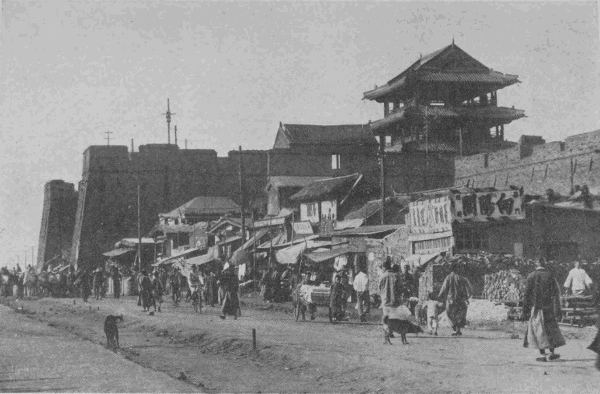
奉天の城外
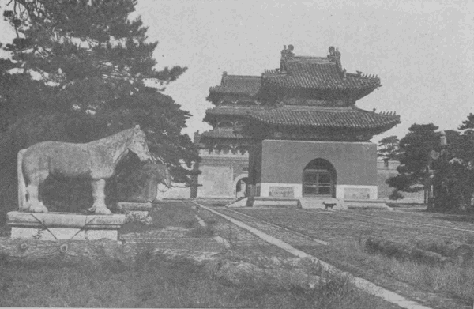
奉天の郊外なる北陵の一部
鎌田氏に注意されてゐたので、日の暮れない内に城外へ出てホテルへ帰つた。今夜小山介藏少将の御来訪を受けてお話を聞いた。少将は先きに旅順でお目に掛つたのであるが、先月下旬俄かに関東軍司令部が奉天に移つたので、憲兵司令官として旅順から来奉されてゐるのである。
×
翌五日は午前に馬車で日本領事館に林総領事さんを訪ねた。領事館では軍事当局者や、張作霖の軍事顧問で、一所に遭難して運好く微傷で済んだ義峨少佐なども集つて、重要な会議中であつたが、林さんは其席を外して私達に会はれた。林さんは満鉄の鎌田氏と反対に、「危険は無いから何処でも見物して下さい」と勧められ、張作霖の死に就ては明言を避けられた。重傷して意識を失つてゐる張を自動車で大帥府の奥に運び去つて以来、支那側では一切訪客に面会を謝絶し、日本医師にも診察させないので、全く実際によく秘密が保たれてゐるのである。私達は帰途に回回教寺院である清真寺を観たいと思つたが、猶鎌田氏の忠告に従つて割愛した。今夜微雨が降つて春雨の情趣を感じた。私はホテルの部屋でキリアアジユを吸ひながら、木下杢太郎さんが此地で此の煙草の香の指先に残つてゐるのを嗅いで憂鬱をまぎらされた事を想ひ出し、大連の高井さんから貰つて来た此の煙草が私にも一層なつかしい煙草になつた。異郷の夜の春雨とキリアアジユの水色の煙、併し私達は是れに張作霖の事変に由る日支人間の重苦しい或る不安の気分を交ぜて感ぜねばならなかつた。それでも今夜城中城外の空気と関係なく、私達が森、加藤両氏と歌を詠んでゐたのは、柔かな雨と煙草の香とのお蔭であつた。
×
翌六日は小山少将の御配慮で、非番の憲兵曹長西原登志夫さんに案内して頂き、医科大学の陳源さんを通訳に頼み、大学の自動車で北陵へ行つた。是れは林総領事さんのお勧めに従つたので、鎌田氏には内所であつた。陵は駅から北へ一里半の郊外、隆業山と云ふ低い山にある。途中に満鉄線を横ぎつて行くと、右に遠く有名な喇嘛塔が見え、左に近く支那の大学が見える。大学は此地の排日学生の本部だと云はれる。
北陵の内外には樹木が茂り、陵の外郭は十五町に亘つて土塀が繞らされてゐる。門外で拝観券を買つて、入口の大きな牌楼を過ぎると、左右は松柏の老樹が深林を成し、広い路の両側に豹、獅子、馬、駱駝、象の大きな石像が或は立ち或は臥してゐる。明の十三陵の写真などで想像してゐた支那古陵の景色が先づ嬉しかつた。四壁は亞字形に繞らされ、砌には四角の石を敷きつめ、階段は広い翡翠で造つて精細な彫刻が施されてゐる。風雨に曝して光沢を失つてはゐるが、靴で踏むのは勿体ない気がした。陵は隆恩門、隆恩殿、其他いづれも崇徳八年（西暦一六四三）の建造で、爾来度度の重修を経て、丹黄朱碧の色がなまなましてゐる。碑閣には康熙帝撰文の宝牌がある。隆恩殿の後に土を円形に盛つた宝頂が即ち清の太宗の霊柩を収めた陵墓である。私達は内壁の上に登つて歩みながら宝頂を一周した。内壁の高さは二丈三四尺もあらう。壁上の路は凹形に墻があり、幅は野砲を据ゑ得ることが城壁に異らない。死んでも斯様な所に葬られるのを思ふと、昔の人間が帝王になりたがつたのも尤もだと感ぜられた。再び下りて楼閣の建築を見て歩くと、近年重修した外楹の絵に欧風の煙突などが書かれてゐたのは少し興覚めた。
駱駝の石像の下まで引返して、そこに一軒ある茶店で小憩した。陵には門を入つた時に一人の番兵を見たきりで、他に支那の兵士も巡査もゐない。茶店の老人が出す茶を飲んでゐると、松風が山に響く外、蕭寂として何の俗音も無い。危険だと思ふのか、日本人の見物も来ない。私達は冒険の積りで来て卻て何の事も無いのに安心しながら、少し拍子ぬけの気味でもあつた。
此分なら今一度内城へ入つて行かうと云つて、帰途に西小辺門から内城の小西門に入り、大東門外にある胡同（横町）の古本屋を訪うたりした。午後はホテルで揮毫し、夜は満鉄の図書館で良人と講演をした。そのあとで、大連から引返して来て、深夜の汽車で朝鮮へ廻られる佐藤惣之助さんを駅に見送ることが出来た。偶然異郷で逢つて、一所に旅行した日数は短かつたが、共に経験した地域と情趣は広く且つ深いので、唐人の「我は瀟湘に向ひ、君は秦に向ふ」と云つたやうな別離の哀情を感じるのであつた。私達も明日の午後は此地を立つて引返し、今一度大連と旅順を訪はうとするのである。
六月七日に奉天を立つて再び大連に出で、大和ホテルに投宿した。先きに告別の辞を述べた大連の諸友と、二十日の後にまたお目に掛ることの出来たのは、時変に妨げられて北京行きを断念したが為めであつた。私達は是れを幸ひとして、諸友と会談を重ねる機会を作り、また大連と旅順の見残したる所をも歴訪することに決めた。
翌日からの案内には、主として西田猪之輔さんと渡邊嚴さんとが当られた。
×
旅順へ再遊した日は、前回と違ひ、往路は汽車に乗り、途中で夏家河子駅に下りて、西田さんと渤海の浜辺の一部を散歩した。少し風の吹く日であつたが、空はよく晴れてゐた。
旅順では、駅長の伊藤眞一さんが待受けて、共に馬車を駆つて、東鶏冠山砲台の敗墟を案内せられた。巌窟のやうに竪牢な砲台の内部は廊のやうに伸び、それの所所に窓かと思はれる明りを見るのは、我軍の重砲がたまたま破壊した痕跡である。内部を一巡して外に出た時、遠くない松原の中で郭公の啼くのを聴いたのは、一行の哀感をそそるに十分であつた。黄金山を越えて海から吹く風が次第に強くなり、断えず白い濃霧を伴つて、それを切れ切れに山へ吹き附けて過ぎる光景は、戦時に砲煙のたなびく悲壮の状を聯想せしめた。
前回にアカシアの若葉の美を喜んだ旅順は、三週間の後の今日見ると、そのアカシアの白い花で埋まつてゐる。殊に黄金山のアカシアの花が雪のやうに美くしかつた。一行は、その黄金山にある大和ホテルの瀟洒たる一室で、アカシアの香に吹かれながら、西田さんから昼食の饗を受けるのであつた。
食後に、白玉山の山腹にある伊藤さんの官舎に小憩して令夫人にお目に掛つた。外に関東庁の官吏達で、俳句や歌を作られる人人も来合せられ、また一度大連で逢つた中尾千代子さんも、此地に住まれてゐるので、再びお目に掛ることが出来た。伊藤さんは博文公の御二男である。私は令兄の文吉さんを知つてゐるが、今また令弟と相知る機会を得たのである。青年法学士である伊藤さんは芸術をも愛せられ、お話は多く其れに及んだ。［＃「及んだ。」は底本では「及んだ、」］春畝山人の優雅な一面は、より多く此人に伝はつてゐるらしい。
小憩の後、伊藤さんは駅の小汽船に私達を乗せて、港内を一巡し、また少しく港外にまでも出て、閉塞船を沈めた位置を往復し、指点して説明して下さるのであつた。沖より港内に吹き入る霧がますます劇しくなり、汽船の上に対立する人と人との間をも白くするのは、私の初めて経験した壮快な光景であつた。
旅順からの帰途は乗合自動車の便に由つた。アスフワルトを敷いた坦道が丘陵の間を縫ひつつ、しばしば右方に黄海の緑を望むのは、まことに快適な散歩であつた。
×
一日は渡邊嚴さんに伴はれて、大連市内を見物する序でに、前回に見た外の硝子工場にも赴いた。精巧なカツト・グラスの出来る工場であるが、今は多く支那人向の実用品が製造されてゐた。満鉄の図書館を訪うて松崎鶴雄先生と相知る喜びをも得た。
また他の一日は、西田、加藤、渡邊諸氏に、四平街から来られた森立名さんを加へて、大和ホテルの一室で短歌会を開いた。
また一夜は、星ヶ浦の某亭で、大連の歌人の一部と共に短歌会を催し、良人と共に其れを批評した。主として西田さんが斡旋されたのである。
かくして大連に五泊し、十二日に往路と同じアメリカ丸に乗つて帰途に就いた。埠頭には多くの人人が見送つて下さるのであつた。中に宇佐美、小日山、石川三夫人と、満蒙の旅行を共にした加藤郁哉さん、前後の大連滞在に兄弟の如く深切にお世話をして下さつた西田猪之輔さんとに、特に別れが惜まれた。
船中では満鉄理事の神鞭氏常孝、哈爾賓採木公司の深澤暹氏などと乗合せた。神鞭氏は良人と同郷の遠い縁戚であるが、二人とも初めてお目に掛るのであつた。海路は平安であつた。福岡の加野宗三郎さんが度度無線電信を船へ打つて、その福岡市外の新居「環水荘」へ立寄れと勧められたが、北京へ行かない以上は、早く東京へ帰りたいので、その御厚意を無線電信で辞し、直ちに神戸に向つた。それから京都に一泊して、東京に著いたのは六月十七日の朝であつた。季候の相違であらう、郊外の家のアカシアの花は、すべて散り尽してゐた。
［＃改丁］
［＃ページの左右中央］
満蒙の歌 其一 與謝野 寛
［＃改丁］
五月七日正午、アメリカ丸に乗りて神戸を発す。
月の色窓にきたりて白ければ旅寝すずしき瀬戸の夜の船船にゐて児らの上をば思ふにも哀れなるかな瀬戸の夜の月
八日の朝、門司に碇泊す。
ゆくりなく筑後より白仁秋津君来る。即ち共に歌を詠む。
四ときほど門司にとどまる我船に歌びとわが船に門司の
若きより相知る秋津船に来ぬ仮りの別れも惜しきなるべし
この朝の門司の港のつめたきに秋ごこちして人と別るる
肥前なる高田保馬博士の上を、秋津、晶子と共に語りて、
思へども肥前のわが船に門司の港のくもれるも心の如し君に逢はねば
午後門司を発す。
玄海にさしかかるとき船を追ふ小雨も人の泣くごときかな黄海の船中にて、
海に来て心を放つはて知らぬ海となれかし空となれかし朝鮮の南の嶋のあひだより我船と行くありあけの月
平らかにさざ波しつつ我船の外に物なき黄海の上
事なきに過ぐる心を破るべく海に遊べど海も
初夏の黄海晴れてわが船のへさきばかりに白き浪たつ
四五の人
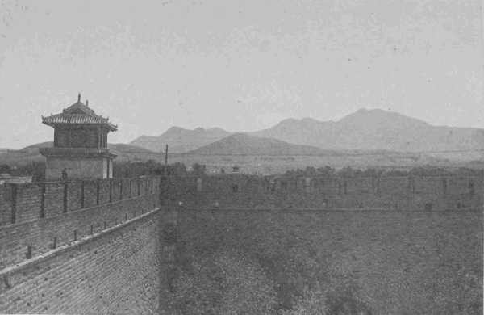
金州城の外壁と遼東の山野遠望
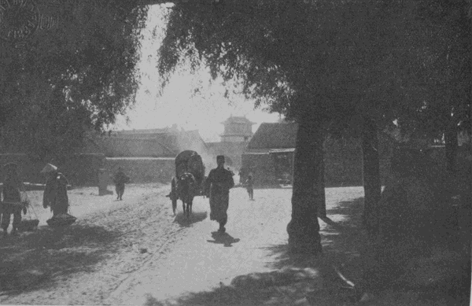
金州の城外より城内の一部を望む
小窓より黄海の月ほのかにも卓なる花を照す
たまたま花田比露志学士と船を同じくす。
黄海のうねりの上の友の名も我名もひろし空をさへ行くべきどちが
大連に留ること、七日に及ぶ。
我も来て和尚と云へる山のごと遼東の野のアカシヤの緑の蔭の赤き土旅のこころに柔かきかな
山寺の道士のころも春過ぎて猶目に紅し桃の花かと
はて知らぬ草に坐れば放たれし馬のこころにかはりゆくかな
大連の港のうへの
蒙古かぜ大連を吹き海暗し
砂まじり蒙古の風の吹く街に落ちつかぬかな我も
ゆくりなく高き
細ながき支那の
いろいろの異国の煙草まさぐりて恋する日にも似る
工場の
友の指車に
大連のアカシヤの街ただ少しこころを濡らす朝露もがな
笛ひびき花の
旅順にて
初夏の並木のうへに明るくも旅順の入江袖二つ置く日かげなる老鉄の山くろくして細き真昼の港口光る
半嶋の尽くるところに渤海を
沙漠より掘りつる
千とせ経て砂より出でしミイラさへ猶煩はし人の来て観る
かなしみを空のおもてにむき出して旅順の山は今日も
今日見れば唯だ水いろに
雪ほそく山のかげより覗けりと見ゆる旅順の街の
泣かずして旅順の山を行きがたしこぼるる砂も
しら玉の名は美くしき此の塔も見よ踏みたるは
勇士たちいつの世如何に慰めん此の塔にさへ
路転ず青き入江を前にして山の高きに白き塔立つ
いくたびか曲りて登る坂ごとに旅順の入江涙を送る
旅順より別れんとして惜しきかな後ろに青きアカシヤの
しら玉と名づくる塔に
諸友と星が浦に会すること両度なり。
星が浦海のあかりのほのかにも並木と砂にありて夜となる星が浦銀の
旅にして語れば好しや星が浦ホテルの宵のうら寒きにも
ホテルのみ白く浮びて星が浦をぐらき
しばらくは旅を忘れて美くしき星が浦わの砂を踏むかな
黄海のほとり我が来て立つ磯に青き
遠く来て我が思ふこと静かなりあけぼのの浜たそがれの浜
蒙古より
星の家の壁の
海を見て桟ひとつ無き硝子戸の広き不思議に
磯のかぜ寒きゆふべに旅人の心のごとくそよぐ蔦の葉
夜となれば磯の並木にともる火も海の色しぬ窓を流れて
五月十五日
大連を明日立たんとて荷造りを夜更けてすれば旅役者めく金州の南山を訪ふ。
南山の日なたの砂の真白きに踏むを恐るるたんぽぽの水色す小松のうへの記念碑の白きを越えて流るる空気
南山を更に
南山にあやめ花さく戦ひて帰らぬ子らの夢と思はん
金州城にて
やはらかに柳つらなり野の土とおなじ色する支那の壁柳の立ちて単調やぶる
わが車
金州城外の天斉廟を訪ひて
おなじ所の極楽寺にて
沙立ちてしばし熊岳城にて
肥えたるを唯だよしとする渤海につづく
城壁の
鍬打ちて
初夏の
夕あかり沙に残りてかすかにも草より少し低き
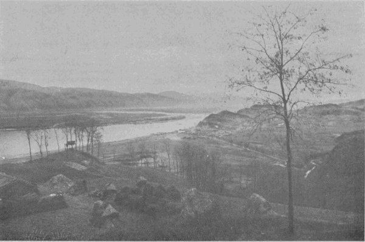
鴨緑江の上流
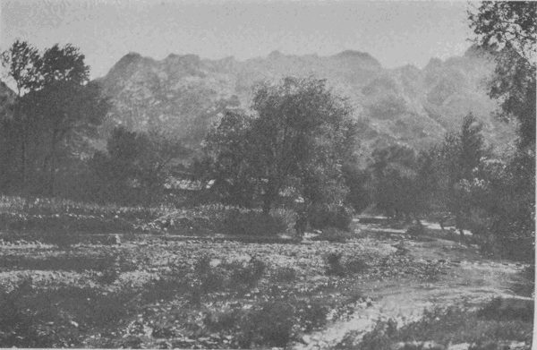
車上より望みたる鳳凰山
熊岳温泉に宿る。
遠く来て熊岳河の砂の湯に見ゆる山みな青けれど子を望む山のみ寒し野の上にして
東京に子らを置きたる心をも悲しくぞする
満洲の柳のなかに子を望む山はあれども東京遠し
野のうへの
あてもなく飛ぶ心をば
営口にて、駅長森田成之君に贈る。
われの観るこの日も
みなかみの遼河の柳みじかくて暗きジヤンクの帆を上に置く
湯崗子に宿る。
千山に登りて、大安寺に宿る。
平らかに沙ひろくして罫を引くごとくも広き野を鋤きて土に順ふ支那の
友とわれ馬より行けば妻の
春かぜに
新しき感激をもて行き行けと柳絮は打ちぬ我が旅の肩
またしても路の
その前に支那の習ひの手拭を出すことも無し
馬を
千山の梨の木の渓花過ぎて緑のなかに鶯の鳴く
千山の
岩の上に我れ先づ立ちて妻の手を引くこともする千山の渓
千山の岩に残れる夕空の明りを愛でてその岩に倚る
わがために仙人台の岩のもと山寒ければ火を吹く
千山のゆふべの峰の大安寺
灯を消せば千山の夜の僧の
千山のいただきの空
千山の
その洞に羅漢を入れし峰の岩風荒ければ飛ばんとぞする
千山の荒き岩間のすずらんとリラを合せてつくる
平生の見方を換へて千山の最も高き巌に窓あり
千山に
千山の道士の宮に栖む
臼挽きてまろく巡りぬ器械より猶あはれなる
西田猪之輔君、大連より湯崗子に来る。
湯崗子土も草葉もほの白し広野のなかの温泉の路追ひきたり湯崗子にて友の詠む歌あはれなり柳絮の飛ぶ日
湯崗子ホテルの前の木かげをも三たびとまでは踏まで別るる
遼陽に宿る。
もだしたる遼陽の塔この白き明りのもとに立つことも好し
遼陽の
遼陽の
ひるがへる柳絮と共に遊べりと支那の五月の旅を語らん
夜あけがたロシヤの寺に聞く如し
安東に宿りて、船を鴨緑江に泛ぶ。
安東の川上の山みな青し並ぶジヤンクの緋の旗の外雨のおと柳にありぬ船にゐて九連城を見上げたる時
川上の山ことごとく
帆ばしらの木立みぎはを暗くしてジヤンクの旗の紅き花さく
五竜背温泉にて
とがりたる五竜の峰を
落つる日が
沙河のもと釣り得て草に置く魚も夕の月もほの白きかな
再び遼陽を過ぐ。
しばらくは我れの車を追はんとて柳の上に動く白塔四平街の植半に宿る。
寝て聞くは蒙古の書く文の短きを見て遠く行き疲るとや見んふるさとの人
南に赴く車上山消えて沙のみ白き野のなかの我が車をば横ぎれる
酒をもて手をも洗ひぬ
はて知らぬ沙の上にて路分る唯だ見てあるも寂しきものを
南に宿る。城の
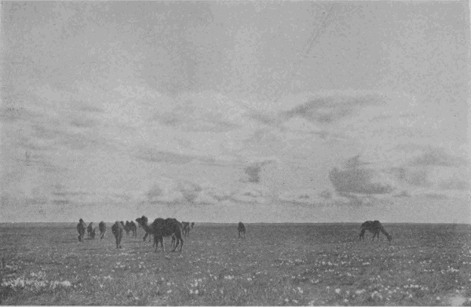
内蒙古放牧地帯の一部
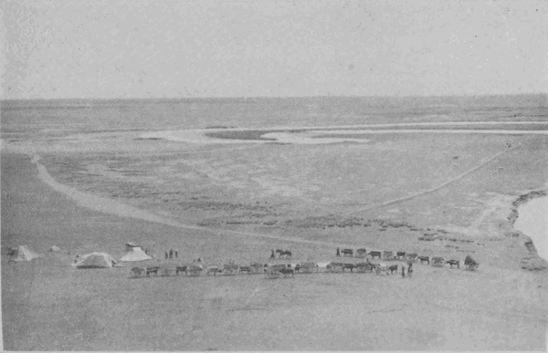
内蒙古の一部
南の城たそがれて河ひとつ沙に光れり灰色に一里四方の城立ちて
ひとり行く旅路の如く
南に立つ沙けぶり我を遠く行き
沙立ちて
国にゐて獅子の夢をば見る人も蒙古に入れば沙を歎きぬ
昴線鉄道車上二三日の雨に成りたるみづうみも沙に比すれば一尺の水
沙に匍ふ小さき
児昂昂渓より斉斉哈爾に赴く。
沈まんとして暫くは血を流し広き蒙古の沙に坐る日日は遠く朱の魚として泳ぐなり蒙古の沙の海に似る末
嫩江の劉荘に、督軍呉俊陞夫人李氏其他と会して、船を泛ぶ。
天の川しろし五月の宵ながら夫人李氏
夫人たち柳を折りて乗りたればほのかに青し嫩江の船
嫩江の月夜の船を横ぎるは我が旅のごと遠く行く
嫩江の青き月夜の船にある李夫人の顔わが妻の顔
かたぶきて夫人に倣ふ
東京に君と逢ふ日を契れどもまた見るべきや嫩江の月
昂昂渓に宿る。
沙に寝て青き柳を枕とす李夫人の手にありし
哈爾賓雑詠
初夏のわが車いつしか高き街に出で松花江見ゆ
リラの花Ｆ夫人より贈られて卓に香れるよき旅寝かな
窓に倚り梨の花をば見上げたる夫人の顔も白き夕暮
われの馬車キタイスカヤを行きかねつ祭の如き初夏のむれ
青やかに
ハルビンの夏の夜がたり尽きねども三更にして夜の白みゆく
踊りつつ夜明に及ぶカバレエも
国ひろしハルビンの人咎めねば踊りて朝に到るならはし
踊場を出でて帰れば石だたみ
初夏の路ひろくしてやはらかに
しろき墓いづれも
水いろの
ハルビンの
松花江浪けぶり立つをちかたに白き船あり桃色を載せ
紫のねぢあやめをも手を伸べて買ひつつぞ行く馬車の上より
長春に向ふ車上
見おろせば柳のなかに沢まろし松花江より分れ入る水ひろき野のまろき柳に夕あかり猶のこりつつ黄なる月出づ
吉林に遊ぶこと半日。
いにしへのふるさとの
時なくて竜潭山の半より帰る木の間にうぐひすの鳴く
吉林の城の北なる山べをも馬車より行きぬ河を見んため
吉林の城ちかく来て松花江踊る形す三たび大きく
長春に帰る車中
わが車植ゑし世の七百里には及ばねど柳ぞなびく
長春に宿る。
振り返り城の上なる寺を見に寛城子を過ぐ。
初夏の
公主嶺の農事試験所を訪ふ。
まばらなる
乾きたる煉瓦の色の雲のもと遠く明るき草の色かな
聞くは唯だひろき草より立つ風の
首のべて
いにしへの公主の馬車も遠く来てこの
撫順に到る。
炭を採る露天のもとの土の段桟敷のかたち石炭に琥珀まじれり
奉天城外の北陵を拝して
北陵の宮居をめぐる松と松かぜに消えんを恐る美くしき夢のけしきの北陵の宮
北陵の石の駱駝に倚りかかり暫く何を思ふとも無し
北陵に立つ石の馬石の象いよいよ山を静かにぞする
帝王は死にたる
奉天にて
柱にもむなしき竜を飾りとし人を行き逢へる張督軍の
わが兵士きて
若くして異国を恐れ遠く来て今日この頃は
帰途、再び金州を過ぎて
はろばろと柳のもとに沙赤し我が車をば焦がす日の色西田猪之輔君と夏家河子にて
渤海を見て我が遊ぶよろこびに渤海のほとり平たき
西田猪之輔君と、再び旅順を訪ふ。
海の霧旅順の山にひろがれば虚空にありぬ霧しろく鶏冠山をかき消しぬ
かなしみて鶏冠山を
荒き霧旅順の口の岩かどを真白く消して我船を吹く
伊藤眞吉、西田猪之輔両君に示す。
共に見て忘れぬものになりぬべし黄金台のアカシヤの花心をば銀の糸もて引く如しアカシヤの香の動く山かな
三たび星が浦に会す。
きれぎれに泣きつる波も夜となれば身を投げかけて磯に砕くるたそがれの沖の明りにほのかにも
ともに見る星が浦わの水のいろ明日の我にも青き影せよ
アカシヤの花の木かげに海ひかりおぼろ月夜と見ゆる路かな
満洲の旅のはじめに見たる磯また見て旅のよき終りかな
大連にて、斉斉哈爾なる李夫人の殉死を聞きて
もろともに嫩江に見し夕月はまた照せども帰らざる君督軍の黒竜省の兵よりも強き愛もて勝てる李夫人
李夫人の死を悲めば冷たくも心に流る
大連より帰らんとして
四角なる家づとに
満洲に別れんとして人ならぬ柳と
夫人たち皆わかければ此の別れ寂しとするは我が心のみ
［＃改丁］
［＃ページの左右中央］
満蒙の歌 其二 與謝野晶子
［＃改丁］
船中
船室の白と港の山うつる鏡もさびし皐月の七日うちつけにわが部屋の戸の鳴り出でて心さびしき
大連
ふるさとの夢より若くなつかしき祭の朝のアカシヤの風アカシヤに風の騒げば山の灯もいさり灯のごと心もとなし
朝いまだ
大釜に
馬車つけば入日の色の繻子を掛く
錦著てうたへる顔のほのぐらし胡弓を摺るは師父の
かたはらに楊貴妃の絵の掛かりたる紫檀の
白き馬わが車をば引きて出づ
星が浦
その星の身の変りはてたる岩と聞くそのあたりにもしら波の立つ
蔦かづら夕の浜のしら砂へ導く廊にしづくするかな
黄昏の浜の悲しくあけぼのの浜あはれなり旅人の見て
暗き山いよいよ近くよりそひて華やぎわたる灯の星が浦
蒙古かぜ星が浦のみ水いろに残す夕もなつかしきかな
ふるさとの東に向ける窓なれど哀れに白したそがれの浜
星が浦夕明りにて見る顔の蒙古に入らば恋しからまし
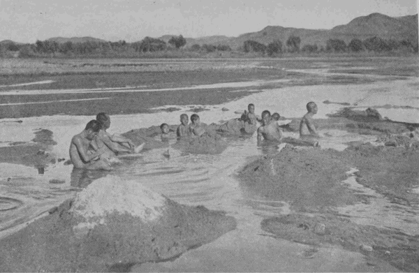
熊岳河の砂湯

熊岳河附近の望小山
旅順
亡き魂の生きよ旅順の塔の廊踏めば初めに帰るが如くわれも立ち士の列伝を説くも立つ旅順の山の二百三尺
薔薇の路アカシヤの路くるまして
敦煌に掘られし唐の人形も郷愁つくる旅順に見れば
金州
常にわが車に添へり金州の驢の細き金州は
赤土の山平らにて
廃れたる
五月の日琥珀の如き金州の城外を愛づ柳絮もわれも
城外の南金校の先生と馬車をともにす柳絮のちる日
熊岳城
砂白き熊岳河に見る時は死にたる城もうつくしきかな風立ちぬ車の
河原ともやなぎ原とも知らぬなりところどころに
魚の荷も古靴の荷も砂湯なる
熊岳の河の砂原ほのかにも潤ふ朝に飛ぶ柳絮かな
母立ちて
砂掘れば人の思ひも及ばざる川の心の熱き湯の湧く
大石橋
愁ふれば車の方へ倚りてきぬ歩めるは
悲しけれ渤海に行き人見んは見ざることより勝るなれども
逃水の不思議を聞けど驚かず満洲の野も恋をするのみ
営口
わが船よ片時のちはいかならん逢ひがたき人と遼河の船にあり午後四時の日よ座をば動くな
濁りたる遼河の流逆しまに動き初めけれ潮さして来て
蘆原も遼河の幅におとらざる緑をひろぐ北方の岸
千山
わが乗れる浅みどり梨のわか葉のそよぐ頃轎して入りぬ千山の渓
ことごとく四十
紫丁香
禅院の日時計の
紫丁香山寺に立つ煩悩のこころもまじるうす色をして
なほ白く梨の
日の本の法師よりけに
若くして身の破戒をば問はれたる法師のありし土の
あまたたび目ざめあまたの夢を見ぬ山寺と云ふ処に
暁の山の法師の
片はしも渓の水より冷たけれ支那の御寺のあんぺらの
禅院の朝の
梨の花しろきをつたひ朝風の渓
朝風や峰づたひしてうぐひすを幽かに聞ける千山の奥
渓せまく轎をもちひずなりしのち身に沁みわたる山の風かな
昇天の竜の跡ある洞に居ぬ
しばらくは山轟きぬ木の枝を
山
仰ぐ時
日光の陽明門のかたちするものの崩れて人
つばくらめ
屋根白く日のあたりたる木魚庵ただ一つ見えうぐひすぞ啼く
大空が波形をして集れる山とし見ゆれ
無量観道士の寺の客堂に入ればたちまち山風おこる
無量観わが捨てがたき思ひをば捨てえし人の青き道服
薪をば抱きたまへる道士にもみちをゆづりてそれたる
顔あてに
伴へる支那の
道士達松風をもて送らんと云ひつる如くうしろより吹く
旅人を風が臼にて摺るごとく思ふ峠の
湯崗子
来ん年もホテルの軒の巣に棲まん
湯崗子左の窓に入りくるはかぐろき
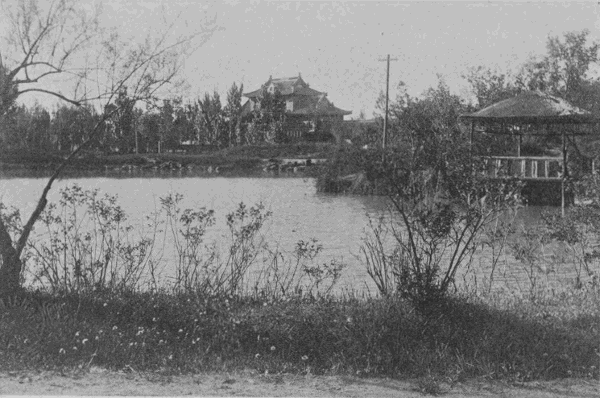
湯崗子温泉の外観
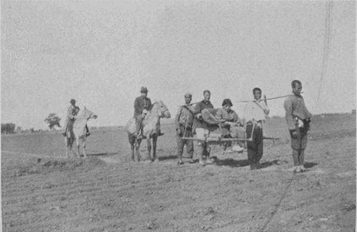
千山に向ふ途上の一行（中央騎馬の人は加藤郁哉君）
むらむらに白き
蓬だにうら安からぬ野の中の
燕京のいくさ始まる終りぬと耳さわがしや東三省も
湯崗子
遼陽
柳絮をば混ぜてつばめの渦巻けり中にしたるは白塔にして白塔の第十三の上層の先づくづるるは悲しかりけれ
温泉の柳絮
夕月夜逢ひに行く子を妨げて綿の如くにまろがる柳絮
白塔の夢の外なる何ごとの夢をもな見そせめて
釣魚台
目を閉ぢて昔の夢を釣らぬまに恋をする人のみ知らん
安東
人ならば統軍亭と九連の台の如きは苦しからまし
江の中の筏いこへる小景に女もまじりなつかしきかな
われなげく満ちたるもののめでたさと寂しさをもつ
われはまた北へ行くなり義州てふ日本領にも近づきしかど
五竜背
なだらかに事を好まぬ風景へ五竜の山を一つ加ふる
水田あり柳の立てば旅人も晩帰の人のここちこそすれ
医家ありて柑子の皮を乾す窓に蜂の寄るなる温泉の村
支那の人営むと云ふ温泉もあり
湯の宿の支那の手代のよく語る蔦の育ちし年月なども
鳳凰山
美くしき鳳凰山は峯多し芭蕉の巻葉むらがるやうに内蒙古車中
ねぢあやめ地平の線にいたらずて其処さへはては白き砂山われは今地と云ふものの平らかさ教ふるさまの落日とある
をちかたの胡沙に曇れる日ならずてうららかならば悲しからまし
都とは沙漠の空をゆきかへるめでたき雲を見ざるところぞ
昨日今日
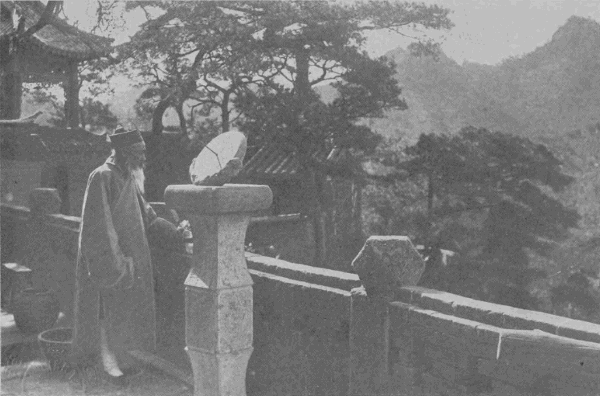
千山の無量観と道士の一人
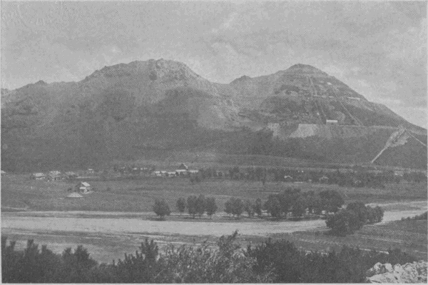
千山の帰途に観たる鞍山
いづくとも
蒙古野に去年の出水の溜れるは五十年して
南南の城蒙古にて十種の穀をこころみに作る
いつの日か色ありしもの失ひて形のみなる
南の城旅人が思ひしさまにやや過ぎて寂し蒙古の
南の風南の城を出づれば児河斉斉哈爾
我身をば中華の貴女の逍遥の車に見出づ夕月のもと君折りて柳を船にさしたれば嫩江の水都にまさる
嫩江の嶋のやなぎの
呉夫人の船を
日の色を少しまじへて柳原孔雀の青をつくる夕ぐれ
嫩江を前に
洲の石に瑪瑙まじれり
柳原
嫩江の
旅人にくれ竹色のうすものを人おくる夜の春のかりがね
留園の蝋の灯かげに歌書きし夜のめぐり来よわれに再び
月夜よし夫人
哈爾賓
将軍の
梨の花復活祭をあとにして真白き靴のゆきかよふころ
野の草の花束を売る哈爾賓の街を歩むは温室の花
ろしや少女スンガリイなる青をもて目をばくまどりよく踊るかな
哈爾賓のキタイスカヤの明方の街を車す旅人なれど
わが友が露西亜の墓場に読み歩りく名も悲しけれ極東なれば
十字架のななめしたるも灯明を供へし墓も
おくつきに変らぬ愛を書ける文字故人の読まず旅人の読む
妹脊きて花植うるなるおくつきもその妹脊ほど古りて悲しき
哈爾賓の露西亜の墓場の石だたみ楡の花おく
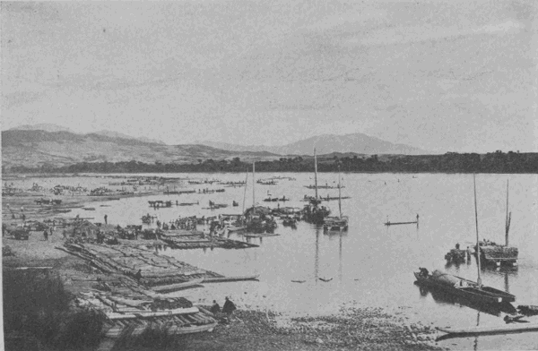
吉林に於ける松花江
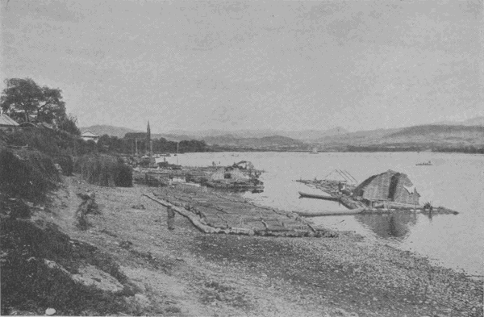
吉林の一部（左方）と松花江
古馬車の喪服夫人を乗せたるが楡の大路を唯だ一つ行く
東支鉄道車中
しら鷺の羽ばたく程のあえかなる川波立つれ寛城子
マアルシユカ・ナタアシヤなどの冠りもの稀に色めく
吉林
朝風やわが汽車はたんぽぽの穂の白きをばつたひて入りぬ
土們嶺
松花江星の色してひろきかな吉林城をめぐりゆく時
旅路にて別るる友と来て立ちぬ吉林城の
吉林の古著の市の
筏行く吉林城のかたはらを流るる頃は木の白くして
吉林の
山さして
松の実を杖のかしらに人割るも
そのむかし吉林省に王気立ち
わが
大きなる川もろともに吉林の城暮れんとす低きところに
いにしへの柳条辺も夕月の明りの中にありて寂しき
野の上の月のありかに霧かかり
長春
城の門あらし立つなり長白の
朝陽寺長春城もくづれたる堤も川もおなじ灰いろ
伊通川人多くして橋細しかからずもがな月夜に行かん
公主嶺
公主嶺
旅人が来て倚る楡の木の
しづかなり水ここにして分るると云ふ
まろき楡円き柳の枝となる羊飼はるる
青白く
撫順
石炭に琥珀まじれりかかる身も涙を下に抑ふるごとし撫順なる黒き層をば掘り下ぐれ冬ぐもりするペチカのために
重なれる山は
夕ぐれに波しらじらと掻き立てて九つ遊ぶ
撫順にて
奉天
畑青し東三省は滅ぶ無し煩らふなかれよきその
宮門の濃き黄の瓦かがやきてかささぎ飛べる奉天府かな
便衣隊現れぬとて走りかふ
われは聞く
ここちよく朝風吹きぬ屋の上の痩せて尖がれる獅子の口より
あざみ咲く土に太宗おはします
松風がたびびとに添ひ
しら玉の柱なれども手ざはりの土にまさらず年を経たれば
柳絮ちり隆恩門の
牛を引き
夏草のおほひもはてず塚なるは塚のかたちに伸びてはかなし
旅人は独り思はず野も水も雲も愁ひをともにこそすれ
大連に帰り旅順星が浦をば再び訪ふ。
大路なる星が浦山の方にもしら波のひるがへるかなアカシヤ咲きて
窓ひろく波よりきたり波かへる硯の箱の巻絵のやうに
日輪が泳ぎ去りたるのちなれば影よりさびし
すでに我が別れの涙こぼれそめ朧ろになりぬたそがれの浜
初夏の
悲しくもこの世ならざるところより霧の寄せくる旅順口かな
わが船を
霧かかり冷たきものとなりにけり船も山なる
雨降りて桃源台の赤土の濡れ行く香こそ哀れなりけれ
わが心
旅
満洲の丹朱ほのかに残るべき旅の心と思ほゆるかな
誤りたる呉夫人の訃報を得たりし時
わがために柳の枝をさしたりし船を夫人も我れも見がたし嫩江の月夜とおなじ世とも無き世をたちまちに見たまひし君
水荘の
嫩江の
呉夫人の
［＃改丁］
［＃ページの左右中央］
満蒙遊草 漢詩 與謝野 寛
［＃改丁］
戊辰暮春、将伴内子遊満洲蒙古及北京、与諸友飲、三首
臨別姑同酔。京華三月楼。文章期晩節。家国足深憂。幾作四方客。復登千里舟。諸賢多勤勉。何以答風猷。春風吹我去。万里向瀛西。鬱塞豁然闢。汗漫遊不迷。草盧諸子守。詩伴逸妻携。聊継揚雄学。殊方言欲稽。
窺園何足道。暫閼読書楼。梅耐三冬苦。人懐千載憂。平生孰同志。明日独扁舟。不是漫遊癖。聊思身後猷。
将発東京、寄長城堀口九萬一詞兄
詩思鬱勃壮心加。忽向天涯揚策斜。別後知君饒好句。春風見遍満城花。佐渡渡邊湖畔有約不至、乃有此寄
春尽故人終不至。千里我有禹域行。不妨今日難相見。相見所言只旧情。帰来好向故人誇。竜沙落日燕京花。五月五日、発東京向神戸車上有作
万里向西辞帝※［＃「門＜煙のつくり」、U+95C9、334-1］。牡丹紅薬欲開辰。送春歳歳人傷別。卻是今年春送人。搭汽船亜米利堅号、発神戸、瀬戸海上所見
両岸青山送我船。春波百里碧如氈。白帆変得紅帆好。無数行舟夕照前。黄海舟中、与東京、仙台、福岡、京都四大学諸教授語、賦此以似
晴波浩蕩一帆遅。黄海潮風緩緩吹。同調自携解詩婦。関情只有守家児。始為千里満洲客。偶遇諸家大学師。間卻山東兵乱事。吾儕別有答清時。（自注、時山東省済南有兵乱、我国亦出兵）
観大連埠頭苦力等所飼「百霊」有感、賦此似大連諸友
有禽名百霊。貌似告天子。已有鴬其瞳。又有鶉其嘴。唯是好其音。非有羽毛美。遠自南嶋中。来此遼東市。遼東力役徒。多自山東徒。山東墳墓地。兄弟皆把耜。近年兵禍多。田荒盧亦燬。相携越海来。欲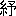父母死。甘為卑賎奴。忍辱又忘恥。日日負万斤。汗流額及趾。辛苦酬其労。所得半元耳。粗食而垢衣。不知味甘旨。 過一年。漸致百金累。乃向故園遣。一家助生理。若猶有余貲。所購何物是。百霊懇飼養。斑竹小籠裏。朝朝与諸穀。昏昏浴諸水。冬日加諸衾。卻自覆無被。丁寧如事君。殆欲拝且跪。力役人幾千。此情皆一揆。陌頭楊柳樹。青青水之
過一年。漸致百金累。乃向故園遣。一家助生理。若猶有余貲。所購何物是。百霊懇飼養。斑竹小籠裏。朝朝与諸穀。昏昏浴諸水。冬日加諸衾。卻自覆無被。丁寧如事君。殆欲拝且跪。力役人幾千。此情皆一揆。陌頭楊柳樹。青青水之 。各各携籠来。左顧又右視。或有攀高枝。春風懸在彼。或有援低枝。春風懸在此。環坐共粛然。黙黙如有俟。此時籠中物。一声両声起。群鳴交相振。銀鈴与玉珥。人人猶無言。傾耳悉莞爾。妙音入微時。相顧大歓喜。頓忘平生労。鈞天広楽比。噫此不学者。楽与君子邇。教学之於楽。知不可以已。翻思籠中禽。非鳳又非雉。其音感万夫。似天降休祉。此鳥称百霊。名得了有以。
。各各携籠来。左顧又右視。或有攀高枝。春風懸在彼。或有援低枝。春風懸在此。環坐共粛然。黙黙如有俟。此時籠中物。一声両声起。群鳴交相振。銀鈴与玉珥。人人猶無言。傾耳悉莞爾。妙音入微時。相顧大歓喜。頓忘平生労。鈞天広楽比。噫此不学者。楽与君子邇。教学之於楽。知不可以已。翻思籠中禽。非鳳又非雉。其音感万夫。似天降休祉。此鳥称百霊。名得了有以。旅順
爾霊山下歩斜陽。何独詩人易断腸。鄂虜半年死能守。天兵幾度進而僵。乱山埋骨青松緑。一塔表忠金字光。回首当時豈堪説。将軍不問二児亡。登千山、宿大安寺
千山在奉天省、南部諸山中、有勝概奇絶之称。山中四十八渓、険千仭、奇巌層層、直達山頂、疎松参差点綴其間、又雑以奈樹柞樹、奇勝万千、不遑応接。上絶頂以俯瞰、則満洲平原千里茫茫、古代靺鞨、中世金遼故地、可一瞬而尽也。山中有四大寺、十大観、九宮、四菴等。其他諸廟亦頗多。而其最古者隋唐所創、近猶不下宋代、概皆係明清両朝重修、而輪奐之美存焉。又多蔵古来帝王扁額、名流題寄。寺有禅僧、観有道士、並守清不食葷、頗見古風不廃。予等登攀為五月下浣、梨花既辞、新樹如染、林下処処紫丁香盛開。紫丁香、西人所謂利刺（Liras）也。
平生登覧志。来極千山巓。危磴層層立。疎松矗矗聯。不看飛瀑迸。只仰峭千仭、奇巌層層、直達山頂、疎松参差点綴其間、又雑以奈樹柞樹、奇勝万千、不遑応接。上絶頂以俯瞰、則満洲平原千里茫茫、古代靺鞨、中世金遼故地、可一瞬而尽也。山中有四大寺、十大観、九宮、四菴等。其他諸廟亦頗多。而其最古者隋唐所創、近猶不下宋代、概皆係明清両朝重修、而輪奐之美存焉。又多蔵古来帝王扁額、名流題寄。寺有禅僧、観有道士、並守清不食葷、頗見古風不廃。予等登攀為五月下浣、梨花既辞、新樹如染、林下処処紫丁香盛開。紫丁香、西人所謂利刺（Liras）也。懸。老柏交梨樹。流鴬和杜鵑。遼城望外小。渤海指頭円。雲密路時絶。巌高天欲穿。梵音諸嶺寺。竜気万年泉（竜泉寺有竜井）。幽洞深蔵仏（羅漢洞）。崇台夐住仙（仙人台）。隋碑苔久鎖。唐臼雨空研（並有山中）。宝殿金光浄。画楼丹彩妍。 懸天子筆。壁掛古人篇。道士常探薬。頭陀永断羶。紫丁香馥郁。皎月影嬋娟。客借黄庭読。僮斟緑水煎。唯知自然妙。姑忘世情偏。遊賞幾回得。中宵不肯眠。
懸天子筆。壁掛古人篇。道士常探薬。頭陀永断羶。紫丁香馥郁。皎月影嬋娟。客借黄庭読。僮斟緑水煎。唯知自然妙。姑忘世情偏。遊賞幾回得。中宵不肯眠。其二、用朱子月夜述懐韵
清徹上峰気。不許客衣単。童子晩吹火。煙 松樹間。自笑平生語。漫然誇素寒。願俟詩骨痩。抱巻住千山。
松樹間。自笑平生語。漫然誇素寒。願俟詩骨痩。抱巻住千山。遼陽
東風行万里。転使我魂清。遼水波無迹。辺沙雨作声。春城柳絮乱。古塔暮煙生。到処把詩筆。異郷多弟兄。微雨中泛鴨緑江、望統軍亭及九連城
鴨緑江頭望。統軍何代楼。浩歌宜放悶。長笛適催憂。雁影過辺塞。雨声入客舟。詩人観万古。笑殺覇王猷。東蒙古途上、寄東京諸友
五月東蒙春未加。黄埃十丈日車斜。遊人始識竜沙路。不似神京踏落花。赴南車上作
左提一詩婦。右挈両詩友。四人万里遊。古孰得似否。上車如在家。対坐把毫賦。路入東蒙沙連天。風捲黄埃暗于霧。車窗忽望土城明。夕陽照出南車上作南府。南投大通旅館、館係邦人所営。此地排日気勢太熾、邦人婦女小児、皆避難他方、而其留者入夜輙閉戸不出。立名森君、適与予同宿、始納交於君。君本知予名、又善国風南蒙古境。行旅太艱辛。驕卒漫遮路。健 吠向人。墟荒今憶昔。草短夏猶春。霜白朔辺土（地生曹達、白似霜）。風黄沙漠塵。磧中忽聴銃。車上欲廻輪。朽木存古祀（城中有喜雀樹、胡人祀之、今既朽）。新城多漢民。
吠向人。墟荒今憶昔。草短夏猶春。霜白朔辺土（地生曹達、白似霜）。風黄沙漠塵。磧中忽聴銃。車上欲廻輪。朽木存古祀（城中有喜雀樹、胡人祀之、今既朽）。新城多漢民。 醪催酔早。
醪催酔早。 笛引愁頻。喜遇同郷客。唱酬相与親。
笛引愁頻。喜遇同郷客。唱酬相与親。面鹹（面鹹漢語、西人所謂曹達也）
曹達沙中気。欲騰風日乾。霜白凝不滅。凛乎夏猶寒。採来試置舌。其味太鹹酸。以水淘漉了。仍看玉屑残。二八胡人婦。投之香水盤。※［＃「（水／廾）＋頁」、U+982E、339-1］面如玉。澣濯布成 。微物還難棄。造化意自寛。今日東方国。衆口事謾
。微物還難棄。造化意自寛。今日東方国。衆口事謾 。競兵又争利。紛紛逞三端。挙世都渾濁。何人能相拌。願此曹達水。一変東海瀾。揚清将激濁。未知天下難。
。競兵又争利。紛紛逞三端。挙世都渾濁。何人能相拌。願此曹達水。一変東海瀾。揚清将激濁。未知天下難。自昂昂渓、赴斉斉哈爾城車上
行尽東蒙路。望中無一樹。沙吹天逆升。日与車横度。五月既聴虫。終年不知露。興安嶺那辺。万里蒼茫暮。与黒竜江省督軍呉俊陞夫人李氏、聯車遊城外。将軍劉得權君夫妻泛船嫩江、又張宴水荘。席上劉君詩先成、乃和以酬、五首
万里辺城外。軽車抵嫩河。（嫩江、蒙古大河之一）水高沙岸濶。山遠月明多。画舫双双泛。（今夕泛両船、一船劉君操棹、一船李夫人操棹）春鴻点点過。嬋媛賢婦棹。慷慨主人歌。今夜客同酔。一天風亦和。（偶遇蒙古風歇、天晴月出）座中吾独老。再会遂如何。其二
万里平沙来駐車。将軍劉氏嫩江家。把杯姑忘在殊域。月照画船人似花。其三
意気風流兼得難。天涯況又共成歓。一生一度嫩江月。劉氏楼中把酒看。其四
黄昏共踏嫩江坡。三両夫人細細 。画舫揺揺徐弄棹。驚鴻堕影在晴坡。
。画舫揺揺徐弄棹。驚鴻堕影在晴坡。其五
嫩江五月柳花津。来作将軍劉氏賓。横引落霞沙帯紫。斜涵新月浪翻銀。沙場侑酒皆従卒。画舫把橈是主人。歓会何時復如此。半宵臨別涙沾巾。哈爾賓駅頭、弔伊藤博文公遭難遣迹
少年曽侍浪滄閣。白髪来弔松江頭。不知自任天下重。兇豎擬報蛮荊讎。于今東方猶多事。誰為蒼生解深憂。惆悵回首思往日。竜沙風黒水空流。（自注、会所謂蒙古風横巻沙塵、一天暗澹。末句故及）
哈爾賓公園
寂寞名園春似秋。楡銭散地客心愁。将軍豪興人猶記。一夜噴泉香水流。（自注、此園、露国帝政時代、彼国将軍寳爾和徳所築、当時将校貴女、毎夕競集、開音楽舞踏会於園中、今無復当年盛観也）
哈爾賓客中、呈古澤幸吉先生
先生白髪未云還。留住朔方沙漠間。卓落東邦千載策。蒼茫黒水両山。哈爾賓雑詩二首
俄人少女競春妝。絳帽素羅短短裳。松江自操華舫。喚歓泛在水中央。晩来上岸把臂歩。喜泰大街万燭光。戯院未開天尚早。共倚酒家柳外牀。（自注、労農露国婦女、近年衣帽争著紅、葢其国新政標識也。喜泰街繁華如我東京銀座街、此地漢人、以演劇映画両館、併称戯院、客概在酒家茶館前、対卓面坐、飲酒喫茶、与欧俗同）
夜過三更始開場。妙舞清歌百燭光。美酒如泉花競馥。名 各凝五月妝。（西人最喜五月、以為陽春嬉遊之節） 老来読書慣徹夜。夜遊擬倣白面郎。唯恐詩人客中興。誤以狂名伝故郷。
各凝五月妝。（西人最喜五月、以為陽春嬉遊之節） 老来読書慣徹夜。夜遊擬倣白面郎。唯恐詩人客中興。誤以狂名伝故郷。柳絮（於長春客舎作）
在枝垂白綿耶条。離樹翻時繊似毫。江頭不肯随萍去。無心卻看有所拠。揺揺浮在微風裏。且舞且飄不姑巳。片片映日生光輝。忽得廻風天外飛。晩来帯雨下遅遅。黏著芳草不自知。我踰海来五月初。遊自遼東及蒙古。行行向北卻逢春。期月看遍柳絮舞。撲鞍迸車又掠巾。最可憐処属征入。風帽雨衫誰与比。満蒙山川行且止。飄遊不発零丁歎。笑同柳絮度千里。吉林（吉林即古粛慎地）
三千年旧国。粛慎迹猶雄。万筏大江上。重城春樹中。山無峻山状。人有古人風。路遇寛袍女。華鈿髻紅。奉天北陵
駆車北陵路。風日度塵埃。石獣沙中立。野鴉墻上来。竜楼出古樹。鳳瓦半青苔。回首興亡事。帝業安在哉。本是粛慎族。父子勇兼徳。精悍八旗兵。踊躍起于北。一挙制天下。天下皆胡服。爾来三百年。宝統今已空。寂寞大王墓。只帯残霞紅。奉天、遇大元帥張作霖爆死之変、賦此似諸友
六月三日在瀋陽。天明 驚爆音揚。不知巨弾何者擲。三両鉄車裂似芒。忽伝将軍呉君死。又伝元帥張氏傷。日支両兵怱皇走。城中城外人欲狂。由来張也緑林傑。其面如羊其心狼。一介草賊制天下。先例有我藤吉郎。一朝擁兵入関内。名是元帥実僭王。中原未絶雄覇気。其奈猛将起四方。夕遁燕京出関外。強顔猶言帰故郷、故郷早有巨弾待。纔入城門身忽亡。我聞此変発長歎。不倣諸君皆称慶。今日徒見猛将多、忠誠誰負民之望。天下従是紛紛乱。江河重為酣戦場。嗚呼刺客所為何其誤。唯殪一張奈百張。
驚爆音揚。不知巨弾何者擲。三両鉄車裂似芒。忽伝将軍呉君死。又伝元帥張氏傷。日支両兵怱皇走。城中城外人欲狂。由来張也緑林傑。其面如羊其心狼。一介草賊制天下。先例有我藤吉郎。一朝擁兵入関内。名是元帥実僭王。中原未絶雄覇気。其奈猛将起四方。夕遁燕京出関外。強顔猶言帰故郷、故郷早有巨弾待。纔入城門身忽亡。我聞此変発長歎。不倣諸君皆称慶。今日徒見猛将多、忠誠誰負民之望。天下従是紛紛乱。江河重為酣戦場。嗚呼刺客所為何其誤。唯殪一張奈百張。奉天客舎作
始為瀋陽客。百事我心驚。城外炸弾響。陌中轎騎声。故宮花巳尽。新市柳纔栄。（新市即日本街）何日休征戦。四方成弟兄。再向大連車中二首
往路黄沙帰路蒼。遼東千里長新梁。楡銭柳絮同飛尽。只惹郷愁是夕陽。万里遠従蒙古還。金州路入緑揚間。車窗屡見迎吾笑。一月以前曽識山。再過旅順
人間好戦古今然。旅順口頭万感牽。潮激雷威猶※［＃「石＋（馬＋爻）」、U+791F、344-6］響。雲余※［＃「さんずい＋珍のつくり」、U+6CB4、344-6］気尚弾煙。骨枯有塔催新涙。崖裂無山存旧肩。寂寞黄金台下路。胡藤花白昼聴鵑。